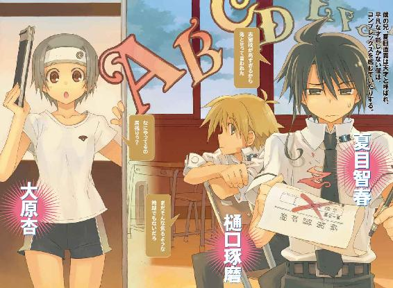
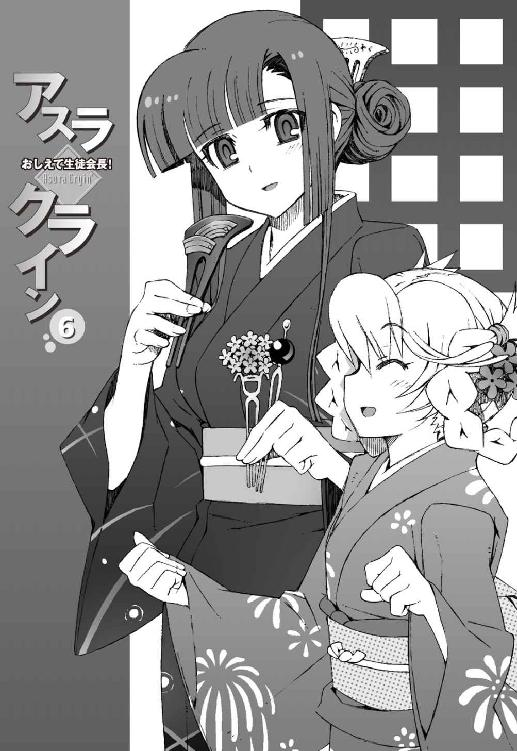
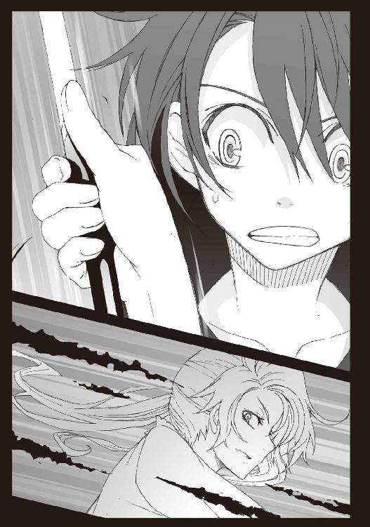

| アスラクライン（6） おしえて生徒会長！ (電撃文庫) | |
| 三雲 岳斗 & 和狸 ナオ | |


本書（電子版）に掲載されているコンテンツ（ソフトウェア／プログラム／データ／情報を含む）の著作権およびその他の権利は、すべて株式会社アスキー・メディアワークスおよび正当な権利を有する第三者に帰属しています。
法律の定めがある場合または権利者の明示的な承諾がある場合を除き、これらのコンテンツを複製・転載、改変・編集、翻案・翻訳、放送・出版、公衆送信（送信可能化を含む）・再配信、販売・頒布、貸与等に使用することはできません。
φ プロローグ
『──はい、苑宮です』
電話の向こうから聞こえてきたのは、礼儀正しい応答の言葉だった。少しだけ幼さを残した少女の、よそ行きの声。
聞き覚えのあるその声に、僕は軽く動揺した。まったく予想外の事態というわけではなかったが、用意しておいたセリフをド忘れしてしまってうろたえる。どうして彼女が電話に出るのだ。確率は三分の一だったのに。
『もしもし？』
無言の僕を怪しんだのか、電話の声に警戒の響きがこもった。
このまま間違い電話のフリをして切ってしまおうか、とも思う。しかし今どきの電話機なら着信履歴が記録されていてもおかしくないし、そんな証拠が残ってしまったら次に会うときに気まずくなってどうしようもない。
なにか言わなければと僕は焦り、恐ろしくぎこちない口調で、
「あの......夏目ですけど」
どうにか名乗ることに成功した。
その瞬間、黙りこんだのは電話相手の彼女のほうだった。怯えた吐息のような『あっ......』という声が聞こえた気もしたが、その真偽を確認するすべはない。僕たちは互いに次の言葉を続けることができず、気まずい沈黙が電話回線に充満する。
実によくない状況だった。もう少しなにか説明を追加したほうがよかっただろうか。しかし、こういう場合、なにを言えばいいのだ。お母さんに替わってもらえるかな。ダメだ。これでは怪しい電話セールスだ。やあ、お兄ちゃんだよ。ダメだ。論外だ。
久しぶり、元気だった？
悪くない。これなら自然だし、なれなれし過ぎるということもない。よし、これでいこう、と僕が決意を固めたとき、
『──なにやってんの、智春。黙りこんじゃって』
僕の耳元で無遠慮な操緒の声がした。
長い髪をふわりと空中に泳がせ、制服姿の女子高生が僕の背後に現れた。
色素の薄い彼女の身体を透かして、うっすらと背景が透けている。明らかに普通の人間の姿ではない。機巧魔神の射影体。
かつて僕の幼なじみだった幽霊の少女を見上げ、僕はますます焦りを覚えた。
操緒が消えているタイミングを見計らって電話したのが、思いっきり裏目に出た予感。
僕の背後で女の子の──しかも幽霊の声が聞こえたせいだろう。電話相手の少女が驚いている気配が伝わってくる。
「操緒、悪いけど、しばらくどこか行っててくれ」
僕は声を潜めて言った。すると操緒は当然のように顔をしかめ、
『なにそれ。操緒がいるとできない話？ どこに電話してんの？』
「実家だよ」
『うそ。なんでおばさまと話すのに、そんなガチガチに意識しちゃってんの？』
「べつに意識してないよ。だからくっつくな。離れろ」
『んー......なにをそんな慌ててるわけ？ 電話の相手、誰なの。嵩月さん？ 朱浬さん？』
「違うってば。いいから静かにしてろよ、向こうに聞こえるだろ」
僕は必死で抗議した。なにを勘違いしてるんだバカ操緒。
重苦しい沈黙が続く中、電話相手の少女が苛立っている気配がなぜか明確に伝わってくる。気持ちはわかる。電話をかけてきた相手が自分を無視して用件も言わずに、電話の向こう側だけで騒いでいたら、それは腹も立つだろう。
『杏ちゃんならメールで済ますだろうし、佐伯ちゃんってことはないよね......あ、もしかして、ひかり先輩とか......!?』
「だから違うって言ってるだろ」
操緒が知り合いの女子の名前をあげるたびに、電話の向こう側の雰囲気が悪くなっていく。
挨拶はもう諦めて、とりあえず用件だけ伝えよう。僕がそう決意を固めたとき、
『......バカ』という細いつぶやきが、僕の耳元でたしかに聞こえた。続けて電話機を叩きつけるような音が鳴り響き、そのまま乱暴に回線が切断される。
「............」
完全に沈黙した電話機を眺めて、僕は呆然と立ち尽くした。怒ってるな、とは薄々感じていたが、まさか用件を切り出す前に拒絶されるとは。
かけ直してもたぶん出てはもらえないだろうし、電話がつながったとして、うまい言い訳ができる自信もない。僕は静かにため息をついて、待ち受け状態の携帯電話を折りたたんだ。
『あ、あれ......どうしたの、智春？ もしかして怒ってる？』
力尽きてベッドに転がった僕に、操緒が愛想笑いで訊いてきた。
僕は無言で首を振る。怒っているというよりも、異様に疲れた。操緒に文句を言う気力も残っていない。あの子と話をするのは、やはり苦手だ。
そんな僕の様子を見て、思いあたることがあったらしい。操緒は少し意外そうに目を細め、
『もしかして、さっきの電話の相手って、和葉ちゃん？』
「だと思う」
『......なんで推測なのよ？ 妹でしょ』
「いやまあ、そうなんだけどさ」
妹という言葉に強烈な違和感を覚えて、僕は弱々しく息を吐いた。
苑宮和葉は市内の名門女子校に通う中学生だ。僕の母親の再婚相手である苑宮氏の一人娘で、つまり理屈の上では彼女は本当に僕の妹なのである。
とはいえ、うちの母親が僕に黙って再婚したのは、ほんの三カ月ほど前のことであり、それ以来、僕が和葉とまともに会話したのはわずかに三回。おまけに最初に引き合わされたときの、僕たちの第一印象は最悪だった。
無理もない、とは思うのだ。
いきなり知らない男子を連れてきて、今日からコイツがおまえの兄だ、と言われても普通は困る。ましてや、その相手が幽霊憑きだったりした日には尚更だ。
そんなわけで僕は苑宮一家とは別れて下宿で一人暮らしを始め、いまだに和葉とは、うまく意思疎通できずにいるのだった。笑ってくれたらけっこう可愛いのに、とは思うのだが。
『で、どうして苑宮の家に電話したりしたわけ？』
操緒が少し不思議そうに訊いてくる。まあ、不思議だよな。こういう結果は予測できたのに。
「兄貴の居場所が知りたかったんだよ」
『直貴くんの？』
そう、と僕はうなずいた。
五歳離れた僕の兄、夏目直貴は、地元では有名な天才少年だった。それゆえに、ヤツがなにを考えているのか僕にはよくわからない。
高校時代から事業を立ち上げ、企業の顧問やアドバイザーみたいなことをしているかと思えば、現在は海外留学中。なんの研究をしているのかしらないが、世界各地に出没し、弟の僕ですら正確な居場所がつかめない。半失踪状態なのである。
だが、まあそれはどうでもいい。
どうせヤツが近くにいたらいたで、デキのいい兄貴と比較されたり、研究の実験台にされたりして、僕がロクな目に遭わないのは経験上よくわかっているからだ。
問題なのは、ここ最近、僕の身に降りかかっているいくつかの不幸のことである。
入学式の前日に持ちこまれた謎トランクと、その中に封印されていた機械仕掛けの悪魔──機巧魔神。そして悪魔。一巡目の世界の記憶。
わけのわからない出来事ばかりだったが、ひとつだけ確実なことは、直貴がなにかを知っているということだった。むしろヤツ本人が仕組んだんじゃないかと思うような事件も多かった。
とりあえずの僕の目標は、操緒を生き返らせることである。機巧魔神に隠された秘密を調べ、封印された彼女の本体を解放する。そうすれば僕が幽霊憑きとして悩むこともなくなり、血のつながらない妹との関係も多少は改善する──かもしれない。
そのために、まずは兄貴に会って、ヤツの知る情報を聞き出さなければならないのだ。その事実に、最近ようやく僕も気づいたのだった。
『んー......なんでそれで和葉ちゃんと電話？』
操緒が顎に指をあてて訊いてくる。
「ウチの母親と話がしたかったんだよ。もしかしたら兄貴の居場所を知ってるかもしれないと思って。病院に電話したら非番だって言われたから」
ふーん、と納得してうなずく操緒。僕の母親は看護師なのだ。ちなみに再婚相手の苑宮氏は同じ総合病院に勤める小児科医である。
『もっかい電話したら？』
「いやそれは無理」
お気軽な口調の操緒の提案に、僕はのろのろと首を振る。今の僕には、あの妹の相手をする気力は残っていない。てか、彼女を怒らせた責任は操緒にもあると思う。和葉はどうも幽霊を嫌っている──というか、ひどく苦手にしているようだし。得意な人間も少ないだろうけど。
『だったら直接会いに行く？』
「それはもっとダメだろう」
なにしろ前とは状況が違う。今の操緒はいろいろあって、幽霊でありながら普通の人間にも見えてしまうのだ。ウチの母親だけならまだしも、一般人の苑宮氏や幽霊嫌いの和葉の前に、操緒に憑かれたまま出て行くわけにはいかない。世間の人々が全員、洛高の生徒たちのように順応性が高いと思ったら大間違いなわけで。
『じゃあどうするの。直貴くんの居場所はわからないまま？』
「いや、ウチの母親が兄貴の連絡先を知ってるとは限らないし。ほかにも心当たりがあるから」
『心当たり......？』
意外そうにつぶやく操緒に、僕は黙ってうなずいてみせた。
そう。兄貴の行方を知っていそうな人間の候補は、まだ何人か残っている。
だが、そのときの僕はまだ気づいていなかったのだ。彼女たちとの遭遇が、僕を新たな不幸の渦中に巻きこむことに。
それは、あの壮絶な夏祭りの直前のこと。
長い雨の季節が終わりに近づいた、十日間の出来事だった。
第一話 王様遊戯
雨が降り続いている。
期末テストを間近に控えた六月の最終週。空は生徒たちの鬱々とした気分を映し出すかのように薄暗く、無駄に高い気温と湿度が僕たちの体力気力をじわじわと削っていく。
美化委員の仕事であるプール掃除から始まって、最終的には屋外プールそのものを湖の底に沈めて終わった地下水路での事件から、およそ一カ月が経過していた。
その間にもいくつかのトラブルに巻きこまれ、相応の不幸を味わいながらもかろうじて生き延び、ようやくたどり着いた週末の放課後だ。
来週から期末試験が終わるまでの十日間ほどは、部活動も禁止されている。つまり科學部の下っ端部員として、怪獣退治やら下着泥棒の捜索やらに駆り出される心配をしなくて済むということだ。そんなわけで鬱陶しい天気とは裏腹に、僕の気分は明るかった。
ほんの一時間ほど前までは。
「で......どうしてこんなことになってるのか、説明してくれるかしら？」
腰に手をあてて立っているのは、同級生の佐伯玲子だった。第一生徒会会長、佐伯玲士郎の妹で、勝ち気な雰囲気のお嬢な美少女だ。
彼女が冷ややかに睥睨しているのは、実験室棟校舎一階の化学準備室。すなわち洛高科學部の部室である。
怪しげな黒科学的オブジェが陳列されていたりして、普段からお世辞にも健全とはいえない科學部室だが、今日は一段と悲惨な様相だった。
作業机の上には、スポンジと段ボールの空き箱が散乱している。床一面に刻まれた怪しげな紋様。そして部室全体がうっすらと焼け焦げ、割れたガラスと崩落した天井の破片が、ところ狭しと散らばっていた。
それよりも更に悲惨なのが、部員たちの有様だ。
アニアは両手を拘束されたまま憮然とした表情を浮かべているし、朱浬さんは上半身下着姿で床にぺたんと座りこんで放心状態だ。
洛高の制服ではないセーラー服を着た嵩月が、困ったようにうつむいている。
樋口は鼻血を流しながら床に仰向けに転がっているし、操緒はめずらしく涙目になって顔を赤らめていた。
そして僕。僕はハダカの上半身にエプロンという姿で、仁王立ちの佐伯妹をため息まじりに見上げている。事情を知らない佐伯妹が、説明を求める気持ちはよくわかった。
「話すと長くなるんだけど......」
気乗りしない口調で僕が告げると、
「上等よ。いいからさっさと説明しなさい。でないと、今のあんたたちの姿を写真に収めて、学校中にばらまくわよ」
佐伯妹は高飛車な口調で宣告した。
やれやれ、と深いため息をついて、僕は床に散らばった浅緑色の石の欠片を眺めた。
元はといえばウチの兄貴が悪い。
あの男がこれを送りつけてこなければ、僕たちがこんな目に遭わされることもなかったのだ。すべてはこいつが部室に届いたところから始まった。
あの忌まわしき、王様遊戯が。
○
洛高科學部の部員数は総勢五名。
部長代理の朱浬さんを筆頭に、彼女の美貌に誘惑された樋口と、成り行きで入部することになった僕と嵩月奏。そしていまだ姿を見せない正式な部長である。
部長の不在の理由は、入院中だからと聞かされていた。しかし進級して三カ月近くが経過した今になっても不在なのは、他人事ながら不安になる。こんなんで出席日数や内申は大丈夫なのだろうか。後輩として、一度くらい見舞いにいったほうがいいのではなかろうか。
まあ、それはともかくとして。
実は科學部の部室には、部員以外にも我が物顔で入り浸っている生徒が数名いる。
そのうちの一人は僕に憑いている幽霊の操緒で、まあ彼女のことはどうでもいい。僕と運命共同体である彼女は、事実上、科學部の備品みたいなものだからだ。
多少説明に困るのは、もう一人の準部員である。
僕が化学準備室を訪れたとき、彼女は作業机の奥に座って、巨大な段ボールと向き合っていた。金髪碧眼。高価な磁器のような白い肌。小振りな頭部にほっそりとした手足。日本人にはあり得ないその容姿は、まさに天使のような美少女だ。
ただし極端に幼い体型と、ふて腐れたような表情をのぞけば、だが。
「......なにやってるんだ、アニア？」
開封した段ボールに頭半分突っこんでもがき続ける幼い同級生に、困惑しながら僕は訊いた。
その声が耳に届いたのか、ぶはっ、という溺れかけのような呼吸音とともに、彼女は小振りな頭を上げた。勢いあまって、段ボールに詰められていたスポンジ状の緩衝材をまき散らす。
それは交換留学生のアニア・フォルチュナだった。
まだ十歳かそこらだが、数カ国語を自在に操る天才少女で、しかも〝運喰らい〟の悪魔でもある。
黒科学の専門家として、機巧魔神について調べるために第三生徒会に招かれた彼女は、自然な成り行きで、黒科学の研究機関である科學部に入り浸っているのだった。
ついでにいえば彼女は僕と同じく鳴桜邸の下宿人でもあり、なぜか僕はクラスでもアニアの面倒を見る役目を押しつけられている。しかし、まさか人気のない部屋で段ボールに頭を突っこんで遊ぶ奇癖があるとは、さすがに聞いてないのだが──
交換留学生の少女は、ネコのように頭を振って髪についた埃を振り払い、
「ちょうどいいところに来た。手伝え、智春」
高慢な口調で僕に命じた。やはり段ボールで遊んでいたわけではなかったらしい。それにしても偉そうな態度だな。もう慣れたが。
「べつにいいけど。なんだこれ」
僕は荷物を部室の隅に置いて、アニアに呼ばれるままに近づいた。
部室にいたのはアニアだけだった。優等生の嵩月はクラスの女子につかまり試験範囲のことで質問を受けていて、樋口は日直。朱浬さんもまだ来ていない。
乱暴にこじ開けられた段ボールの蓋には、カラフルな書類が貼りつけられていた。国際宅配便の伝票だ。送り先の住所は学校で、受取人の名前はアニア・フォルチュナ・ソメシェル・ミク・クレウゼンブルヒ辺境伯令嬢。
『ニアちゃん宛の荷物？ ルーマニアの実家から？』
質問したのは操緒だった。アニアは素っ気なく首を振り、
「違う。通関用の書類だとベリーズ発になってるな」
『ベリーズ......って、どこ？』
操緒に訊かれて、僕は肩をすくめる。なんとなく赤道近くというイメージがあるが、正確な場所まではよくわからない。
「中米だ。メキシコの隣国で、ユカタン半島の付け根に位置している」
僕の代わりに答えたのはアニアだった。予想外の地名が出てきたことに僕は困惑し、想像上の地球儀を頭の中だけで無意味にグルグル回転させる。操緒は驚いたように目を大きくして、
『メキシコって、あのメキシコ？ タコスとかサルサソースとかテキーラとか』
たぶんそのメキシコだと思うが、なぜ飲食物ばかり。
『なんでニアちゃん宛の荷物がそんなところから届くわけ？ 誰か知り合いでも？』
操緒の質問につられて、僕も視線をアニアへと向けた。操緒が戸惑う気持ちもよくわかる。べつにアニアの知人がベリーズとやらにいたら困るということはないのだが、陽気でラテンなカリブ海のノリと、アニアのイメージはどうにも結びつかないのだ。これがシベリアのツンドラ地帯あたりなら、普通に納得できるのだけれど。
そしてアニア自身も怪訝な顔で、
「いや、中米に私の知り合いはいないが......これの送り主は、おまえの兄だぞ、智春」
「......は？」
アニアの言葉を理解するまで、少し時間がかかった。兄。ベリーズ。アニア宛の宅配便。あまりにも関連性がなさ過ぎて話がつながらない。どんな三題噺だそれは。
『じゃあ、その荷物って直貴くんが送ってきたの？ あ、ほんとだ......』
宅配便の伝票を見つめて、操緒が驚く。差出人の欄にはたしかに、見覚えがあるような無いような筆跡でナツメナオタカと書かれていた。
僕は呆然とその署名を眺めた。
じわじわと驚きが背中を這い上がってくる。あれほど求めていた兄貴の手がかりが、こうもあっさり手に入るとは。実の弟にはメール一通寄越さないくせに、下宿人の留学生には国際宅配便というのが今イチ納得いかないが、まあそれはいい。
「それって、ウチの兄貴が今ベリーズにいるってことだよな？」
伝票を広げて確認しながら、僕は訊いた。しかし操緒は、んー、と唸りながら、
『違うんじゃないかな。ホラ、差出人の住所がホテルになってるし、これって船便で送られてきたんだよ。一カ月くらいかかってるんじゃない？』
「この時期は、直貴の大学は夏休み期間だしな。中米にはフィールドワークで立ち寄っただけだと思うぞ」
アニアも補足してつぶやいた。六月から九月くらいまで。兄貴の留学先であるヨーロッパの大学には長い夏休みがあるのだと、そういえば僕も聞いたことがある。
「ってことは、また結局あいつは行方不明なのか......」
一瞬でも期待してしまっただけに、襲ってきた失望は大きかった。ただでさえ半失踪状態が続いているのに、留学先の学校も休みでは、兄貴の行方を突き止めるのはほとんど絶望的だ。
がっくりと肩を落とした僕の姿を哀れむように操緒が嘆息し、
『まだわかんないよ。この中に、なにか手がかりが入ってるかも』
「手がかりっていってもなあ......」
いちおう励ましてくれたつもりなのだろうが、一カ月も前に送り出された宅配便の中身に期待しろと言われても無理があると思う。そもそも兄貴が送ってきたモノを開封して、僕がいい目を見たことなど一度もないのだ。たとえば機巧魔神とかアニアとか。
とはいえ、こんなでかい段ボールに、いつまでも机の上を占拠されるのも困る。僕は渋々と緩衝材の束をかき分け、その中の荷物を探しあてた。
荷物の中身は、一辺が五十センチほどの青いプラスチックケースだった。薄汚れているが、見るからに頑丈で、壊れやすい工業製品を運搬するための容器ではないかと推測する。
容器の裏にはガムテープで、茶色の封筒が貼りつけられていた。
僕はそれを剥がして、封筒の中身をアニアに渡した。知らない国の言葉でタイプされていて、なにが書いてあるのかさっぱりわからなかったからだ。手紙、という感じではなかった。なにかの解説書だか論文だか、たぶんそういうものだと思う。
アニアは軽く眉を寄せ、じっと視線を書面に落とす。見知らぬ怪しい外国語だと思ったが、どうやら彼女には普通に読めるらしい。さすがは天才少女といったところか。
彼女が書類を読んでる間、暇になってしまった僕は再びプラスチックケースを持ち上げ、
「これって、開けてもいいのかな？」
『いいんじゃない？ 智春宛じゃないんだし、そんな危険なものでもないでしょ』
操緒がいつものように安請け合いする。実の弟に送られてきた荷物だったら危険、という理屈がよくわからないのだが、まったく否定できないのが悲しい。
僕は腹いせのように乱暴に封印のテープを破り、ケースの取っ手に指をかける。
留め金はなんの抵抗もなく、あっさりと開いた。
ケースに敷き詰めた黒いスポンジの上に、浮かぶように収められていたのは、一枚の仮面。
翡翠の大きな塊を削りだして作った、禍々しく不気味な石仮面だった。
○
樋口たちが部室にやってきたのは、それからほんの二、三分後のことだった。
「うーす......って、智春、なんだそれ？」
部室に入ってくるなり石仮面に気づいて、樋口が目を丸くする。その瞳がキラキラ輝いているように見えるのは、光の加減だけではないだろう。
成績優秀で顔立ちもまあまあ。黙っていればモテ体質の樋口だが、その正体は危険なまでのオカルトマニアであった。謎の遺跡の出土品とかオーパーツとか、この手の怪しげな代物は樋口の大好物だ。
「翡翠の石仮面？ マヤ文明パレンケ遺跡で出土したタイプに似てるけど......どうしたの、それ？」
樋口に続いて現れたのは、言葉を失うくらいの美少女が二人。
そのうちの背の高いほうが、おっとりとした口調で訊いてきた。
百七十センチを超える長身に、卵形の小さな頭と長い手足は、モデル顔負けの八頭身体型。ちょっと大人びた雰囲気で、知的なメガネのよく似合うデタラメな美人だった。
そんな彼女が、全身に重火器を内蔵した人間凶器であることを知る者は多くない──
科學部部長代理の二年生、黒崎朱浬その人である。
そして彼女の隣に立っていたのは、更に人間離れした美少女だった。
長い黒髪。透けるような白い肌。光の粒子をまとったような柔らかな美貌。ほっそりとしたシルエットには不似合いな胸の膨らみに、どうしても視線が惹きつけられる。
同じクラスの嵩月奏である。器量もよければ性格もよい。控え目で素直で成績優秀、喋りはトロいが運動神経は悪くない。
ただし彼女は人間ではなかった。〝地獄の業火〟を操る悪魔の家系、嵩月一族の一人娘。彼女の実家は、強面のお兄さんたちで一杯だ。
石仮面になにか怪しい気配を感じたのか、嵩月は端整な眉を寄せ、うー......と低く唸っている。なんというか、とにかく科學部員というのは全員あまり普通ではないのだった。
彼らといると幽霊の操緒がいちばん常識的に思えてきてしまう。
『智春のお兄さんが送ってきたんです。アニアちゃん宛に』
その操緒が、黙々と書類を読みふけっているニアの代わりに説明した。
「直貴さんが？」
朱浬さんが少し驚いたように目を細めた。うちの兄貴は、この科學部の元部長で、この学校の裏の世界では、いまだに有名人だったりするのだ。
彼女に見えるように、僕はケースに収められたままの石仮面を差し出した。素手で触れてもいいものかどうかわからなかったので、届いたときの状態そのままだ。
下唇を人差し指で色っぽく撫でながら、朱浬さんはケースをのぞきこむ。
あちこちひび割れて欠けているものの、石仮面はほぼ完全な顔の形を保っていた。
浅緑色に褪せた翡翠の光沢が、石仮面が作られてからの長い歳月を示している。
こういう古い器物には、それがたとえ砕けた土器の一欠片であっても、なにかしら貫禄だか威厳のようなものを感じるものだが、この石仮面にはその手の気配が一切なかった。
仮面に刻まれた表情が、あまりにも間抜けだったせいかもしれない。
目鼻立ちは幼稚園児が作った粘土細工のような適当なバランスで、輪郭そのものが斜めに歪んでいる。瞳の部分はタレ目がちに穿たれた空洞で、扁平な鼻に、への字口。
一言でいえばブサイクなのだが、強いて好意的に表現すれば、愛嬌があるといえなくもない。
「......これって、やっぱり黒科学がらみの遺産なんですかね。鳴桜邸じゃなくて、学校に送りつけられてきたってことは、科學部で取り扱えって意味だと思ったんですけど」
段ボールに貼りつけられていた伝票を引っぺがしながら、僕はおそるおそる訊いてみる。
しかし朱浬さんは、細い首を小鳥のように傾げ、
「うーん、心当たりないなあ」
綺麗に切り揃えた黒髪を揺らして振り返り、
「奏っちゃんは、なにか知ってる？」
「いえ......わたしもこういうのはよく......」
嵩月は困ったようにつぶやき、ゆるゆると首を振った。
そして樋口は命知らずにも、
「ふーん、思ったよりも軽いな」
ひょい、とためらいもせずに不気味な石仮面を持ち上げる。僕はぎょっとしてその姿を見た。
「お、おい......樋口......」
「ん？ 心配するな。べつに落としたりしねーよ」
「いやそうじゃなくて。正体がわかるまであんまり触らないほうがいいと思うんだけど」
「でも、触ってみないと調べようもないだろ？ ほら、なんかこの辺、文字みたいなものが彫ってあるし」
仮面の裏側を示して、樋口が言った。ふざけているのかと思ったが、そういうわけでもないらしい。
「文字......？」
僕たちも思わずつられてのぞきこむ。石仮面の額の裏側部分だ。たしかに見慣れない綴りのアルファベットが刻みこまれている。文章というには、少し短いような気がするが。
「スペイン語ね」
朱浬さんがぼそりと独りごちる。よくわからないが、言われてみればそれっぽい綴りだ。石仮面の本体とは、微妙に雰囲気が違う。石仮面に最初から刻まれていたというよりは、後世になって誰かが刻んだ注意書きとか、そんな感じ。
その間もアニアは無愛想な顔で書類を眺め続けていたが、やがてぼそりと、
「遊戯王様」
ようやく聞こえるくらいの声でつぶやいた。なんだそれは、と振り返った僕たちに、語学万能の天才少女は淡々と、
「その仮面の名前らしい。遊戯王様の仮面と呼ばれていた、と書いてある」
「ゆ......遊戯......王様の仮面？」
『なによその......いろんな意味でギリギリのネーミングは......』
僕と操緒が、額に冷たい汗を浮かべて低くうめいた。しかしアニアは素知らぬ顔で、
「そう呼ばれていたのだから仕方あるまい。どうやらなにかの儀式に使うための仮面らしいな。この報告書によると、王様遊戯と呼ばれていたそうだが」
「王様遊戯......」
なにやら荘厳な言葉の響きに、僕は気圧されてゴクリと喉を鳴らした。
ふと思い出してしまったのだ。中米に栄えたマヤ・アステカ文明圏では、人間を生きたまま切り裂いて心臓を取り出すという、生け贄の儀式が行われていたはず。
この薄気味悪い石仮面が、その手の血生臭い儀式に使われていた、と聞かされたら素直に納得してしまいそうだ。
とはいえ、なぜうちの兄貴が、そんなものをアニア宛に送ってきたりするのだろう。てか、これって重要文化財ではないのだろうか。勝手に国外に持ち出したりしてもいいのか？
「心配するな。こいつは模造品。レプリカだ」
「......ニセモノってことか」
「うむ。しかし、どうも黒科学による仕掛けが施されているらしい」
「仕掛けって？」
「装着者に対して強制力を持った強力な催眠暗示と運命確率の恣意的な操作──簡単に言えば、呪いだな。直貴め、その呪いを解除させるために私に送りつけてきたらしいが......」
ああ、と僕は納得した。ようやく兄貴の真意がわかった。
アニアは〝運喰らい〟の悪魔だ。自分では運気を創り出すことができない代わりに、他人や物質に宿った運気を吸い取る能力を持っている。
幸運を吸い取られる人間にとっては迷惑極まりない存在だが、それは彼女たちの能力の本質ではない。極端な幸運や不幸のバランスを調整するのが、彼女たちの本来の役割なのだ。
運そのものを操作する彼女たちの能力を使えば、器物にこめられた強力な不幸──すなわち〝呪い〟を無効化し、解除することが可能だ。
兄貴はアニアにそれを期待して、この〝遊戯王様の仮面〟とやらを送りつけてきたらしい。
しかしそれは裏を返せば、この石仮面はあの天才、夏目直貴をもってしても手に負えない危険物、ということになるのではなかろうか。なんというものを送りつけてきやがるのだ、あの男は。
憤懣やるかたない気分で息を吐き、僕はゆっくりと顔を上げた。
そして悲鳴を上げそうになった。
「ひ......樋口！ おまえなにやってんだ......!?」
「ん？」
くぐもった声で樋口がつぶやいた。その顔には浅緑色の仮面が装着されていた。僕たちがアニアの話に気を取られている隙に、このオカルトバカは、よりによって呪いの石仮面を自分で被ってやがったのだ。
あーあ、と操緒が呆れた表情でため息をつく。その隣で嵩月が、おろおろと困った表情を浮かべている。なんで止めてくれなかったんですか、と朱浬さんを睨むと、
「だって下手に触ったりして、あたしが呪われたら嫌じゃない？」
優雅に微笑んでそう答えた。こういう人だ。
しかし樋口は根拠もなく余裕の態度で、
「なに慌ててんだ、智春。ただのレプリカなんだろ？ こういうのってさ、目の前にあったら被ってみたくなるよな」
どうやらアニアの話の前半部分までしか聞いてなかったらしい。小声で話し合っていたのが裏目に出てしまったのだ。
樋口はなにやらご機嫌だ。石仮面を装着して吼えてみたり、太陽を浴びて身体が溶けるフリをして喜んでいる。正直、気持ちはわからないでもない。人間の心理としてエアーキャップがあればプチプチ潰したくなるし、他人の日記があれば読みたくなるし、仮面があれば被りたくなるものだ。だがしかし、
「うおっ!?」
がぎごぎぐぎ、と石仮面の内側で歯車が噛み合うような音が鳴り響き、樋口が悲鳴を上げるのを見てしまっては、生温かく笑っている余裕は僕にはなかった。
表面のひび割れに沿って、翡翠の石仮面が眩く発光する。
その光には見覚えがあった。機巧魔神が放つ魔力の煌めきと同じだ。
朱浬さんと嵩月が、咄嗟に姿勢を低くして身構える。その彼女たちの足下に、光り輝く紋様が描き出される。巨大な魔法陣の結界だ。
幾何学模様に埋め尽くされた無数の同心円が、科學部の部室を囲いこむ。完全に囚われた。たぶん出られない、のだろうな、これは。
『智春っ......』
操緒が僕を庇うように前に出る。しかし呪いの効果がわからない以上、どうにも手の打ちようがない。《 鐵》を喚び出せば、たぶん石仮面を破壊することぐらいはできると思うが、それでどうにかなるような呪いなのだろうか。
鐵》を喚び出せば、たぶん石仮面を破壊することぐらいはできると思うが、それでどうにかなるような呪いなのだろうか。
そして樋口は発光する石仮面を押さえたまま、ふおおおおおおおおっ、と叫び続けていた。
いやそれもギリギリだからやめろって。
○
樋口が苦しんでいた時間は、ほんの数秒ほどだった。魔法陣が安定すると同時に石仮面の発光も弱くなり、その仮面を額に張りつかせたまま、樋口は低く笑い出す。
「くくくくくっ......」
危うい雰囲気を孕んだその笑い声に、僕は渋い表情を浮かべた。いつもの樋口の様子ではない。具体的になにがどう違うというわけでもないが。
「お、おい......樋口、大丈夫か？」
『触わるな、無礼者』
仮面越しのくぐもった声で樋口が言った。
「無礼者って......おまえな」
払いのけられた手を振りながら、僕は嘆息。ずいぶん斬新なボキャブラリーだな、おい。
『どうなってんの、あれ？』
操緒が小声でアニアに訊いた。
「呪いの効果だな」とアニア。
そういえば、強力な催眠暗示の仕掛けがあるとか言ってたか。
『つまり樋口はあの石仮面に意識を乗っ取られちゃってるってわけ？』
「おそらくな。仮面を被ることで呪いが発動するようになっていたらしい」
『見た目、そんなに変化があるようにも見えないけど......』
石仮面の樋口を眺めて、操緒がつぶやく。
あの不細工な仮面を普通に被っているというだけで相当ヘンだが、たしかにそれ以外で樋口に変わった様子はない。つまり全身の毛穴から血を噴き出して死ぬとか、生き血を求めて彷徨い始めるとか、そういう感じではないということだ。
「思ったよりも強力な結界ね......中から出るのは不可能みたい......」
魔法陣の縁まで歩み寄った朱浬さんが、こめかみを押さえてうずくまった。
結界とはいっても物理的な障壁が張り巡らされているわけではないようだ。魔法陣の外に出られないという暗示が、僕たちにかけられているらしい。単純な理屈だが、それだけに破るのは困難である。力押しではラチが明かない。
「で、あたしたちを閉じこめてどうするつもりなの？」
おっとりとした口調で朱浬さんが訊く。その落ち着きぶりが恐ろしい。呪いの性質如何では、部室を火の海に変えてでも脱出する気満々なのが伝わってくる。
「呪いの目的は、儀式の再現だ」
報告書をめくりながらアニアが告げた。
『その通りだ、小娘』
両腕を組んだ偉そうな口調で告げたのは樋口。子ども扱いされた留学生の額に、ぴき、と青筋が浮くのが見えたが、アニアは乱暴なため息をついただけで、特になにも言わなかった。今の樋口に文句を言っても仕方がないと自制したのだろう。呪われているとはいえ、命拾いしたな、樋口。
『......儀式って、さっき言ってた王様遊戯ってやつのこと？』
アニアの手元の書類をのぞきこみながら、操緒が訊いた。
僕も同じように報告書とやらを眺めてみたが、目に入ったのはコピーを繰り返して劣化した文字の羅列だけだ。写真や挿絵のようなものを期待したのだが甘かった。まあ、生け贄の儀式の写真が載っているよりはマシか。と、
『いかにも』
謎言語解読中のアニアに代わって偉そうな口調で告げたのは、またしても石仮面樋口だった。
『余の司る儀式に参加できる栄誉を噛みしめるがいい、愚民ども』
『......誰が愚民よ。このブサイク仮面』
操緒がぼそりと反論する。呪いの石仮面を相手に信じられない口の利き方だが、そういえばこいつも幽霊なのだった。存在の非常識さでは大差ない。
「どんな儀式なんだ。その王様遊戯って？」
操緒と石仮面樋口が睨み合っている間に、僕は小声でアニアに訊いた。
しかしアニアはあっさりと首を振り、
「わからん」
「書いてなかったのか。その報告書とやらには」
「違う。儀式の内容は、王の意志によって自由に決められるんだ」
「王の意志......って、あの石仮面に意志なんてあるのか？ 人工知能ってヤツ？」
「いや、おそらくは仮面装着者の潜在意識が反映されるのだろうな」
「......装着者の願望？」
僕は、不細工な仮面をつけてパイプ椅子にふんぞり返っている樋口の姿を眺めた。あいつの潜在的な願望によって儀式の内容とやらが変化するというわけか。
「じゃあ、あいつが無意識に人を殺したいと思ってたら......」
「当然、それが儀式の内容に影響するな」
アニアが大人びた仕草で肩をすくめてみせる。
うげ、と僕は顔をしかめた。聞かなきゃよかった。あの軽薄な樋口に殺人衝動があるとは思えないが、なにしろヤツは重度のオカルトマニアである。純真無垢ってことはないだろう。ましてや彼の潜在意識まで信用しろと言われてもそれは無理だ。
「あの石仮面の作動原理は、機巧魔神のシステムの応用なのね」
頬に手を当てた朱浬さんが、感心したようにつぶやいた。
「催眠状態の装着者を演操者として、その意志で魔力を発揮してんでしょ。副葬処女を持たないぶんは、装着者の精神力を吸って動力源に変えているみたいね」
「うむ」
重々しい口調でアニアが肯定する。
正式な演操者ではないまでも、限定的に機巧魔神の能力を操れる──朱浬さんの右腕に内蔵された〝魔弾〟と似たようなメカニズムということか。そういや部室の床に描かれた魔法陣も、機巧魔神が展開するものによく似てる。
おそらく機巧魔神のような破壊的な能力でないぶん、効果が長く続くのだろう。
「......解呪、できる？」
嵩月が唐突に質問する。僕はハッとしてアニアを見た。そうだった。あの石仮面は、もともとそのために送られてきたものなのだ。
「無理だ。呪いが発動する前ならまだしも、完全に結界内部に閉じこめられてしまった以上、儀式が終わるまでは解呪する方法はない──」
「そう。なら......」
抑揚のない口調でつぶやいて、嵩月がスッと右手を持ち上げた。伸ばした彼女の掌の先に、なんの前触れもなく噴き出した炎が渦巻き始める。
離れていても熱気が伝わってくる。摂氏数千度の地獄の業火。嵩月の体内に流れる血液は、彼女の意志に応じて灼熱の炎に変わるのだ。
「ナイス、奏っちゃん」
にっこりと微笑んで、朱浬さんも左腕から不気味な機械音を鳴り響かせる。内蔵ショットガンの装填音。ちょっと待て、あんたら、なにする気だ？
「呪いの正体が黒科学の産物なら、本体を破壊すれば止まるでしょ。ただのレプリカなんだし、ヒグチが催眠状態で意識がないのなら遠慮する理由はないわね」
「いやいやいやいや、危ないじゃないですか！ 樋口の顔面にあんなべったり張りついているのに！」
「大丈夫よ。手加減するから」
うふふ、と天使のような微笑を浮かべる朱浬さん。変形した機械仕掛けの彼女の手首からのぞくのは、鈍く輝くショットガンの銃身だ。いや、どう見てもそれは大丈夫じゃないだろう。そもそもショットガンでどうやって手加減するのだ。
しかし止める間もなく朱浬さんは石仮面の額に狙いをつけ、ためらいもせずに射撃する。
さして広くもない化学準備室に、ずだんっ、と大気を震わす轟音が鳴り響いた。撃ち出したのが広範囲にばらまかれる散弾ではなく、一粒弾だったのがせめてもの救いか。
大物狩猟用の巨大な弾丸は、狙い違わずふんぞり返った石仮面樋口の顔面を襲い──
『無駄だ』
「......えっ!?」
聞こえてきたのは石仮面の砕ける音ではなく、朱浬さんの驚愕のつぶやきだった。ほんの数メートルの至近距離で、彼女の撃った弾丸が外れたのだ。
目標を見失った弾丸は、石仮面樋口の背後の壁にぶち当たって火花を散らす。
『なに......今の......』
操緒が短く息を呑む。朱浬さんの撃った弾丸が、石仮面樋口を襲う寸前、不自然な角度でねじ曲がったように僕には見えた。
「うー......っ！」
その直後、嵩月が音もなく仕掛けた。灼熱の火炎を剣のように伸ばして、石仮面樋口へと斬りかかる。人間離れした反応速度だった。ひるがえった彼女の黒髪だけが、美しい残像のように瞼に焼きつく。
だがしかし、石仮面は間の抜けた無表情のまま、
『わーっはっは、無駄無駄！』
「......っ！」
高らかな嘲笑が響く中、嵩月が驚いたように動きを止めた。
あり得ない角度から飛来したなにかが、嵩月の炎の剣を撃ち砕いた。
それは作業机の上の段ボールに命中して、緩衝材のスポンジをまき散らす。
朱浬さんの撃った弾丸だ。コンクリの壁に当たった一粒弾が、跳弾となって、偶然にも石仮面樋口を攻撃しようとした嵩月を襲ったのだ。偶然......いや、偶然、なのか、これは？
「遊戯王様の仮面の能力......〝運喰らい〟と同じ確率操作だ。この結界の中では何人たりとも、やつを傷つけることはできない」
呆然とする僕たちの耳に、アニアのため息が聞こえてくる。
思い出す。アニアたち〝運喰らい〟の悪魔の一族は、直接的な戦闘力を持たないかわりに、偶然の確率を操るのだった。それと同じ能力が、あの石仮面には備わっている、ということか。
朱浬さんの攻撃は〝偶然〟外れて、嵩月の攻撃は〝偶然〟防がれた。何度繰り返しても、おそらく結果は同じだろう。その幸運の供給源は、もちろん樋口の本体だ。
自業自得というやつだが、くだらないことに運気を使わされた樋口のことを哀れに思わないでもない。実に恐ろしい石仮面の能力である。さすが呪いというだけのことはある。
『納得したか。余に逆らっても無駄だということを』
尊大な口調で石仮面が告げる。
僕たちは無言でその言葉を聞いていた。背筋におぞましい寒気が走る。物理攻撃は無効で、樋口の身体は人質。しかも結界からは逃げられない。ただの不細工な仮面だと思って侮っていたが、実はこいつは恐ろしい敵なのではないだろうか。
『それでは儀式を始めようか。余を傷つけようとした代償、高くつくぞ』
無表情の仮面が、樋口の声でくくくっ、と笑う。
僕は突然、ひどい喉の渇きを覚えた。部室に囚われた全員の顔が緊張で強張る。
王様遊戯。
呪いの儀式。
何者かが──これほどまでに強力な黒科学を操る何者かが、古代の遺物に似せて造り上げた呪いの仮面。そこまでして再現したかった儀式というのは、いったいなんなんだ。
部室の床に刻まれた魔法陣が、輝きを増していく。
充満した濃密な魔力の奔流で息が苦しくなる。
『謹聴せよ──』
戦慄する僕たちに向かって、石仮面樋口は冷淡に宣告する。
その言葉にこめられた強烈な霊圧に畏怖を覚える。強制力を持った呪言だ。石仮面が輝きを増し、その周囲に青白い火花が散る。
『復讐と懲罰の神〝煙吐く鏡〟暗黒神テスカトリポカと余の名において命じる──第一の儀式、汝、三の数字を刻まれし者よ。己の下肢をもって臥する王の頭を休息せしめよ！』
雷鳴のような余韻を残して、石仮面の託宣が下された。
「......は？」
僕は、ぽかんと間の抜けた表情でそれを聞いた。
言い回しが婉曲すぎて、なにを言ってるんだかわからなかった。
カシをもってガするオウの......なんだって？
ふと気づけば、その場にいた全員が、なんともいえない表情を浮かべて樋口を見ていた。
白々とした沈黙が十秒ほども続いただろうか。
石仮面樋口は、ゴホン、とわざとらしく咳払いし、
『えーっとだな、つまり、三番の人が王様を膝枕しろ、ってことなんだけど......』
僕たちにおもねるように言い直す。
ああ、なるほど。今度はわかった。三番が王様を膝枕。
それが石仮面のいうところの第一の儀式か。呪いの試練が、膝枕。三番の参加者さんご指名でーす。待ってくれ、少し整理させてくれ。
ええとつまりアレか、王様というのはつまり石仮面樋口のことで、王様の命令は絶対で、遊戯の参加者は王様の命令にはなにがあっても従わなければならない、と。
ただし命令する相手は自由に選べるわけではなくて、ランダムに数字で選ばれて──
それが、うちの兄貴も恐れる呪いの儀式の正体で。
つまりそれって。
『......王様ゲーム？』
ぼそり、と操緒がつぶやいた。
○
「つまりだな......この石仮面の製作者は、王立科学狂会中米支部の技術者だったのだ」
残り少なくなった報告書をめくりながら、アニアが言った。
「彼は日本から伝わった王様ゲームという遊びに興味を持っていた。しかし真面目で仕事熱心だった彼を、合コンに誘ってくれる仲間はいなかったのだ！ 彼が石仮面を作ったのは、その無念を晴らすためだ。石仮面の魔力をもって、王様ゲームを正確に再現するために！」
「............」
僕はぐったりと床に屈みこんだまま、アニアの説明を聞いていた。
なんという。なんというくだらない目的だ。
呆れ果てて言葉も出てこない。そんなに合コンがしたかったのか。ていうか、石仮面を被った人間が王様って、それは微妙に王様ゲームとは違うぞ。
『王立科学狂会って、洛高の第三生徒会のことでしょ？ なんでベリーズなんかに支部があるの？』
操緒が、怪訝顔で少しズレた質問をする。そういやそうだな。中米に姉妹校があるなんて話は聞いたことがないが。
その質問に答えたのは、アニアではなく朱浬さんだった。
「違うの。第三生徒会が王立科学狂会なんじゃなくて、科学狂会の会員たちが作った生徒会が第三生徒会なのよ。科学狂会の息のかかった学生というのは世界中に大勢いるわ。特にベリーズは旧英国領で、今でも国家元首は英国女王陛下だしね」
『はー』
そうなのか。ということは洛高以外にも、科学狂会の会員というのがあちこちにいるということか。高校野球連盟とか全国中学裏番組織とか、そんな感じか。ちょっと違うか。よくわからんが。どうでもいいけど、その息のかかった生徒とやらの頭数には、僕たちも含まれているのではあるまいな？
でもって、中米支部の会員が作り出したアホな装置の後始末が、僕たちに押しつけられたということか。それってなんだか、ひどすぎるのではないだろうか。
「それで......この呪いの儀式ってのは、どうやったら終わるんだ？」
僕は気の抜けた声でアニアに聞いた。アニアは謎言語の書類を指さして、
「九回だ。王様の命令を九回実行すれば、自動的に呪いは解除される」
「な、なるほど」
まあそんなところだろうな。
よし、と気を取り直して僕は顔を上げた。冷静になって考えると、この石仮面は実は恐ろしい装置なのだと気づく。なにしろ効果範囲内に入った人間を、強制的に操ることができるのだ。
使いようによっては政府の要人を操ってクーデターを実現したり、株式市場の操作やら企業の不正経理やらで好きなだけ金を儲けることだって可能だ。
それなのに最初の命令が膝枕。
樋口のアホさ加減に感謝せずにはいられない。くだらない合コンごっこにつき合うのも仕方ないだろう。
『納得したか、愚民ども』
石仮面樋口が偉そうに告げる。
その瞬間、僕は電気が走ったような衝撃を左手に感じた。
気づくと、掌の内側に、入れ墨に似た模様が浮かび上がっていた。
それは数字の四によく似ている。忘れていた。たとえアホな呪いでも、石仮面に内蔵された仕掛けは機巧魔神と同等の魔力を備えているのだ。
ふと見れば、ほかの生け贄たちの掌にも数字が刻まれている。数字の一を刻まれているのは嵩月。操緒は二番。アニアが五番だ。そして、
「なるほど......これが〝遊戯王様の仮面〟の能力なわけね」
三の数字を刻まれた朱浬さんが、小さなため息のように声を洩らした。
彼女の掌を中心に、青白い魔力の稲妻が散っている。
王様遊戯、第一の儀式は膝枕。
朱浬さんの精神力をもってしてもその命令には逆らえないらしく、彼女はゆっくりと床の上に正座した。
『うむ、苦しゅうないぞ』
石仮面樋口は満足そうにそれを眺め、いただきます、といわんばかりに彼女の太股を枕に寝っ転がる。嵩月はおろおろとそれを眺め、操緒は、うわぁ、と顔をしかめる。
洛高でもトップクラスの美少女の、すらりとした生足に膝枕。
うらやましくない、わけではない。
実際うらやましいのはうらやましいが、それよりも恐怖が勝っている。
なにしろ朱浬さんの滑らかな太股の内側には、大破壊力の高機動ミサイルがぎっしりと詰めこまれているのである。朱浬さんがもしもその気になれば──そして、樋口が石仮面の呪いで守られていなければ、彼の頭は一瞬で跡形も残さず消し飛ばされてしまうだろう。
それを思うと素直にうらやましがる気持ちになれない。
しかし石仮面樋口はそんなことなど露知らず、
『くっくっく、快適だ。ちょっと硬いけど』
調子に乗って浮かれていた。見ているこっちがハラハラする。
朱浬さんはいつものおっとりとした微笑。しかし、彼女のこめかみが引きつっているように見えるのは、おそらく僕の気のせいではあるまい。ものすごく不安になる光景だ。
やがて樋口は満足したのか、膝枕したまま僕たちを見回し、
『では、余の名において命じる──第二の儀式。汝、一の数字を刻まれし者よ、余の与えし書物を奉読せよ』
樋口の言葉が終わると同時に、僕の掌を再び衝撃が襲った。新たに浮かび上がった数字は三だった。なるほど、こうやって毎回ランダムに犠牲者が選ばれるわけか。
『あ。あたし、一番だ』
緊張感のない口調でつぶやいたのは操緒だった。実体を持たない幽霊の彼女には、樋口のセクハラ攻撃も効かない。それが操緒の余裕の原因だ。
しかし樋口は石仮面の下で、くくっ、と笑い、
「ふふん、おまえか智春の背後霊。ちょうどいい。おまえにはこいつを朗読してもらおう！」
そう言って鞄から取り出したのは、意外にも真面目そうな文学書だった。
背表紙には洛高の図書室の管理シールが貼ってある。
『......日本近代文学全集？ これを読めばいいわけ？』
「おう。はっきりくっきり声に出してな。智春、ページをめくってやれよ」
差し出された本を受け取って、僕は操緒とともに首を傾げた。樋口の潜在意識を反映している割には、ずいぶんまともな罰ゲームだ。
やらしい単語に線を引いた国語辞書や、保健体育の教科書ならまだしも、学校の図書室に置かれている文学全集に、なにゆえ樋口が興味を持つんだか。
しかしその疑問はすぐに氷解した。
『わっ......なにこれ。うひゃあ、エロい......！』
示されたページを眺めて、操緒が声を上げた。僕は言葉をなくして沈黙する。どうやら樋口が選んだ作品は、薬で眠らせた娘の隣で一晩を過ごす老人の話らしかった。もしかしたら崇高なテーマの作品なのかもしれないが、執拗なくらいに女体の描写が鮮明で生々しい。
石仮面樋口は勝ち誇った口調で、
『くくくっ、文学を舐めるなよ。日本が誇るノーベル賞作家ヤスナリカワバタの傑作、眠れる美女だ。さあ、心をこめて読むがいい』
『こ、これをここで読むわけ!? あうぅ......ろ、老人の胸には娘の乳房がひろがるほど押しつけられてきた。娘は腕を動かせて来た。む、娘は夢の中で......うう、エロいよぅ......』
操緒は頬を上気させ、涙目になりながら朗読を続ける。石仮面の呪いには、幽霊といえども逆らえないのだ。
タチの悪いセクハラ魔神と化した樋口は、朱浬さんに膝枕されたまま、同級生の恥じらう姿を楽しんでいる。なんだかなあ、と僕はため息をつく。あまりにもしょうもない樋口の潜在意識の願望とやらに、見ているこっちのほうが恥ずかしい。
こんなアホな罰ゲームに、九回もつき合わなければならないのか。
僕がぐったりと肩を落としたとき、石仮面樋口が高らかに宣告する。
『くくくっ、では次、第三の儀式──！』
操緒は耳まで顔を赤くして、開き直ったような大声で文学全集の朗読を続けていた。
○
かすかに頬を赤らめた嵩月が、ゆっくりと身を乗り出して僕に顔を近づける。
互いの距離は約二十センチ。やがてそれは十センチになり、五センチになり、嵩月は、艶やかな唇をそっとすぼめた。僕は黙って目を閉じる。
そして、
「うあああああっ！」
背筋を貫くような衝撃に、全身を痙攣させて僕は悶えた。あまりの快感に鳥肌が立った。身体中から力が抜けて腰砕けになる。嵩月が、僕の耳元に息を吹きかけたのだ。
王様遊戯、第五の儀式である。
一番が四番の耳に息を吹きかける、というヤツだ。ある意味、樋口を尊敬する。よくもまあ次から次へと、こんなくだらない儀式を考えつくものだ。
痺れて動けない僕の反対側の耳に、嵩月が再び息を吹きかける。そのたびに嵩月の唇が僕の耳に触れそうになったり、彼女の髪の匂いやら甘い吐息やらを感じて、僕はもうあちこちダメになっていた。ある意味、幸せといえなくもないが、体力的にはけっこうキツいものがある。
嵩月はいつもの困ったような表情。しかし、キミちょっと楽しんでないか？
悶絶する僕を見て、操緒がむっつりと不機嫌そうに唇を歪めており、これはこれでけっこうツライ。そんな僕の事情も知らずに、石仮面樋口は無責任に、くくくくく、と笑い続けている。
ちょっと殺意を感じる。
「あー......」
ついにパイプ椅子から転げ落ちた僕を、嵩月が両手で支えてくれた。
ところで今の嵩月が着ているのは、洛校の制服ではなく、どこの学校のものでもない派手なセーラー服だった。やたら丈の短い赤いスカートに赤い襟。昔懐かしい変身美少女ヒロインの衣装である（ちなみに第四番惑星だ）。王様遊戯、第四の儀式がコスプレだったのだ。
このコスプレ衣装は科學部の備品のロッカーに保管されていたもので、「こんなときのために用意しておいたの♪」というのが朱浬さんの弁。どうやら石仮面の呪いとは無関係に、遅かれ早かれ嵩月はコスプレさせられる運命だったらしい。似合うけど。
「............」
そしてアニアはバナナを口にくわえていた。
べつにふざけているわけではなく、それが第三の儀式だったのだ。
チョコバナナを手を使わずに食べる、というもので、そのためにアニアはわざわざテープで両手首を拘束されていた。嵩月あたりが指名されていたら、かなり艶っぽい光景が展開されていたと予想されるが、あいにく十歳のお子様がバナナをくわえていても色気もなにもない。
石仮面樋口はとっくに興味を失って、両手を塞がれたアニアはただ黙々とバナナ咀嚼中だ。
しょうもない罰ゲームだと思ったが、貴族としてのプライドを傷つけられたのか、アニアは本気で悔しそうである。
呪いの儀式は全部で九回。これでようやく半分か。
この調子ならどうにかなりそうだ、と僕が甘っちょろい考えを抱き始めたとき、
『くっくっく......では第六の儀式だ。一番と二番が野球拳！』
「ぶっ......」
僕は思わず咳きこんだ。野球拳というのはアレですか。じゃんけんを繰り返して負けたほうが一枚ずつ服を脱いでいくヤツ。
「オイちょっと待て、いくらなんでもそれはやり過ぎだろ！」
膝枕のままふんぞり返っている樋口に、抗議する。学校内で野球拳はさすがにヤバい。セクハラというより犯罪だ。そんなの見つかったら停学モノだ。
しかし樋口は相変わらずの口調で、
『王様に向かってオイとはなんだ』
「なにが王様だボケ！ てか、おまえ、樋口だろ。意識をなくしてるフリして、さっきからの行動は全部おまえの願望そのままじゃないか！」
『黙れ、愚民。そこまでいうなら下着は勘弁してやろう』
「いや、そういう問題じゃなくて......痛て！」
掌に走った激痛に僕の言葉が遮られる。クソ、樋口に撤回させる前に呪いが発動しやがった。
浮かび上がってきた文字は二番。うわ、こんなときにまた僕の順番か。
だったら僕の対戦相手は誰だ。
「あら」
おっとりした口調でつぶやいたのは朱浬さんだった。彼女がこれ見よがしに掲げた掌には、まごうかたなき一番の文字が躍っていた。
げ、この人か、と戦慄する気持ちが半分。よかった、と安堵する気持ちが半分だった。
いつも高価げな下着をつけてそうだから、ということだけではないのだが、この人の場合、なんとなくほいほい服を脱ぎそうなイメージがあって、脱がせてもあまり罪悪感を感じなくて済むかな、と思ったのだ。スタイルは文句なく抜群だし、正直ちょっと見てみたいという気もする。いやらしい意味ではなくて、芸術的に。
そして朱浬さんも満更でもないのか、性懲りもなく膝枕を続ける石仮面樋口を蹴り落とすように乱暴に押しのけ、悠然と立ち上がった。
その迫力に操緒たちが、ゴクリ、と息を呑んだ。朱浬さんは余裕の表情でじゃんけんの構えをとると、
「ねえ、トモハル？ ちょっと見てみたいかも、って思ったでしょ、今」
ちらり、と制服のスカートをめくるフリをして微笑んだ。
「うっ」
動揺して唇を震わせる僕。なんだ、もしかして僕は心を読まれたのか。それともすでに、じゃんけんの前の心理戦が始まっているのか。朱浬さんはそんな僕の反応を見て、妙に色っぽい微笑を浮かべ、
「もしかして、あたしに勝てるとでも思った？」
コキコキ、と指関節を鳴らしながら優しく笑う。
ゾッとする。そして思い出す。そういやこの人は普通の人間ではなくて、全身には重火器満載で、いつぞやは素手で銃弾を叩き落としてたりしたような。
それだけの反応速度の持ち主が、じゃんけんで並の人間に負けることがあるはずもなく──
「ちょっと待った、そんなのありですか!? メチャメチャいかさまじゃないですか。せ、せめてハンデを！」
「甘ーい」
鼻歌まじりにつぶやく朱浬さん。いつのまにかその鼻歌は、野球拳のテーマソングに変わっている。そして僕はどうしようもなく焦りまくる。戦術。なにか朱浬さんの裏をかくような戦術を考えなければ。
「......おい、智春」
そのとき、ようやくバナナを食べ終えたアニアが、報告書の最後のページをめくって告げた。
「石仮面の呪いの話だが......」
「待てよ、今それどころじゃないんだ。要は九つの儀式をこなせばいいんだろ？」
「うむ。装着者はそのあと死ぬそうだ」
「は？」
振り返る。アニアは眉間にしわを寄せている。ふざけているような顔ではない。
「だから九個すべての潜在願望を叶えた代償として、石仮面の装着者は心臓をえぐり出されて地獄に堕ちると書いてあるが......」
「な......」
石仮面の呪い。王様遊戯の儀式。
人を呪わば穴二つ。何事にも代価というものはあるわけで。
すべての願望を叶えた術者に待っているのは......死。
樋口は打ちつけた後頭部をさすりながら起きあがり、不気味に笑いながら僕たちのじゃんけんを見守っている。くくくっ、とか言ってる場合じゃないだろ、おまえ。
「なんじゃそりゃああっ！」
僕の渾身の雄叫びは、よよいのよいっ、という朱浬さんの声と見事にハモって化学準備室に鳴り響く──
○
第六の儀式が終わるのは早かった。
ただでさえ戦況が不利だった上に動揺しまくりの僕は、あっさり朱浬さんに完封負けした。
「なんてことするんですか。ちょっとでも時間を稼ごうと思ったのに！」
パンツ一枚残して身ぐるみ剥がれた僕は、八つ当たり気味に猛抗議するが、
「あたしなりに手加減したつもりなんだけど」
朱浬さんには、逆に哀れむような目で見られてしまった。
『智春、じゃんけん弱すぎ......』
操緒が落胆したように言う。ほっといてくれ。こっちが後出ししても、あっさり超反応で逆転するような相手と、どうやって勝負しろというのだ。
しかし、そのせいで状況が悪化したのは事実だった。九個目の儀式が完了した時点で樋口は死ぬ。その前に呪いを解く方法を見つけ出さなければならなかったのに、時間的な猶予が一気に目減りしてしまった。
「ごめんね......責任を取ってあたしも脱ぐわ」
あまりにも唐突にそう言って、朱浬さんは制服に手をかけた。
プチプチとホックを外して本当に上着を脱ぎ去ってしまう。唖然として僕たちが見つめる中、
「あっ......あ......」
嵩月が無言であたふたとしながら朱浬さんを止めた。ちらりと舌を出す朱浬さんを見て僕は困惑。この人、意味もなくこういうことをするキャラだったっけか。
もう少し見ていたかったような気もするが、とりあえずそんなことをしている場合ではないのだった。今更あなたが脱いでも意味ないですから本当に。
『あー、じゃあ、第七の儀式な......』
どこか投げやりな口調で、石仮面樋口が続けた。野球拳の期待を裏切られて、樋口はひどく不満そうだ。さすがの石仮面の魔力も、野球拳の結果まではコントロールできないらしかった。運気を自由に操れるというわりに、妙なところで律儀なのだ。
あるいは、それは石仮面の魔力の限界というよりも、樋口の潜在意識が影響しているのかもしれない。合コンや王様ゲームでは、そんなに都合よく願いは叶わない──樋口のそんな思いこみが、石仮面の能力を制限している可能性は高い。
だからといって、僕たちの今の状況はまったく好転していないわけだが。
「......そうか」
そのときアニアのつぶやきが聞こえた。彼女は半裸状態の僕を睨んで、なにかを真面目に考えこんでいた。
『呪いを解く方法がわかったの？』
かすかな期待にすがって操緒が訊く。しかしアニアは報告書の最後のページをめくり終え、
「いや。石仮面についての情報は今ので最後だ。発動中の呪いを解除する方法は載ってない」
『ニアちゃんでもどうにもできないの？ 同じ〝運喰らい〟の能力を持ってるんだし......』
「無理をいうな」
アニアはむっつりと首を振った。
「あの仮面は、装着者の一生分の運気と引き換えに呪いを強制するんだぞ。私が貯めこんでる運気程度では勝負にならん。それとも、こっちも誰か生け贄を出すか？ 二、三人分の運気を吸い尽くせば、もしかしたら呪いを中和できるかもしれんが」
『うう......いや、それはさすがに意味がないっていうか......樋口ゴメン、みたいな......』
十歳のガキんちょに言い負かされて、操緒が頭を抱える。アニアは、ふん、と鼻を鳴らし、
「それよりも携帯を借りるぞ、智春」
そう言ってアニアは、部室に散乱した服の中から、僕の携帯電話を拾い上げた。勝手にアドレス帳を検索してどこかに発信する。
誰か助っ人を呼ぶつもりなのだろうか。しかし朱浬さんや嵩月でも手に負えないのに、ほかに仮面の呪いに対抗できそうな人材が、僕の知り合いにいるとは思えないのだが。
「呪いを解くことはできなくても、破る方法なら......可能性は低いが......」
つながらない電話を待つ間、アニアはぶつぶつとつぶやき続けている。彼女の言葉の意味が気になったが、それを問いただす暇もなく、
『第七の儀式っ！ 五番がスク水エプロンっ！』
魔力の稲妻をまといながら樋口が絶叫した。部室の床を覆った結界の魔法陣が青く発光する。儀式を続ければ続けるほど、石仮面の放つ魔力が増大しているようだ。
それにしても、
「なんだよ、スク水エプロンって!?」
『そのくらい知っとけよ。スクール水着の上にエプロンを装着した、水陸両用、清潔感とアクティブさを両立させ、いかなるタイプの女子をも引き立てる奇跡の服装だ』
「は......!?」
アホか、と僕は声もなく叫んだ。自分の命がかかっているというときに、なぜこの男は、こうもくだらない願望を思いつくのだ。そういや、いつの間にか仮面に操られているというより、いつもの樋口の性格に戻っているような気がするが。
「しかも五番って......僕なんだけど......」
『はぁ!?』
今度は樋口が驚愕する番だった。僕の掌に浮かび上がった数字に気づいて、絶句する。
我ながら理不尽という気もするが、これが石仮面の望みなのだから仕方がない。強大な魔力に操られた僕は、まるでそれが自分の意志であるかのように着替えを求めて動き出した。
幸い、なのかどうかわからないが、屋外プールが水没して以来使われることのなかった僕のスイムパンツは部室のロッカーに置きっぱなしだった。エプロンも、化学の実験に使うやつがハンガーにかかって揺れている。
要は、これらをまとめて着てればいいんだろ。自分でもアホみたいな姿だと思うが。
嵩月達が背中を向けてくれている間に、僕はロッカーの陰で水着に着替えることにした。野球拳で身ぐるみ剥がされたあとなので着替えも楽である。
そこでようやく我に返った樋口が、
『み、認めん！ そんなのがスク水エプロンなどとは認めんぞ俺は！』
興奮した口調で怒鳴り散らした。うん。まあ、気持ちはよくわかる。そう言うだろうと思ったよ。しかし石仮面が抵抗しないところをみると、王様遊戯的には特に問題ないようだが。
『なぜだあああああっ！』
仮面を押さえて絶叫する樋口。いやだから、なぜと言われても。
「おまえな、もっとほかに悩むことがあるだろ！ あと二個命令を完了したら、地獄に堕ちるとか言われてるんだぞ！」
『あー......まあな、そうなんだけど。それはどうでもいいっつうか。ほら、俺的にはオカルトアイテムで呪い殺されるという死に方にはちょっと興味があるしさ』
「興味って......」
妙に平静な口調で答える樋口に、僕は気が遠くなるような絶望を感じた。
おそらく石仮面の催眠暗示によって操られているのだろうと思う。そう思いたい。しかし、この男の場合、本気でこういうことを言い出しかねないのが恐いのだ。
呪いに囚われた悪条件の下、死んでもいいと本気で思っている人間を、どうやったら救うことができるというのだろう!?
「......だめ」
それは嵩月の声だった。彼女の細い指先が、樋口の制服の裾を握っていた。
まるで死地に向かう樋口を、引き留めようとするように。
「死んだら......だめです」
『う......』
石仮面を顔に張りつけた樋口が、初めて困惑したように短く呻いた。
僕たちは息を殺してそれを見つめた。
グッジョブだ嵩月。なにか誤解を招きそうな行動だが、今はそれも仕方がない。色仕掛けでもなんでも構わない。とにかく樋口を石仮面の支配から解き放たなければならないのだ。
『......わかった、嵩月。俺としたことが、少し弱気になっていたようだ』
嵩月の肩に静かに手を置いて、樋口が告げた。
安堵の表情を浮かべて、嵩月がするりと手を離した。彼女にしてみれば、樋口が説得に応じてくれたのだと思ったのだろうし、傍で見ていた僕たちもそう思った。
だが甘かった。
樋口琢磨というのは、ある意味すごい男で、おそらくこんな石仮面ごときの力を借りるまでもなく、己の望むものを手に入れるために命を懸けられる人間だ。
覚悟を決めて生きている人間なのだ。その覚悟が、たとえば噴火中の火山に向かってスカイダイビングするような類のものだとしても。
『俺は、王様遊戯、第八の儀式のお題を決めたぞっ、智春！』
仮面をギラギラと発光させながら、樋口が宣言した。
げっ、と僕は弱々しくうめいた。それ以外になにができたというのだろう。こいつの発想はやはりおかしい。なんで今の話の流れでそういう結論になるんだオイ。
そんな疑問に樋口が答えるはずもなく、
『一番が王様に濃厚コクまろな大人のキス、だっ！』
「はあっ!?」
声を裏返らせて僕は叫んだ。またセクハラか。いや、ただのセクハラならまだいい。
「なに考えてんだ、樋口。また僕に当たったらどうするつもりだよ!?」
男同士で濃厚コクまろな大人のキス。想像しただけでも鳥肌が立つ。
『ああ。そうだ、智春。俺はそうなることを恐れて、ぬるい儀式しか命じてこなかった』
「いや......ぬるくないだろ。スク水エプロンとか言っといて」
『しかし気づいたんだ。リスクを恐れていては本当に望むものは手に入らないと』
「いやだから、恰好つけた言い回ししても意味ないから！ だいたいおまえ、キスの相手は誰でもいいのか!? 佐伯のことが好きだったんじゃなかったのかよ？」
そうなのだ。樋口はなんだかんだで結局、うちのクラスの佐伯玲子のことが好きなんだと僕は思っていた。中学時代にあんだけ何回も告白しといて、同じ高校になって浮かれてもいたし。
しかし樋口は、わかってねえなあコイツとばかりにため息をつき、
「ばかだな、智春。それはそれ、これはこれだろ。だいたい本命の女を相手に、王様ゲームなんかでふざけて告れるわけないっての」
「はあ......」
なるほど。そういうものなのか。だからって、本命じゃない相手ならふざけて迫っていいってことにはならないと思うのだけど。
『心配するな。おまえのとこの背後霊はカウント対象外だから、おまえに当たる確率はわずか四分の一だ。この際、そこのガキんちょでも我慢してやる』
「あ、バカ、そんなこと言ってアニアを怒らせたら......痛ってえ！」
右腕に激痛を覚えて悲鳴を上げる。呪いの数字が浮かび上がったのではない。アニアが僕の腕に噛みつきやがったのだ。
なぜ彼女がそんなことをしたのか──
「お、おまえっ......僕の運気を......」
回らない舌で僕は叫んだ。
ニヤリ、と微笑んだアニアの唇から、白い犬歯がのぞく。
〝運喰らい〟の悪魔の能力。アニアは今ので僕の運命確率を操作したのだ。運気を吸って僕が不幸になる方向に。それはつまり。
『あーあ......』
僕の掌をのぞきこんだ操緒が、哀れむようなため息をついた。
咄嗟に握りしめた僕の掌には、くっきりと一の数字が刻みこまれていた。
○
科學部室の床に描かれた魔法陣が、脈打つように発光を続けていた。
ただの人間の僕にもはっきりとわかる。石仮面がまき散らす魔力が、糸のように絡みついて僕たちの身体を操っている。機巧魔神に匹敵する強大な魔力の奔流だ。
これだけのパワーが、すべて樋口の運気を変換して得られたものだというのか。いったい、どんだけの強運の星の下に生まれたんだ、この男は。
『は、離れろ......智春』
苦しげな口調で樋口が告げる。彼の顔に張りついていた石仮面は、今は微妙にズレて樋口の唇が剥き出しになっていた。今の僕には、それが冥界への入口に見える。
「だからあんだけ言ったのに......樋口......バカ......」
呪いの圧力に逆らって、僕は樋口から離れようとする。しかし身体が思うように動かせない。
「うう......」

嵩月が背中から羽交い締めにしてくれているが、それでもジリジリと僕たちは樋口のほうに引き寄せられていく。石仮面の魔力も増しているのだ。
「あ、あの......見てないで手を貸してくださいよ！」
僕は半泣きになりながら、朱浬さんを呼んだ。けれど、なぜか上半身下着姿の朱浬さんは、軽く首を振っただけだった。
「......もういいんじゃないかしら。トモハルも諦めたら？」
「は!? いや、アンタなに言ってんですか!? キスだけの問題じゃなくて、樋口の命が......」
あと二つ。その命令を完遂した時点で、樋口は地獄に堕ちるのだ。
しかし朱浬さんは、素っ気なく腕を組んで肩をすぼめると、
「まあでも、それも自業自得だしね。あたしはもう降りるわ。あー、うん。きみたちも。キスでもその次でもその次でも好きにしたら？」
そう言って背中を向けてしまう。え、ちょっと。本気で言ってんのそれ？
あまりの出来事に、石仮面の樋口すらしばらく動きを止めてしまう。
唖然とする僕たちの視線を浴びながら、朱浬さんは颯爽と歩き去ろうとし──
「とみせかけて......発射──っ！」
振り返りざまに飛燕の速度で間合いを詰めると、樋口の被る石仮面に向けて超至近距離から両肩のミサイルを全弾斉射した。
びっくりした。
驚きの連続で言葉も出なかった。
朱浬さんが上着を脱いだ理由が、ようやくわかった。彼女は最初からこれを狙っていたのだ。装着者である樋口が反応するより先に、石仮面にミサイルを叩きこむ機会を。
石仮面が機巧魔神と同じ黒科学の産物ならば、その処理速度が追いつかないくらいの速さで攻撃すれば破壊できるはず。朱浬さんはそう考えたのだ。
そして完全に樋口の意表を衝いた。
だが無駄だった。
朱浬さんがぶっ放したミサイルは左右合計十二発。それらはすべて面白いように外れた。
信じられない光景だった。
石仮面が魔力の輝きを放っている。その魔力が、ミサイルの機能を狂わせ軌道をねじ曲げた。
儀式の最初の段階で、この攻撃を仕掛けていれば、結果は違っていたかもしれない。
だが、すでに石仮面は樋口の意志ではなく、独自の判断で行動を始めていた。樋口が反応しようがそうでなかろうが、仮面の機能を止めることはできないのだ。
「ぶわっ」
朱浬さんの悲鳴が響き渡る。
制御を失ったミサイルは、科學部室の窓ガラスを粉砕し、壁をぶち抜き、天井を焼き尽くした。爆風に巻きこまれて、朱浬さんが転倒する。しかし石仮面も樋口も無傷。
「うわ......」
僕は絶望の息を吐いた。本格的にヤバくなってきた。今のでダメなら、これ以上どんな攻撃を仕掛けても石仮面を止めることはできそうにない。
必死の抵抗も虚しく、互いに引きつけ合う磁石のように、僕と樋口の距離が詰まっていく。
「あ......」
嵩月が弱々しい声を洩らした。超電磁ロボの合体シーンみたいな雷光が僕たちの間を飛び交い、僕を支えていた嵩月が吹き飛ばされた。幽霊の操緒ですら、僕に近づけずにおろおろしている。
僕と樋口の相対距離が一メートルを切った。僕らは互いを突き放そうと、レスリングの組み手争いのような姿勢をとる。見た目には仲のいい男子同士が、じゃれ合っているようにしか見えないだろうが、血走った僕たちの瞳は超真剣だ。頼むからキスは勘弁してくれ。しかも濃厚コクまろな大人のキスってどんなだ。
「は、離れろ、樋口」
『お、おまえこそ......』
ぐぐぐぐ、と顔を背ける僕たち。
しかし高校生男子二人が渾身の力を振り絞っても、互いの距離は離れるどころか接近する一方で、ふと気づくと、息がかかるくらいの距離に、樋口の、顔が。
「......なにやってんのよ、あんたたちは？」
そのとき僕はたしかに救世主の声を聞いた。
救世主は、乱暴に化学準備室のドアを蹴り開けて、仁王立ちで立っていた。
くっきりとした顔立ちの女子高生だった。
普段は苦手な、ちょっとキツめの物言いが、かつてこれほど頼もしく感じられたことはない。
佐伯玲子だった。焼け焦げた部室の中心で絡まり合う僕らを見て、佐伯は整った眉を寄せ、
「間に合ったか......」
ホッとしたようにつぶやいたのは、僕の携帯電話を弄んでいたアニアだった。
アニアが彼女を呼んだのか？ たしかにさっき、アニアは誰かに電話をかけていたが。
しかし、なぜ佐伯妹。
石仮面の呪いを無効化するような能力を、佐伯妹が持っているとは思えない。彼女は、悪魔どころか演操者ですらない普通の女子高生なのだ。
バチ、という軽い衝撃とともに、僕の掌の数字が薄れて消えた。
樋口が発していた引力が消えて、操られていた身体が解放される。
その理由を僕はすぐに理解した。石仮面の呪いが消えたわけではない。ただ単にやり直しになったのだ。王様遊戯の参加者が、五人から六人になったから。
佐伯妹が、結界の魔法陣の中に足を踏み入れていた。
生け贄の数が一人増えたことで、第八の儀式が中断されてリセットされた。ただそれだけだ。なにも根本的な解決にはなってない。
その証拠に石仮面の放つ魔力は少しも衰えていないし、アホの樋口は懲りもせず、
『くーくっくっくっ！ 暗黒神はまだ俺を見捨ててはいなかった！ 再抽選だ！ 今度こそ一番が王様に濃厚コクまろな大人のキスを！』
反省という言葉はないのか、この男には。
慣れた衝撃とともに、僕の掌に数字が浮かぶ。六、と刻まれたそれを見て、複雑な気分でため息をつく。僕ではない、とすれば誰だ。今度の犠牲者は。
部室の中にいる女子の姿を、不安混じりに見回したとき、
「なによこの数字。一って」
自分の左手を眺めて、佐伯妹がつぶやいた。
その瞬間、樋口が、後半延長ロスタイムに逆転ゴールを決めたストライカーのようなポーズで両手を高らかに突き上げた。
『よっしゃあああ、許す！ 来い、佐伯。おまえには特別に俺のディープっ、なキスを許すぞ。モナムー！』
「は？ キス？ あたしがあんたに？ てか、なによあんた、そのふざけたお面は」
唖然とした表情で、佐伯妹が樋口を見た。彼女はまだ知らないのだ。樋口の着けた不細工な石仮面の恐るべき魔力を。
魔力の稲妻をまとった樋口が、佐伯妹を受け入れるように大きく両手を広げた。
石仮面の空洞の瞳が妖しく輝く。それを見た佐伯妹の顔から表情が消えた。
数字の浮いた左手を強く握ると、彼女は、ふらふらと吸い寄せられるように樋口のほうへと歩みより、
「お、おい......佐伯......」
彼女を止めようと僕が手を伸ばすよりも早く、
「そういう戯言は」
抑揚のない声でつぶやきながら、
佐伯妹は、無防備に近づいてくる樋口の顔面へと、
「──いっぺん死んでから言え、このブサイク仮面っ！」
見事に体重の乗った左フックを、目にもとまらぬ速さで叩きこんだ。
芸術的な一撃だった。
グキ、となにかが潰れるような嫌な音がした。
佐伯妹の拳を顔面に受けたまま、石仮面の樋口が動きを止める。
僕も操緒も嵩月も、朱浬さんまでもがそれを呆然と眺めていた。
あれほどまでに荒れ狂っていた魔力が消滅していた。
のめりこんだ佐伯妹の拳を中心にして、石仮面の表面に無数のひび割れが走っていく。
なんの価値もないただの石片となって、バラバラと崩れ落ちていく遊戯王様の仮面。
やがてその下から、勢いよく鼻血を噴き出す樋口の素顔が現れる。
『な......なんで......!?』
断末魔のつぶやきを弱々しく洩らし、樋口は仰向けにゆっくりと倒れた。
○
「──というわけなんだけどさ」
思い出すのも憂鬱な出来事の長い長い説明を終えて、僕は救世主佐伯妹の顔を見上げた。
長い雨の降り続く、梅雨明け間近の科學部の部室。
佐伯妹は、不機嫌そうに腕を組んだまま、しばらく僕の顔を眺めていたが、
「呪いの石仮面に、王様遊戯......ね」
ふー、と息を吐きながら、じろり、と部室内を一瞥し、
「それは大変な目に遭ったわね。もう、困った人ね、樋口ったら────なーんて」
優しい声でそう言って、彼女は僕の頬に手を触れた。
そしてペンチのように伸ばした指で、ギリギリと僕の頬肉をつまみ上げる。
痛い。それは痛いぞ、佐伯。涙目になるぞ。爪立ってるし。
「そんな甘いことを言うとでも思った？ ふざけるんじゃないわよバカじゃないの。嘘をつくならもう少しマシな嘘をつきなさい。なにやってんのよ、嵩月さんやニアまで一緒になって！」
「う......う......」
両側から頬を引っ張られたまま、僕は情けない悲鳴を上げた。
嘘はついていないのだが、たしかにこんなアホな話を信じろといわれて信じるヤツはいないよな。証拠の石仮面は粉々に砕け散っているし、付属の報告書は解読不明の謎言語だし。
いちおう僕たちは着替えを終えて、あの恥ずかしい服装からは解放されていたものの、化学準備室の中は相変わらず悲惨なままだった。あちこち焼け焦げて建材が剥き出しになっているし、樋口は血まみれで気絶している。ついでにうちの兄貴は相変わらず行方不明のままだ。
「まったく、夏目が大変な目に遭っているっていうから心配して来てみれば、こんな茶番......いいこと、見なかったことにしてあげるから、今夜中にこの部室は片づけておくのよ。もしまた今度同じようなことをしたら、お兄様に密告って廃部にさせるからね！」
佐伯妹は、憤慨したようにそう言うと、床に転がっている樋口の脇腹をぐりぐりと足の指でくすぐり、ったくこのバカは毎回毎回、などと愚痴をたれ始める。
僕はそれを止める気力もないまま頬杖をつき、
「ところで......どうして佐伯には、石仮面の呪いが効かなかったんだ？」
ふと思い出してアニアたちに訊いてみた。
いくら考えてもわからなかったのだ。あのとき、石仮面は決して魔力を失っていなかった。
あの呪いの恐ろしさは、僕も身をもって味わっている。あの強力な催眠暗示に逆らうことが、ただの女子高生である佐伯妹にできるとは思えなかった。なのに彼女にだけは、樋口の呪いが通用しなかったのだ。
しかし困惑する僕を見つめて、操緒と嵩月はなぜか無言で目配せ。朱浬さんは面白そうにそれを眺めている。なんなんだ、女子だけで納得して。私たちはわかってます、といわんばかりのこの雰囲気。
『んー......この石仮面の製作者は、意外に合コンの本質をわかってた、ってところかな。うん、あたしは樋口のことをちょっと見直したよ』
にやにやと微笑みながら、操緒が言う。なんだそれ。さっきのヤツの振る舞いのどこに、樋口が株を上げる要素があるのだ？
たしかにあの石仮面は、合コンに憧れた男が、それを忠実に再現するために作られたものらしいが、それとなんの関係が。
僕は途方に暮れながら、澄まし顔で座っているアニアを見た。彼女はなぜか最初から佐伯妹が樋口の命令に従わないことを知っていたみたいだが。
耳年増の早熟天才少女は、特に興味なさそうな様子で、それでもしばらく樋口を足蹴にする佐伯妹を眺めていた。そして、鈍いヤツめ、と嘆息しながら僕を見上げ、
「樋口が自分で言ったことだ。王様ゲームなんかでふざけて告っても、本命の相手は落とせないということさ」
もっともらしい口調でつぶやき、ニヤリ、と笑った。
第二話 コンプレックスπ
強烈な西陽の射しこむ放課後の教室。
机の上に広げた半ペラの紙切れから目を背け、僕は頭を抱えていた。
用紙は二枚。片方は真っさらで、もう片方は鉛筆書きの上に赤で大きくバツが描かれている。
「うう......」
悩み続けても答えは出ない。かすかな既視感。三カ月ほど前にも似たような出来事があった気がする。あのとき僕を悩ませていたのは科學部の入部届だった。そして今回のヤツは、
「──進路希望調査票？ 再提出って......なんで今ごろ？」
たまたま教室に居残っていた暇人の樋口が、僕の手元をのぞきこんで言った。勝手に見るなよ、と僕は渋い表情を浮かべるが、まあ隠すほどのモノでもない。教室には僕たちのほかにも数人の女子が残っていて、彼女たちに気づかれないように僕は声を潜め、
「......志望校のレベルが高すぎるから落とせって言われた」
世にも情けない事情を告白する。はぁ、とリアクションに困ったように顔をしかめる樋口。
いちおう進学希望ということで僕が提出した志望大学名と、先日の模試の成績をつき合わせた結果、あまりにもあまりな判定が出たために、クラス担任の柱谷教師に再考を命じられたのだ。実に面倒くさい話である。
「なんだそりゃ。智春の志望校ってどこだ？」
「......古都大」
「は？ マジで？」
樋口が唖然として訊き返す。冗談かどうか量りかねているらしい。なにせ古都大といえば、某Ｔ大と並ぶ日本最難関の国立大だ。
「......そりゃまあ、書き直せって言われるかもなあ。柱谷やん、あれでシャレが通じないところがあるからなあ。なんでまた、そんな無茶なの書いたんだ？」
「べつにシャレで書いたわけじゃなかったんだけどね」
「え、そうなんか？」
樋口が可哀想な生き物を見るような視線を僕に向ける。けっこうむかつく。僕としても本気で自分が受かると思っていたわけではない。だが、
「うちの兄貴と同じ大学を書いてみたんだよ、いちおう」
「兄貴って......ああ......」
納得したように息を吐く樋口。
「いやでも智春の兄貴って、あの天才少年だろ？ 飛び級しまくり単位とりまくりで、入学した直後から技術顧問になってくれって依頼があちこちの企業から殺到したって」
「うん......まあ、そうなんだけどね」
ため息混じりに僕はうなずく。
いい兄貴と呼べるかどうかは疑問だが、頭の切れることにかけてはやつは自慢の肉親だった。なにしろロクに勉強もせず片手間で受験して、古都大理学部に主席入学だ。
そんな人間と自分を比べるな、といわれそうだし、それは僕もそう思う。
だからといってなんの努力もしないでいると、今度は世間から無気力なダメ弟のレッテルを貼られてしまうのだ。そのことを僕は経験的に知っていた。本当にもうどうすりゃいいんだか。
そんなわけでダメもとで、とりあえず志望校だけでも高望みしてみたのだった。
「身内が頭良すぎるってのも考えもんだな......けどなあ、柱谷やんも、わざわざ書き直させなくてもよさそうなもんだけどな。どうせこの時期の進路調査なんて飾りだろ」
「あー......たぶん、本当に古都大を狙えそうな生徒がクラスにいるからじゃないかな。そのせいで、ほかのクラスの担任に嫌みを言われたみたいなことを言ってた」
「ああ、嵩月か......」
今は無人の僕の前の座席をちらりと眺めて、樋口がうなずく。そこは本来、自称〝悪魔〟嵩月奏の席である。学年随一と噂される美少女は、実は成績でもトップクラスなのだった。
樋口は、ふんふんと納得し、
「あいつは学年でもぶっちぎりだもんな。ぼーっとしてそうなわりに」
「あとは佐伯も」
頬杖をつきながら、僕はつぶやく。
「こないだの試験、偏差値六十五で限りなくＡに近いＢ判定だって自慢してた」
なぜ僕がそんなことを知っているかというと、佐伯玲子本人がわざわざ模試の結果を見せつけにきたからだ。彼女がそんなことをする目的はまったく不明だが、もしかして僕に褒めて欲しかったのだろうか。よくわからん。
「ふーん。ま、一年の今ごろは、たいてい女子のほうが成績いいからな。特にあいつら真面目だしな。で、智春は？」
「......Ｚ判定。志望校変更ノ必要アリ」
「ほー、そりゃキツいなー」
他人事のように樋口がつぶやく。そういうこの男も実はかなり成績がいい。オカルト研究ばかりしてロクに勉強しないアホのくせに。納得いかん。
「せめてＣかＤは欲しいところだなー。けど、まだそんな焦るような時期でもないだろ。適当に当たり障りのない志望校書いとけよ」
「柱谷やんにもそう言われたんだけどね......」
そうつぶやいて僕はぐったりと机に伏せる。やりたいことが決まってるわけではないので、本当は提出用の希望進路なんてどこでもいいのだ。
けれど、そんな形で自分の未来のことを書き記すのには抵抗がある。
それはおそらく、入学して間もないころに聞かされた、第一生徒会長──佐伯兄や、朱浬さんの妄言とは無関係ではないだろう。
僕たちが暮らしている世界は、一度滅びてやり直している〝二巡目の世界〟なのだと。
だから、この世界もいつか同じように滅びに直面するのだと。だから、そう。この進路希望調査になにを書こうとも、それが実現する日が来ることはない。永遠に──なんて。
つまらない妄想だ。
真面目に聞くのも馬鹿げた与太話だ。信じる理由はなにもない。証拠はないと、ずっとそう思っていた。僕の影の中に棲む機械仕掛けの悪魔──〝機巧魔神〟を目にするまでは。
「まあ......いいけどな」
僕は軽く嘆息して、机の上の紙切れに向き直る。
どのみち僕の成績では選べる進路の候補はそれほど多くない。適当にサイコロでも振って空欄を埋めて、柱谷に突きつけてさっさと帰ろう。すでに終わってしまった模試の成績なんかをいつまでも気にしている余裕は僕にはないのだ。
なにしろ来週には期末テストが控えている。
風邪っぴきその他の悪条件が重なった僕の中間テストの成績は最悪だった。せめて今度の期末ではまともな点数を取らないと、進路希望以前に進級が危うい。
そんな感じで僕がうんざりとシャーペンの芯を繰り出していると、
「へいへい、智春。なにやってるの、居残りっ？」
背後から声をかけられた。そして、なにか硬いもので背中をつつかれる。
振り返ると、そこには大原杏が立っていた。快活そうな笑顔にショートの髪。いかにも運動部員という雰囲気の女子生徒だ。手には学級日誌を持っている。どうやら日直だったらしい。
「残ってるのはもう智春たちだけだよ。早く帰んないと戸締まりしちゃうよ。うりうり」
「やめろって。帰るから邪魔すんな......ぐあ」
学級日誌の硬い背表紙で肋骨の隙間を突かれて、僕は本気の悲鳴を洩らす。
ふと見ると、居残っていたクラスメイトたちは皆いつの間にか帰宅して、教室にいるのは僕たちだけになっていた。ちなみに幽霊の操緒は日陰の涼しい場所で猫のように丸まって昼寝をしている。こうしていると彼女もまるで普通の女子高生みたいだ。もっとも普通の女子高生は、微妙に床から浮いてたりはしないだろうが。
「てか、大原......なんて恰好してんだ、おまえ？」
中学時代からの共通の友人の姿を見つめ返して、樋口が呆れたようにつぶやいた。
杏は制服ではなく、陸上部の練習着を着ていた。
身体に張りついた薄手のＴシャツに、水着のような小さな短パン。綺麗に日焼けした太股が、すらりと剥き出しになっている。
「あは。着替えたあとで、日直だったのを思い出して戻ってきたんだよ。どう？ 色っぽい？」
そう言って、杏はその場でくるりと回って見せた。樋口は、はっ、と失笑し、
「小学生みてえ」
「えーっ！」
杏が不満そうに頬を膨らます。悪いが僕も樋口と同意見だ。つき合いが長いせいもあるが、小柄で童顔の杏にはあまり女性としての色気は感じない。そこが彼女のいいところだと思う。
「日誌貸しなよ。僕もこのあと柱谷やんのとこに行くから、ついでに持っていくよ」
「わっ、ほんとに？ ありがと、智春っ。嬉しい。練習、今週までだから遅れるとやばいんだ」
杏は子どものように口を開けて笑うと、僕に学級日誌を押しつけた。そのまま飛び跳ねるように走り去っていく。
「相変わらず、一人で賑やかな女だな」
杏の出て行った廊下を眺めて、樋口がやれやれとつぶやいた。僕は苦笑。たしかに朝から放課後まであのテンションを維持しているのはスゴイと思う。くだらない進路希望調査なんかで悩んでいる自分が馬鹿らしく思えてくる。
しかし、そのときは僕も樋口もまだ気づいていなかった。
このときが賑やかな杏を目にする最後の機会になることに──
○
それから数日。
たとえ進路希望調査で悩もうが期末試験の前だろうが、アルバイトの日はやってくる。
特に深い理由や目的があったわけではなく──僕が酒屋でバイトを始めたきっかけは、その店が杏の実家だったからだ。
大原酒店は今年で創業八十年。昭和初期から三代続いた老舗である。店構えが特にでかいわけではないのだが、常連の固定客に恵まれた地元密着型。そして入手困難な幻の銘酒が定価で普通に店頭に並んでいたりする、知る人ぞ知る優良店だ。
長く降り続いていた雨も上がって、週末の日曜日は快晴だった。
馬鹿馬鹿しいくらいに気温は高く、昨夜までの雨で湿った地面が白い湯気を噴き上げている。
今朝からやたらに救急車のサイレンが聞こえてくるのも、この殺人的な暑さと無関係ではないだろう。商店街に住み着いた野良猫たちも、日陰でぐったり寝そべって動かない。そして、
「仕分け......終わりました......」
強烈な陽射しに灼かれた汗だくの顔を店名入りのタオルで拭きながら、僕はよろよろと店内に戻った。
酒屋のバイトは意外に重労働だ。特に今日のはきつかった。業者から届いたトラック一杯分の缶チューハイを、配達先別に仕分けて倉庫に詰めてきたところである。
業務用クーラーで冷やされた空気が、肉体労働のあとの身体に心地よかった。激しい温度差に軽い眩暈を覚えながらも、僕はホッと息を吐き、
『あ。おかえり、智春』
見慣れた幼なじみの幽霊の姿に、安堵の吐息は困惑のため息へと変わる。
両肩全開のやたら涼しげなキャミワンピ姿で、操緒はレジカウンターの中に浮かんでいた。立ち尽くす僕を振り返り、素手の掌で自分の顔をぱたぱた扇ぎながら、当然のように声をかけてくる。無人の店内を見回し僕は愕然とした。なぜこの酒屋では、幽霊が白昼堂々と客を出迎えているのだ。いくら客が途切れてるからって、まるで店のオーナーみたいな偉そうな態度で。
「......なにやってんだ、操緒」
『んー......店番？ ザ・看板娘代理』
「いや、わかるけど......まずいだろそれ」
『だよねえ......いちおう操緒も気にはしてたんだけど』
他人事のように肩をすくめる操緒を睨んで、僕は本気でうろたえた。
なにしろ創業八十年だけに大原酒店の建物は古い。時代劇に出てくるような土蔵造りなのだ。くすんだ白壁がいい雰囲気を出しているけれど、この店に幽霊の店員というのはやり過ぎだと思う。操緒は見た目あまり幽霊という感じではないが、それでも建物が建物だけにけっこう恐いはず。年寄りの客なんかが見たら腰を抜かすのではないだろうか。
変な噂が立たなければいいけど、と僕はかなり本気で心配する。
幽霊憑きの高校生男子を雇ってくれるバイト先など、探しても滅多に見つかるものではない。ここをクビになると困るのだ。いや、実は問題なのはそういうことではなくて。
「ほかの人はどうしたんだ？」
どうして店員でもない操緒が一人で店番をやっているのか、という本質的な疑問に僕が思い至ったとき、
「あー、よかった......うまくいったわー。うふふふ、今日のは会心の出来ですよ」
ぱたぱたとサンダルを鳴らして店の奥から出てきたのは、少し幼い顔立ちの小柄な女性だった。杏の母親の大原桜子さん。三十五歳の誕生日をこないだ祝った彼女だが、確実にそれより十歳は若く見える。大原母は、まるで同級生を相手するようにレジの中の操緒に手を振って、
「操緒ちゃん、ごめんね。店番ありがとね。助かっちゃったわ。どうしても手が離せなくて。あのね、豆を上手に煮るのは差し水のタイミングが命なの。あたし、煮豆をふっくら仕上げるのに人生を懸けてるから──あら、智春くんもお帰りなさい。ご苦労さま、暑かったでしょう？ 麦茶を持ってくるわね。待ってて」
くるくると表情を変えながら、彼女は慌ただしく店の奥へと再び戻っていった。ついでに今の話で大体の事情は呑みこめてしまった。大原母は、まあなんというか、おおらかな人なのだ。つまり、煮豆をふっくら仕上げるために幽霊に店番を任せてしまうくらいに。
操緒は苦笑混じりに目を細めて、
『えーと、つまりそういうことなんだけど』
「うん......なんとなくわかった」
僕は脱力気味にうなずき、ため息をついた。細かいことに頓着しないのは、大原家の人々の美徳だが、商売のやり方としてはどうなんだろう。
いや、むしろ使えるものなら幽霊ですら労働力として使おうという発想は、商売人としてもすごいのかもしれない。なんだかんだで操緒は僕に取り憑いている幽霊なわけで、そんな彼女をここまでポジティブに受け入れてくれる職場というのはやはり貴重だ。
「お待たせー。そうだ、あのね、智春くん。ちょっとお願いがあるんだけどいいかな？」
お盆を持って戻ってきた大原母は、僕に手渡した空っぽのグラスに、どばどばと麦茶を注ぎながら、
「実はね、配達を頼まれて欲しいの。四丁目の小森さんのところに純米吟醸〝冥龍王〟を二本。ごめんね、もうすぐ期末テストなのに」
「はあ......そのくらいは平気ですけど。四丁目ならすぐそこだし」
冷え切った麦茶を一気に飲み干して、僕はキーンと痛むこめかみを押さえた。そういえば、いちおう試験前ということで、今週は少し早めにバイトを上がらせてもらう約束になっていたのだ。それまでには店主の大原父が帰ってくる手筈になっていて。
「あれ。でも親父さんは？」
「それがね。商店街の寄り合いで出かけていって、それきり戻ってきてないの。途中で電話があったんだけど、なにを言ってるんだかわからなくて。心配で帰れないから心配するなとか」
「は......？」
なんだそれ。心配だから心配するなって、それはたしかによくわからない。
「杏も、とっくに練習は終わってるはずなのにねえ。あの子もどこで寄り道してるんだか」
大原母は、頬に手をあててため息をつく。
操緒は、おや、と首を傾げ、
『練習って？ 杏ちゃん、今週は部活休みじゃなかったの？』
「自主練習だってさ。地区予選が近いから、サボれないとか言ってた」
『へえ。地区予選ってことは、学校の代表になったんだ。まだ一年生なのにすごいね』
「あ......そうか。そうだよな」
操緒に言われて、僕はようやくそのことに気づく。杏は陸上部員で、得意種目は百と二百と走り幅跳び。典型的な短距離走者だ。
新人のうちから大会に出してもらえるというのは、わりとすごいことだと思うのだが、本人がはしゃいでいるような感じでもなかったので、おめでとうと言いそびれてしまった。
とはいえ、洛校の陸上部はそれほど人数が多いわけでもないし、杏にしてみれば素直に喜んでいられる心境ではないのかもしれない。部活休みの日にまで自主練習に出ているあたり、それなりにプレッシャーを感じているのかも。
「......いいなあ」
思わず本音が洩れてしまう。部活とか地区予選とか自主練習とか。言葉の響きからして青春チックでうらやましく思う。後ろ暗いところがなくて、お天道様に顔向けできる感じ。そういう健全なプレッシャーなら、僕もちょっと感じてみたい。実際ほんの数カ月前まで、僕はそちら側の人間だったはずなのに。
それに引き換えうちの科學部ときたら。機巧魔神とか使い魔とか悪魔とか。字面だけ見てもあまり近寄りたくない感じ。死にそうな重圧なら数え切れないくらい味わったが、それは本当に命が危険だったわけで。もはやプレッシャーがどうとかいう問題ではないし。
どこで間違ったのだろう、と僕は遠い眼差しで自分の人生を振り返り始め、
「──そういえば、智春くんは科學部ってとこに入ったのよね。どんなことをしてるの？」
大原母に唐突に訊かれて、ぐっ、と言葉に詰まる。
この人は昔からこんなふうに、自分の息子に接するように僕の話を聞いては、叱ったり励ましたりしてくれて。そのおかげで救われたことも過去に何度もあったのだけれど。
しかし科學部の活動内容というとアレだ。銃撃戦とか湖で怪獣退治とか銃撃戦とか地下遺跡を潰して校庭を陥没させたとか銃撃戦とか銃撃戦とか銃撃戦とか。
そんなこと言えるわけがない。
僕は操緒と顔を見合わせて黙りこむ。そして、その沈黙が不自然なものに変わる寸前に、
「──は、配達に言ってきます。そ、その話はまた今度！」
上擦った声でそう告げると、
「あら、そう？」
きょとんとした顔の大原母を置き去りに、日本酒の瓶を両脇に抱えて僕は逃げるように店を飛び出した。高温多湿の日本の夏の空気が再び容赦なく襲ってきて、軽く息が出来ないくらいのダメージを受ける。
強い陽射しが、地面に濃い影を落としている。その影の中に潜む機械仕掛けの怪物。人工の悪魔のことをふと思う。
本当に、僕はどこで間違ったんだろう？
○
変なおっさんに出会ったのは、配達を終えた帰り道のことだった。
おっさんは、でかかった。
身長は余裕で百九十センチ以上。肩幅はもしかしたら僕の倍くらいあるかもしれない。
そのでかい身体を小さく丸めて、おっさんはコンビニの看板の陰に隠れていた。
いちおう変装のつもりなのか、似合わない帽子を目深に被り、覆面がわりに手ぬぐいを顔に巻きつけている。こっそりと顔を出す彼の視線の先には、前を歩く女子高生の背中がある。
不審人物以外の何物でもなかった。
たらり、と額に汗を浮かべて操緒がつぶやく。
『智春......あれって杏ちゃんのとこの......』
「お、親父さん、だよな」
大原父の無防備な背中を見つめて、僕はうなずいた。いくら顔を隠しても、あんな悪役レスラーみたいな体型のおっさんは、この町内に何人もいない。どうやっても見間違いようがない。
それなりに交通量の多い表通りである。電柱やらゴミ箱やらの陰に隠れて、女子高生につきまとう中年男性の姿は嫌でも目立つ。その存在は限りなく犯罪者に近い。
正直あまり関わり合いになりたくはないが、しかし相手がバイト先の雇用主では、そういうわけにもいかないだろう。僕は深くため息をつくと、
「あの......」
無駄にでかい大原父の背中に声をかけた。
その瞬間、
「うおっ！」
獣の吠え声にも似た悲鳴を上げて、大原父の巨体がのけぞった。
「うわ！」
僕もつられて悲鳴を上げた。目の前で、放し飼いのローランドゴリラがいきなり暴れ出したとか、それに近いくらいの恐怖だった。操緒も呆然と目を見開いて固まっている。そして、
「馬鹿野郎、声がでけえんだよ。気づかれちまうだろうが。静かにしろぃ！」
大原父は、巨大な掌で顔ごと鷲掴みにして僕の口を塞いだ。ものすごい握力だ。あんたの声のほうがよっぽど騒がしいと言ってやりたいが、声が出せない。
大原父は、尾行の相手に気づかれたのではないかと息を殺して様子をうかがい、しばらくしてようやく僕の顔を見た。手ぬぐい覆面の下の小さな目を瞬いて、
「おう。なんだ、智春たちか。なにやってんだ、こんなところで？」
「......それはこっちが訊きたいことなんですけど......なにやってんですか？」
窒息寸前のところを解放されて、僕は弱々しく訊き返す。
「いや......それは、杏のやつがよ」
大原父はガリガリと鼻の頭をかきながらつぶやいた。
「杏？」
「おう。どうも様子がおかしいから気になってな」
そう言って、大原父は再び電柱の陰から顔を出す。
犯罪スレスレの大原父の行動に言い訳できる可能性があるとすれば、それは尾行の対象になっているのが、実の娘だということだ。よく見れば、大原父が尾けていた相手は杏だった。
「あの......おかしいっていうのは、どの辺が？」
そんなに気になるのなら本人に直接訊けばいいのに、と思う。いちおう父親なんだから、コソコソあとをつけ回すような真似をしなくても。
「いいから見てみろ、智春......というか、おまえ、あれをどう思う？」
「......は？」
あれってなんだ、と思いながら、僕は仕方なく手近な街路樹の根本に身を隠した。
杏は僕たちの二十メートルほど前方を歩いている。制服のスカートにＴシャツ姿で、大きなスポーツバッグを斜めがけにしている。部活帰りの彼女のいつものスタイルだ。
小柄な身体には無駄な脂肪がほとんどない。はしっこい小学生みたいなシルエット。細身だが、いい筋肉のつき方をしているのが遠目にもわかる。
しかし言われてみればたしかに、杏の様子は変だった。
いつもの杏なら、子犬のように跳ね回りながら歩くのだ。あんなふうにうつむいて、とぼとぼと脚を引きずったりしないはず。
なにか考え事でもしているのか、杏は危なっかしい足取りでぼんやりと歩いていた。
特に行くあてもなく町をさまよっているらしい。時折、理由もなく立ち止まって深くため息をつく。注意力も散漫になっているらしく、たまに街灯の支柱やら、電話ボックスやらにぶつかりそうになっている。なるほど。あれでは、大原父のへたくそな尾行に気づかなかったのも無理はない。
「たしかに......ちょっと変ですね」
「だろ」
僕のつぶやきに、大原父が真剣にうなずいた。そして操緒が、
『そういえば杏ちゃん、学校でもあんまり元気なかったかも』
「なにぃ？」
衝撃を受ける大原父。そういえばそうだったかな、と僕も思い出す。こないだ放課後に話をしてから数日ばかり、教室で見かけた杏はいつもよりテンションが低かった。
操緒に言われるまでそれに気づかなかったのは、べつに僕が冷たいわけではなくて。杏は普段から常人の何倍かパワフルだったりするので、少し大人しくなったくらいで普通なのだ。
「実は最近、家でもずっとあんな感じでな......気になっていたんだが、うちのやつにはそっとしておけときつく言われててよ」
大原父が、苦しい胸の裡を打ち明ける。
顔つきは恐ろしいが、こう見えて意外に家族想いなのである。しかし余計なことはするなと釘を刺した大原母の判断は正しいと思う。仮に僕が娘だったとしても、このおっさんに悩みを打ち明けるのはちょっと嫌だ。
とにかく娘の様子がおかしいことを大原父はずっと心配していて。しかしそのことを本人に問いただすわけにもいかず、悶々としていたところに、たまたま杏が町をさまよっているのを見つけて、思わずあとを尾けてしまった。
どうやら、そういうことらしい。
まあ、気持ちはわからないでもない。
「悩み......なんか悩み事でもあるのかな？」
ぼんやりと歩き続ける杏の背中を見つめて、僕は独り言のようにつぶやいた。んー、と唇を尖らせた操緒が、ぼそりと、
『まあ、あれだよね。高校生の悩みっていったら普通』
「あれって？」
『恋』
傍にいる大原父に遠慮するように、操緒は声を潜めて言った。
大原父はなにも言わない。その可能性を最初から考慮していたのかもしれない。悪役レスラー体型とはいえさすがに人の親。ちょっと意外な反応に感心しながら僕が振り返ると、
親父さんは真っ白な顔になって固まっていた。あまりのショックに気が遠くなってしまったらしい。
「......恋って、なんでそう思うんだ？」
とりあえず大原父のことは放置して、操緒に訊き返す。
『んっ、だってあれ』
操緒がそう言って杏を指さす。
小柄な陸上部員が立ち止まって見ていたのは、下着屋のショーウィンドウだった。ケースの中ではナイスバディのマネキンのお姉さんが、ド派手な勝負下着を着けてポーズをとっている。商品名は〝会えば恋する乙女のブラ〟──美しい谷間を演出して男性の視線を独り占め、蒸れにくいさわやかな着け心地、なのだそうだ。あれは、ガラスに映っている自分の姿を見ているだけ、ということではないのだろうな。やっぱり。
再び歩き出した杏だが、やはりまたすぐに足を止める。彼女が見つめていたのは、すれ違うひと組のカップルだった。水商売っぽい雰囲気の二人組。黒スーツのイケメンに、胸元を強調したピチピチのシャツを着たケバいお姉さん。親しげに腕を組む彼らを、杏は少しうらやましそうに見送っている。あんな表情の杏を見たのは初めてだ。
『ね』
同意を求めるように操緒が訊いてくる。たしかに操緒の言うとおりかもしれない。あれは恋愛関係で悩んでいるように見える。しかも報われない片思いとか、そんな感じ。
「こ......恋だとぉ......」
ふと気づくと、復活した大原父がブルブルと肩を震わせていた。ぎらり、と目を剥いて僕を睨みつけ、
「どこのどいつだ。うちの杏をあんなふうに落ちこませている野郎は!?」
「え......さ、さあ？」
そんなことを僕に訊かれても困るのだ。しかし大原父はがっちりと僕の肩をつかみ寄せ、
「智春。おまえちょっと行って調べてこい」
「は？ いや、こういうのは、あんまり部外者は口を出さないほうが......」
「馬鹿野郎。娘が困っているというのにほっとけるか！ くそ、ふざけやがって。うちの娘には魅力がないってのか？」
「いやべつに失恋したと決まったわけでは......」
『そうそう。杏ちゃん、あれでけっこうモテるしね』
操緒がまた余計なことを言う。なにぃ、と衝撃を受ける大原父。
色恋沙汰とは縁の薄そうな杏だが、男子にも人気があるというのは嘘ではない。
気さくでこざっぱりして人懐っこいあの性格は、老若男女問わず幅広い層に評判がいいのだ。もっとも、杏本人にそのあたりの自覚がないことは賭けてもいいが。
「くそ。こうなったら仕方ない」
完全に混乱した大原父は、なにを考えたのか、いきなり杏に向かって歩き出そうとして、
「ちょ、ちょっと......なにするつもりなんです？」
「おう。こういうまどろっこしいやり方は性に合わねえ。杏に直接訊いてくる」
「え!? いや、ダメですよ、そんなの！」
杏だって、こんな往来の真ん中で、このおっさんに恋愛の悩みをあれこれ詮索されたくはないだろう。ヘタしたら一生のトラウマものである。こうなることがわかっていたから、大原母もそっとしておけと言ったのではないのか。
「なにやってんだ、智春。離せ」
「ダメですってば......」
「よし。なら、おまえが訊いてこい」
「は、はい？」
そんな感じで、今にも娘のほうへと突進していきそうな大原父と僕が揉み合っているうちに、杏はふらふらとどこかに歩き去ってしまう。そして代わりに、
「お巡りさん、こっちこっち！」
どこからともなく、口やかましそうな中年女性の声が聞こえてきて、
「あいつらよ！ あの男たちが、さっきから女の子のあとをコソコソとつけ回して──！」
振り返ると、おばさんに先導された警官が二人、僕たちに向かって真っ直ぐに駆け寄ってくるところだった。うわ、と絶句して立ち尽くす僕。
よくわかる。怪しげな覆面をしたおっさんが女子高生につきまとっていたら、それはまあ、通報くらいされるだろう。しかし、あの男たち、ということは、僕も同罪になっているのか、と愕然とする。
「うおぉ。なんだ、貴様らぁ！」
わけもわからないまま取り押さえられそうになって暴れる大原父。
集まってくる見物の野次馬たち。
無線で応援を呼ぶ警官の声。
大原酒店、創業八十年目にして最大のピンチである──
○
翌日の月曜日。僕は朝から疲れ果てた姿で登校した。
大原父と共に交番で説教された昨日の出来事が尾を曳いている──というのもあるのだが、今朝は今朝で出がけに一悶着あったのだ。
「おーっす、智春。どうした、やつれた顔して。さては操緒っちと、一晩中エロいことしてやがったな。それともガキんちょのほうが相手か？ この幸せ者め！」
先に教室に来ていた樋口が、いつもどおりの軽口を叩く。しかし僕は相手をする気力もなく、ぐったりと机にうつ伏せた。僕の両隣に座った操緒とアニアが、一瞬だけおっかない視線を樋口に送りつけ、それから互いに顔を背け合う。ふん、という低い鼻息が、両側から同じタイミングで聞こえて、僕をうんざりさせた。
「あれ、なんか俺って軽くスルーされちまった気配？ つうか、智春、なにやったんだおまえ。おまえんとこの女ども、朝っぱらから殺気立ってんぞ？」
樋口が困惑した顔で訊いてきた。僕は長い長いため息をついて、
「僕じゃない。喧嘩中なんだよ、この二人」
「この二人って......幽霊オンナとガキんちょが？」
めずらしい組み合わせだな、と樋口は感心したようにつぶやいた。そして命知らずにも、
「原因はなんなんだ？」
そんなことを訊いてくる。その瞬間、操緒とアニアがキッと眉を吊り上げて、交差法ステレオグラム状態で樋口を睨んだ。そして二人同時に、
『そこのガキんちょのせいよ』
「操緒が悪い」
そう言ったきり彼女たちは再び互いに背中を向ける。両側から放たれる強烈な悪意の輻射に、僕はじりじりと体力が削られていく感覚を味わった。
樋口はちょっと愉快そうな表情を浮かべ、
「おいおい、どうなってんだ。説明しろよ、智春」
「べつに面白い話じゃないよ」
樋口に袖を引っ張られて、僕は仕方なく口を開く。コトの発端は、今朝方、僕が朝食のみそ汁を作っていたときの話だ。
「テレビの情報番組で、新作水着特集をやってたんだよ。流行の柄とか新素材とか」
「ああ。そういう季節だな」
ふむ、と腕を組んでうなずく樋口。
「でさ、紹介されてた水着を操緒が見てて、気に入ったヤツがあったらしいんだけど」
「ほう」
『──ニアちゃんが、あたしには似合わないって言ったの』
操緒が頬を膨らませてつぶやいた。ひどいよね、と同意を求めて上目遣いに僕たちを見る。
「そんなことは言ってない」
勢いよく振り返ったアニアの反論。いまにもキレそうに唇を震わせて、
「私は親切心で助言してやったんだ。ズレるぞ、と」
「......ズレる......って、ああ......」
それだけでなぜか理解したような声を出す樋口。彼の視線は、操緒の制服の胸元に向けられていた。二次元的、とでもいえばいいのか、起伏の少ない胸元に。
『なに納得してるのっ！』
くわっ、と操緒が髪を逆立てる。あー、いや、と気まずそうに顔を背ける樋口。
しかし操緒の怒りは収まらない。ぎりぎりと奥歯を噛みしめながら、低いうなり声を上げている。そしてそれを見て得意げにふんぞり返るアニア。僕は黙って目を覆う。
いちおう幼なじみとして言わせてもらえば、操緒のスタイルは決して悪くないと思うのだ。
身長はそれほどでもないけど、手足が長いし頭も小振りでバランスがいい。腰回りだって、どこに内臓が入っているのかわからないくらい細い。
しかし客観的な事実として胸はない。いやまあ、全然ないことはないのだが、クラスの女子の平均を大きく下回っていることは間違いないだろう。普段は平気なフリをしているが、操緒は実はそれを結構気にしている。アニアの一言はその傷口を的確にえぐったのだ。
気にしなきゃいいのにと思うのだが。どうせ幽霊なんだし。
『てか、ニアちゃんに言われたくないよ、そんなこと。自分なんか絶壁のくせに！』
「ぜ......絶壁」
アニアの胸元に視線を落として、樋口が噴き出しそうになるのを必死で耐える。たしかに胸が薄べったいことに関しては、アニアもまったく操緒のことをいえない。さすがの天才少女もしょせん体格は小学生のままなのだ。
そしてアニアもそのことをかなり気にしている。なにしろ背伸びしたいお年頃なのだ。くっ、と表情を強張らせたアニアだが、ギリギリ平静を装って、
「わ、私の胸には可能性が詰まっているのだ。終わってるヤツと一緒にするな、うす胸！」
『う、うす胸っ!? 終わってるっ!?』
愕然とした表情を浮かべる操緒。自分の胸を押さえて、わなわなと両肩を震わせ、
『デブる家系だって悩んでたお子様がそういうこと言うわけ!? 幼児体型でお腹出てるくせに！ ガーキガーキ！』
「う......うるさい！ おまえに言われたくないわっ、生えてないくせに」
『なんてこと言うのよクソガキーっ！』
操緒とアニアの低レベルな口論に、教室中の人間がそろそろ注目し始めていた。かといって、今の二人の怒りがそれくらいで収まるはずもない。
『くらえっ、このっ！』
エキサイトした操緒が僕に憑依して、強烈なデコピンをアニアに叩きこもうとする──が、それをアニアは間一髪で回避。逆に、ぎらり、と犬歯を剥いて、
「やってくれたな、智春！」
「な......待った。今のは操緒が勝手に......違う！ それは僕の腕だ。噛むなっ！ 吸うなっ！」
たまらず僕は悲鳴を上げた。薄情なことに、樋口はすでに遠くに避難していた。興奮する操緒たちの争いは次第に激しさを増していき、このままだと僕の命も含めて一般生徒にも被害が出そうだと不安になり始めたとき、
「あー......お、おはよう、夏目くん」
騒々しい罵り合いの一瞬の切れ間に、控え目な挨拶の声が聞こえた。至近距離で睨み合っていた操緒とアニアも、その声につられて振り返り、
「あっ、水無神さんたちも」
ぺこり、と礼儀正しく頭を下げたのは、長い黒髪の女子だった。嵩月だ。
気まずい雰囲気で立ち尽くす僕たちを、彼女は不思議そうに見ていたが、少し困ったような表情を浮かべただけで、そのまま自分の席に向かおうとした。
その嵩月を僕は呼び止めた。操緒たちの注意を逸らすためにも、些細な話題でもとにかく会話を続けなければ。
「嵩月......どうしたんだ、その服？」
あ、と小さな声を洩らして、嵩月が立ち止まる。
彼女は、なぜか制服のシャツのかわりに体操服の上着を着ていた。そして脱いだシャツを折りたたんで小脇に抱えている。べつに一時限目の授業は体育ではないし、もちろん科學部には朝練なんてものはない。登校途中に濡れるか汚れるかして着替えたのだろうか。
「ボタン、が......とれてしまったから......」
そう言って嵩月はおずおずとシャツを広げる。見ると、たしかに胸元の第二ボタンがほつれている。嵩月の手には携帯用の裁縫セット。授業が始まる前にボタンを付け直して着替えるつもりだったのだろう。
「あ......あの......バスを降りるときに引っかけてしまって......それで......」
嵩月がおろおろと言い訳をする。それはもちろん、操緒たちの視線を気にしてのことだ。
つまりシャツのボタンがとれたのは、あくまでもどこかに引っかけてしまったせいであり、無理やり中身を詰めこんでいたために、はち切れてしまったわけではない、と嵩月は言いたいのだろう。
しかし操緒とアニアは無言で、嵩月の体操服の胸元を見つめている。
細身の身体に不似合いなほどの豊かな膨らみ。二次関数のグラフのような美しい曲線を描く、推定Ｆともそれ以上ともいわれるシルエット。
『ニアちゃん......あのさ』
やがて操緒が静かにつぶやいた。金髪の留学生も無表情のまま、
「なんだ、操緒」
『あたし......ようやく本当の敵がわかったような気がする......』
「偶然だな......私もだ......」
なぜか突然、和平条約を成立させて重々しくうなずき合う二人。
「あっ......あの......」
嵩月はシャツで胸元を隠したまま、ただ困ったように僕たちを見つめていた。
○
その日、杏はめずらしく遅刻ギリギリに登校してきた。
ちょっと見た限りでは、特にいつもと変わったところはない。しかしよくよく観察すると、やはり彼女の様子はどこかおかしかった。誰かと話をしているときは普段どおり笑っているが、一人になると物憂げに沈みこむ。こっそりと手帳を開いてため息をついたり、窓の外をずっと見つめていたり。
『やっぱりアレって、恋愛関係の悩みだね』
またしても操緒が無責任に断言する。どうしてそこまで自信たっぷりに言い切れるのだろうと僕は本気で疑問に思い、
「なんで？」
『だってホラ、杏ちゃんが見てるのって......』
操緒に言われるままに、僕は杏の視線を追った。杏が見つめていた教室の廊下側の窓からは、校舎間の渡り廊下が見える。ちょうど移動教室があったのか、二年生とおぼしき集団が、談笑しながら歩いているところだ。
『ああやって上級生が通るたびに、じっと眺めてるんだよ。気づいてた？』
「いや......」
僕はゆるゆると首を振った。それって、杏の好きな相手がうちの学校の先輩だということか。それとも二年生の女子に恋敵がいるのかも。
それはまあ、べつにいい。僕には関係のないことだ。それなのに、なんとなく気に入らない。上手く言葉にできない複雑な感情がある。
杏が誰を好きになっても、僕がそれに口出しする権利はない。それはわかっているのだが、しかしなんとなくモヤモヤして割り切れない。
たぶん僕は悔しいのだと思う。
僕にとって、杏は家族に近い存在だったのだ。中学時代から同じクラスで、そのころは同じ陸上部員で、しかも彼女の両親は、僕にとって実の肉親なんかよりもよっぽど家族らしい家族だった。幽霊憑きである僕をあっさり受け入れてくれた彼らのためにも、杏の力になりたかった。
だから杏が相談もせずに一人で悩んでいるのがひどく悔しい。
そして僕はなぜかふと直貴のことを思い出す。
国外に飛び出していったきりロクに連絡も寄越さない、血のつながったアホ兄貴。最近は顔さえ忘れそうになっているあの男も、やはり人並みに悩みを抱えていたりしたのだろうか。
家族にすら相談できないというような苦悩を感じることもあったのだろうか。
いやいやいやいや、それはないな。
なにしろ無駄に頭だけはいい男だ。あの兄貴がクヨクヨ思い悩んでいるという姿がそもそも想像できない。だいたいそんな殊勝な性格なら、自分の居場所くらい家族にわかるようにしておくだろう。
それに、わけのわからん謎トランクを突然送りつけてきて、実の弟を苦悩のどん底に突き落とすような真似をすることもないはずだ。まったくなにを考えて生きているんだか。
くそ、だんだん腹が立ってきた。
『......どうしたの、智春？』
苛立っている僕に気づいたらしく、操緒が怪訝顔で訊いてくる。べつに、と僕は素っ気なく答え、
「そういや杏の親父さんと約束したんだよな」
『ん？ 杏ちゃんの好きな相手を調べるってヤツ？ 智春、そういうの嫌がってなかった？』
「......気が変わった。こうなったら徹底的に調べてやる」
『どうやって？』
ふーん、と首を傾げながら、操緒が冷静に訊き返してくる。
「えっと......聞きこみとか？ 杏と仲のいい女子から、さりげなく話を聞き出せないか？」
『んー......聞けないこともないだろうけど、杏ちゃんの性格だと、そういう話は友達相手でもしないんじゃないかな。それよりは智春たちに相談するような気がするけど』
「そ、そうかな......？」
操緒にそう言われるとちょっと嬉しい。しかし聞きこみ捜査が使えないとなると、やはり自分で調べるしかないのか。オーケイやったらあ、とやけくそ気味に決意する。あのアホ兄貴の居場所を突き止めるのに比べれば、なんぼか簡単だ。いい予行演習だ。
妙に気合いを入れている僕を見て不安になったのか、操緒は薄くため息をつき、
『杏ちゃんに直接訊けばいいと思うよ』
「直接？ いやでもそれは......」
『昨日のお父さんみたいに、往来のド真ん中で問い詰めようってんじゃないんだから。本人が話したくないなら無理に問い詰めなきゃいいだけだし、相談する気があるなら教えてくれるでしょ』
「そうか......そうだよな。うん」
意外にまともな操緒のアドバイスに僕は納得する。とりあえず、もう二度と尾行はやりたくないしな。幸い次の授業までにはまだ少し時間があって、都合のいいことに杏は一人で席に着いていた。ほかのクラスメイトに気づかれないように僕は慎重に杏に歩み寄り、
「あれ、智春？ どうしたの、コソコソして？ なんの任務？」
そんな僕の接近を感知して、杏が勢いよく顔を上げた。吸血鬼を灰に変えそうなキラキラの太陽スマイル。手に持っていたシャーペンをクルクルと回転させて、意味もなく自由の女神に似たポーズをとる。どうやらバトントワリングのつもりらしい。ちょっとおバカ、というか、いつもの杏だ。こんなんでコイツ本当に悩んでるのか、と不安になるが、いやいや強がっているだけかもしれない。健気なヤツめ。
「あ、そうだ。昨日、大変だったんだって？ ごめんね、うちのお父さんが迷惑かけちゃって。どっかの女子高生のストーカーと間違えられて、交番に連れていかれちゃったんでしょ？」
「あー、うん......まあ」
くりくりとした黒目がちの眼差しで見つめられて、僕は言葉に詰まる。大雑把に結んだショートの髪と、よく日焼けしたキメの細かい肌。異国の少女みたいな童顔。
しかしさすがの杏も、ストーカーされていたのが自分だったとは気づいてないらしい。大原家の平和のためにも、できれば一生知らないままでいてもらいたい。
冷や汗を流す僕の顔を、杏はじっと見上げていたが、
「智春......なにかあった？ 困ったことがあるなら話聞くよっ？」
「あ、ああ。サンキュ」
逆に心配されてしまった。気持ちは非常にありがたいのだが、そういう問題ではなくて。
「えーと......そうじゃなくて、杏は？」
「え、あたし？」
「なにか悩んでるんじゃないかな、と思って。様子がちょっと変だったから」
よし。わりと自然に訊けたと思う。杏に見えないように、背中側で親指を立てて操緒にガッツポーズ。期待するように身を乗り出して、操緒も小さく手を振り返してくる。
そして杏は、ふっと口元から笑みを消して、
「うん、ちょっとね......あるよ、悩み」
うつむいて自分の机を見た。そこに広げられていたのは素っ気ない数字の羅列。数学のノートと参考書。
「午後イチの数学の課題、まだ終わってないんだよねっ。どうしよう。あたし、今日、当たるかもしれないんだけど」
「数学の......課題......ですか？」
そんなのあったっけ、と僕は脳裏に、陰険で神経質な数学教師磯村の顔を思い浮かべ、
「あったよぅ。問題集のここからここまで。あと提出用のプリントが一枚」
「うわ」
青ざめる。完璧に忘れていた。期末テストが近いせいでそっちにばかり気を取られていた。このタイミングを狙ってこんな膨大な量の爆弾を密かに仕込んであったとは──おのれ磯村。
「智春も写す？ 玲子ちゃんのノート借りたんだけど」
そう言って杏は、にゃはは、と猫のように目を細めて笑う。
「え......それは......」
違うんだ。僕はそういう話がしたかったわけではなくて、もっと友情とか、意外な一面とか、俺はオマエのことを応援するぜ的なノリを求めていたのだけれど。だがしかし現実問題として僕の目の前には、手つかずの数学の課題とか、佐伯玲子のノートの誘惑が。
「丸写しはダメだからねっ」
ニヤリと共犯者の笑顔で杏が言う。その瞬間、僕の心はぐらりと傾き、
「待っててくれ。ノート取ってくる」
そう言うと、僕は杏から離れて自分の席へと駆け戻った。
そこには操緒が行儀悪く僕の机の上にあぐらをかいていて、
『......なにやってるの、智春？』
呆れたような顔で睨んでいた。うん、それはいい質問だ。主に杏の悩みを訊き出しに行って、そして今から宿題を一緒に写させてもらうところです。
『ばか？』
辛辣な操緒の言葉に反論できない。
いやほんと、なにやってんだろうな。
○
秘密が洩れるのは、いつだって思いがけないきっかけからだ。
「おお......夏目じゃないか。久しぶりだなあ」
昼休み。トイレ帰りの僕を廊下で呼び止めたのは、やたら恰幅のいい上級生の男子だった。力士としては理想的なアンコ型体型。あまりにも思いがけない顔過ぎて名前が咄嗟に出てこない。見覚えはある気がするのだが──えーと、どなた様でしたっけ？
「俺だ、俺。陸上部の吉田」
「あ......！ 吉田先輩、お久しぶりです」
やや大仏風味な先輩の顔を見上げつつ、僕は体育会系的に礼儀正しく頭を下げた。しばらく見ないうちに、また一段と体重が増えたように思われる。このでぶの人は中学の陸上部で世話になった先輩で、一見すると相撲部員としか思えないが実は砲丸投げの選手だった。いちおう県内の中学記録保持者だったはずだ。
吉田先輩は、僕の背後に浮かんでいる操緒を興味深そうにじろじろと眺め、
「おおっ......彼女が噂の幽霊か。なるほどなあ......こんなのが憑いてたら、黒崎がおまえを引き抜きたがるわけだよなあ」
「いや......その......納得されても困ってしまうのですが」
なにやら一人でうなずいている先輩を見上げて、僕は複雑な表情を浮かべた。どういう意味、と憮然とする操緒。吉田先輩は元陸上部員だった僕が科學部に獲られた件で、朱浬さんのことを微妙に逆恨んでいたりするのだった。かといって、正面切ってあのおっかないヒトに逆らう度胸はないらしいが。
「まあいいや。夏目って大原と同じクラスだよな。ちょっと呼んできてくれないか？」
「杏ですか？」
「おう。こないだのビデオの件、って言えば、わかると思うから」
「はあ、ビデオの件......じゃあ、ちょっと声かけてきます」
僕はでぶの吉田先輩と別れて教室に戻った。ちょうど入口近くにいた杏を見つけて、言われたとおりのメッセージを伝える。
「吉田先輩が......？」
つぶやいた瞬間、杏の表情がはっきり強張ったのを僕たちは見た。杏は一瞬、戸惑うように目を泳がせ、
「わかった。すぐに行くね。ありがとう智春」
無理やりな笑顔を浮かべて、僕たちの目を避けるように駆け出していった。
しかし動揺は隠し切れなかったのか、途中ふらついて何度も壁に激突したり、友人にぶつかりそうになったりする。普段の杏からは信じられないような腑抜けっぷりだ。一人で街を物憂げに彷徨っていたときと同じ表情。
そんな杏の背中を見送っていた操緒が、真剣な顔でつぶやいた
『......怪しい』
「まあ......たしかに」
同感だ。今のは明らかに挙動不審だったと思う。怪しいといえば、あまりにもあからさまに怪しかった。杏が僕の前で初めて見せた致命的な隙だ。だがしかし、
「でも、それじゃあ、杏が悩んでいたのは吉田先輩のせいってことになるよな？」
『その可能性は極めて濃厚ね。智春も見たでしょ、杏ちゃんのあの慌てよう』
「うん......まあ、それはわかるけど......いやでも、吉田先輩かぁ......」
『なによ、杏ちゃんの趣味に文句つけるの？』
「あ......いや、そういうんじゃなくて。たしか吉田先輩って彼女がいるんだよ。一年生に」
『え？』
「わりと最近、杏と樋口が噂してるのを聞いたから、確かな情報だと思うけど......先月あたりからつきあい始めたって」
しかも、かなりの美人らしい。なんとなく納得いかない話である。
『んー......すると浮気ってこと？ でぶ浮気？』
やるわね、と唇を噛む操緒。いや、それはなんか違うだろ。
『そっか。杏ちゃんのほうからアプローチしたってことは不倫になるのかな。でぶ不倫』
「でぶは関係ないだろ」
『もうっ！ そんなこと言ってる場合じゃないでしょ。追いかけて！』
「えっ......いや、もう尾行は......」
『いいから追うの！ 杏ちゃんの悩みを調べるんでしょ！』
操緒の強引な命令に、戸惑いながらも僕は教室を出た。杏たちの姿はすでに見あたらないが、行き先については想像がつく。この時間に二人きりで部室ってことはないだろうから、運動部が雨の日のミーティングによく使う視聴覚教室あたり。あそこならビデオの再生機材も揃っている。が、
「そういやビデオってなんだろ？ こないだのやつとか言ってたけど......」
ふと思い出して僕はつぶやく。操緒は、軽く唇に指をあて、
『エロいやつかな？』
「違う......と思いたいけど......べつに否定する根拠もないよな」
『そうそう。吉田先輩が一人で杏ちゃんを呼びにくるあたりも怪しいよ。ほかにも一年の陸上部員ならいるのに。種目だって全然違うのにさ』
「うーん......」
やばい。なんかドキドキしてきた。僕が興奮してどうする、という気もするが、いやしかし。
『いたよ』
杏たちの後ろ姿を見つけて、操緒が言った。杏たちは予想どおり、連れだって視聴覚教室に入るところだった。授業用のパソコンや大画面テレビを備えた、うちの学校でいちばん高価かもしれない教室である。普段は施錠されているはずだが、どうやって職員室から借り出したのか、吉田先輩は赤いプラスチックのキーホルダーを取り出し、鍵を開け──二人を呑みこんだスライド式の扉が閉ざされる。
『密室に二人っきりかあ』
なぜか感嘆したようにつぶやく操緒。そんな大げさなものか、と僕は思うが、そういえば上映中に余計な光が入らないよう、視聴覚室の廊下側には窓がないのだった。
僕たちは入口の扉に顔をつけ、隙間から中の様子をのぞき見る。
机の上に置かれたパソコンが邪魔して、杏たちの姿は見えなかった。ただ、声だけははっきり聞こえてくる。言い争っているような二人の声。
「先輩には、あたしの気持ちなんてわからないんです！」
「そ、そういう言い方はないだろ」
うわ、と声を出さずに叫んで、僕は操緒と顔を見合わせた。いきなりとんでもない場面に出くわしてしまったような気がした。めずらしく感情を表に出して拗ねている杏と、おろおろと慌てる吉田先輩。どう聞いても痴話喧嘩の現場じゃないか。
いや待て、声だけでは勘違いの可能性も高い。実際にこの目で確認しないことには。
たぶんそんなことを思ったのだろう。操緒が視聴覚教室の扉をすり抜けて、中に顔を出した。僕も必死で扉の隙間に顔を押し当てる。そして僕たちはそれを見た。
午後の光の中に浮かび上がった二人の影。
「先輩はずるいよ。男のくせに......」
責めるようにつぶやいて、杏が吉田先輩に手を伸ばしている。まるで二人抱き合うように。
そして、それを呆然と見つめる僕の身体が、突然ぐらりと傾いた。
「......え？」
思わず我を忘れて体重をかけすぎてしまったらしい。やけに滑りのいい視聴覚教室の入口の扉が、するすると音もなく開き、
『あ......ばか、智春......』
「うわっ」
僕はそのまま教室の中に転がりこむ。静まりかえった視聴覚教室に、その音は思いがけず大きく響いた。あちゃ、と目元を覆う操緒。振り返る杏と吉田先輩。
「......智春と、操緒ちゃん......？」
床に倒れたまま動けない僕を、杏がきょとんとした表情で見下ろしている。これは怒るよな、普通。言い訳のひとつも思いつかないまま、僕は出来損ないの彫刻のような姿勢で固まり、
しかし杏は怒らなかった。
「智春、ちょうどいいところに！」
見慣れたいつものやけに楽しそうな表情で杏は叫び、
「ね、見てよ、吉田先輩のこの胸。あたしよりも全然大きいんだよ。どう見てもＤカップ以上はあるよこれ！」
伸ばした両手で、わしわしと吉田先輩の胸を揉みしだく。
いやン、と身をよじって悶える吉田先輩。
わざわざこんなところまで来て、なにをやっていたんだこいつらは。
恋愛問題で不倫で痴話喧嘩ではなかったのか。
それが......胸？
僕と操緒は言葉をなくして、ただその異様な光景を無表情に眺めていた。
いやン？
○
「あっはっは。そっか、あたしたちがやらしいビデオを見てると思ってのぞきにきたんだ。もう、しょうがないなあ、智春はっ」
ばんばん、と僕の肩を乱暴に叩きながら杏が言う。なにも言い訳してないのだが、そういう理屈で勝手に納得してくれたらしい。不本意だが仕方あるまい。まさか、コソコソつけ回していたとは言えるはずもない。
いつの間にやら昼休みの後半である。べつに隠すようなものでもない、ということで、僕と操緒は、杏たちの目的のビデオとやらを一緒に見せてもらう成り行きになっていた。
「智春、南中の大井松田香子って覚えてる？」
「大井松田......ああ、短距離の？」
めずらしい苗字だったので、なんとなく覚えていた。杏と同じ百メートルが専門の女子陸上部員だ。小柄な体格もよく似ていたので、杏とよく間違えられていた。二人の成績もほぼ互角。中学の県大会準決勝での熾烈な三位争いが印象に残っている。
「彼女、高校でも百メートルをやってて、こないだの合同練習のときにも一緒に走ったんだ」
「へえ......どうだった？ 速くなってた？」
「うーん......持ちタイムはあたしと一緒だったんだけど......」
悔しそうに唇を歪めて、杏がため息をつく。
「あたし、三本走って一本も勝てなかったのよね」
「......調子悪かったのか？」
「ううん......ベストに近いタイムが出たんだけど......ほら、この映像」
そう言って、杏は吉田先輩が再生したビデオの画面を指さした。市内の高校による合同練習。ウレタンチップの全天候型走路を、八人のランナーが本番に近い形で走っている。
短距離走者にしては小柄な選手が二人。杏と大井松田香子だ。
この組では杏と大井松田の二人が飛び抜けて速い。後続を見る間に引き離して、二人並んでほぼ同時にゴール。なかなか気持ちのいい走りっぷりである。
だが、僕は気づいてしまった。杏と大井松田の走りの決定的な違いに。
二人のタイムに差がない以上、杏はおそらく何度走っても大井松田には勝てない。どうしても勝てない理由があるのだ。それは──
「胸、か......」
「うう......そうなのよ......」
杏が机の上にがっくりとうなだれる。
同じタイプの短距離走者。杏と大井松田の体格にはほとんど違いがない。違っているのは彼女たちの体型だった。大井松田はバストが豊かな人だったのだ。
「あいつ、短距離走者のくせにバスト八十八センチもありやがるのよ......あたしと同じ身長のくせに......」
「そ、それは......」
操緒に負けず劣らず平べったい杏の胸を見下ろして、僕はうめいた。正確な数値はわからないが、たぶん八十センチくらい。いや、七十台かも。そういえば陸上競技の計時では、胴体がフィニッシュラインを通過した瞬間にゴールと判定されるのだ。百分の一秒を競う短距離種目で、この十センチの差は、もしかしたらでかい、のか？
「高校の地区予選くらいじゃ写真判定装置なんてないしな。手動計時だと、見た目の印象が意外に重要だったりするから」
吉田先輩が真面目な顔で解説する。普段寡黙なでぶな人にそう言われると、なんだか本当に重要という気になってきた。たしかに陸上競技には、胸の差で勝利、というような慣用表現が使われることもある。しかし、そんな接戦になるようなことは滅多にないと思うのだが。
『メンタル的な問題もあるよね、苦手意識とか』
操緒が訳知り顔でそんなことを言う。うーん、たしかにそれはあるかもな。接戦になったら負ける、と思いこんでしまうと、余計な力が入ってタイムが伸びないというようなことはあるのかも。現実的にはそっちのほうが大きな問題かも知れない。
「たぶん、地区予選で同じ組になりそうなんだよねー......やだなー......」
巻き戻したビデオを再び眺めて、杏がめずらしく後ろ向きな発言をする。よっぽど合同練習での出来事がこたえたらしい。できることならなんとかしてやりたいが、しかし半月やそこらでタイムが劇的に伸びるとは思えないし、ましてや体型を変えるのはもっと不可能だ。
『待って。そういうことなら、力になれるかも』
そして驚いたことに、そんな建設的なことを言い出したのは操緒だった。僕は思わず疑わしげな眼差しで彼女を見てしまう。バストサイズの問題で、こいつが誰のどんな力になるというのだ。他人の世話を焼く前に自分の心配をするべきなのでは？
『──なに考えてるのか、わかるわよ、智春。どうせ、自分の胸に手を当てて考えてみろとか思ってるんでしょ』
「いや......それはちょっと違うと思う、けど」
『あのね、いきなり十センチアップは無理だとしても、予選までに何センチかは成長するかもしれないでしょ。こういうのは体調に左右されたりするんだから』
「はあ......」
同意を求められても困るが、そういうものなのか。
『たしかに現状では杏ちゃんは不利だわ！ でも仮に予選までに胸が五センチ大きくなったと想像してみて。単にハンデが半分になったというだけではないわ。大井松田さんにしてみれば、自分の最大の武器の効果が半減したということ。当日になってそれを知った精神的なショックは計り知れないわ！』
「そ......そうか？」
杏が気にしているほど、大井松田が胸の大きさにこだわっているとは限らないと思うのだが。しかし、そんな反論を挟む間もなく、操緒は声を大きくして、
『一方、杏ちゃんは自信を持ってレースに臨むことが出来る。これで二人の戦力は互角、いやむしろ杏ちゃんが有利と断言しても過言ではないわ！』
どういう計算だよ、と僕は呆れた。明らかに変だろうその理屈。
しかし杏はあっさりと影響されて、
「そ、そうだよ。それなら勝てるよ！」
『その意気よ。もちろん協力するからね。微乳の友は魂の友よ』
がっちりと握手する（フリをする）操緒と杏。しかし、無い乳に悩んでいる者同士が結託しても、なんの解決にもならないと思うのだが。
『ふっふっふ。心配ご無用。我に秘策あり』
操緒は自信たっぷりに親指を立てる。そして不気味な薄笑みを浮かべて告げた。
『──いい師匠の心当たりがあるのよ』
○
そして放課後の教室だった。
「あっ......あの......？」
おろおろとした表情で立ち尽くしているのは嵩月である。
彼女の眼前には制服を着た小さくて丸いものが、こんもりと安置されている。
杏が、開運の福助人形よろしく机の上に飛び乗って、嵩月に土下座しているのだ。
うろたえる嵩月に、杏は額を机にこすりつけたまま、
「お願いしますっ、あたしに胸を育てる秘訣を教えてくださいっ！」
「む......むね？」
嵩月はまったく反応できずに途方に暮れていた。彼女が混乱する気持ちはよくわかる。しかし困った様子の嵩月が少し面白いので、僕は傍観させてもらうことにした。説明してやりたくても、操緒の秘策とやらが僕にはよくわかっていないのだ。しかし、なぜに土下座なんだ、杏。
『あのね、さっき説明したみたいに杏ちゃんが地区予選で勝ち上がるためにはバストアップが必要不可欠なのよ』
操緒が、本人に代わって嵩月に説明する。
「り、陸上競技で？」
やはり困惑した様子で訊き返す嵩月。その疑問は実にもっともだと思う。そんなくだらないことを考えるよりも、スタート練習でもしたほうがマシだと思うのだが。もっとも今はテスト前の部活禁止期間ということで、杏もたぶんヒマなのだろう。
そうなのよ、となぜか自信たっぷりにうなずく操緒。
『というわけで、嵩月さんの乳の秘密を伝授していただきたいの！』
「ち......乳......？」
『アスリートの杏ちゃんが無駄な肉をつけるわけにはいかないけれど、その点、あなたの引き締まった足腰と、相対的にスゴイことになっちゃってる45ＡＣＰみたいな弾丸おっぱいなら空気抵抗も問題なし。この謎を解き明かせば杏ちゃんのインターハイ出場も夢ではないわ！』
「あ......う......弾丸......」
褒めているのかなんだかわからない操緒の形容に、嵩月はほとんど泣きそうな顔になる。
操緒がやけに張り切っているように見えるのは、たぶん杏の地区予選にかこつけて、嵩月の胸の秘密を我がものにしようという魂胆なのだろう。もしかして似たようなことを考えているのか、教室に残っているほかの女子たちも、操緒たちを咎めることなく黙って事の推移を見守っている。
「あー......でも、わたしは特別なことはなにも......」
嵩月が申し訳なさそうに告白する。たぶん彼女ならそう言うだろうと思っていた。素材が良すぎるせいで誤解されがちだが、嵩月はもともと自分の外見には無頓着なところがある。それに嵩月の胸が天然モノであるのは、巨乳マニア由璃子さんのお墨付きだ。
そして操緒もその答えは予想していたらしく、
『やはりそう来たわね。特別なことはなにもしていない──つまり、あなたの日々の暮らしや食生活にその素敵バストの秘密があると見たわ』
おおっ、と低いどよめきを洩らすクラスメイトたち。杏が感動したように拳を握って叫ぶ。
「さすがです、師匠っ！」
「あっ......あの......」
嵩月が助けを求めるように僕のほうを見つめてくるが、僕は黙って首を振った。悪いが僕には止められそうにない。しばらくつき合ってやってくれ。そのうち操緒たちも飽きると思うし。
「操緒、具体的になにを頼みたいのか言ってやれよ。嵩月が困ってる」
僕が嵩月のためにしてやれるのは、こんな助言を与えてやることくらいだ。
『んっ、だから、今日から一緒に行動させて欲しいんだけど......』
そう言って操緒は、ダメかな、と上目遣いで嵩月を見上げる。杏は土下座続行中。
「今日からって......おまえら、それは迷惑過ぎるだろ」
僕は慌ててたしなめるが、
「仕方ないじゃない。杏ちゃんの地区予選まで半月もないんだもの」
「そりゃそうだけどさ」
それはどのみち間に合わんのではないかなあ。そんな都合よく膨らんだり縮んだりするようなものでもないだろうし。
「あの......わたしはべつに構わない......けど」
土下座したままの杏を気遣うように、嵩月がオドオドとつぶやいた。杏は勢いよく顔を上げ、
「本当にっ？」
「あ......うん」
控え目にコクリとうなずく嵩月。僕は思わず不安になって、
「あのさ、嵩月......迷惑だったらそう言えよ。べつに嵩月がこいつらのアホな特訓につき合う必要はないから......期末テストの直前なのに」
『......アホな特訓ってなによ』
「あ、いや。だって」
『四日もあれば終わっちゃう期末テストと、一生モノの女の子の悩みとどっちが大事なの!?』
「え......でもそれはべつに今じゃなくても......」
操緒に半眼で睨まれて僕は沈黙。こいつ、目が据わってやがる。
べえ、と操緒は僕に向かって舌を出し、
『それに迷惑なんてかけないわよ。嵩月さんは普段どおりに生活してくれればいいからね。とりあえず今日は？ もう帰る？』
「............」
ん、と戸惑いながらもうなずく嵩月。それを見た杏が慌てて帰り支度を始め、
「ちょっと待った、杏......おまえ、まさか嵩月の下宿に押しかけるつもりか？」
「え、違うの？ だって、そうしないと嵩月さんの普段の生活って見られなくない？」
驚いたように目を瞬いて杏が訊き返す。それはたしかにそのとおりだと思うけど。
『なに他人事みたいに言ってるの。智春も用意して』
操緒に言われて僕は唖然とする。なんで僕まで。
『智春が行かないと、操緒が一緒についてけないでしょ！』
「操緒は関係ないだろ......杏の地区予選のためじゃなかったのかよ!?」
『杏ちゃんの悩みの相談に乗ってあげるんじゃなかったの？ 薄情者！』
「は......」
そういう問題じゃないだろ、と僕は絶句する。が、その僕の制服の袖を、嵩月が弱々しくつかんでくる。一緒に来てくれ、という意思表示だろうか。
たしかになにやら思い詰めちゃっている上に、自分の胸が目当ての杏と二人きりというのは、嵩月としても不安なのかも知れない。僕が同行したからといって、役に立つとは思えないが。
「嵩月は本当に平気なのか、杏たちが押しかけても？」
最後通牒のつもりで、僕は嵩月に確認する。
嵩月は一瞬だけ心細げな表情を浮かべたが、
「......夏目くんが一緒なら......」
そう言って頼りなくうなずいた。
○
しばらくバスに揺られて僕たちがたどり着いたのは、馬鹿馬鹿しいくらい巨大なお屋敷だった。地元では有名な大地主、潮泉一族の邸宅である。
白塗りの塀に囲まれた敷地には、山林がひと山丸ごと入っている。
個人の自宅の庭に裏山。非常識にもほどがあるだろう。毎年どれだけの税金を払っているのか、小市民の僕には想像もつかない。
その広大な裏山の中腹あたりには、廃れた神社の名残の能楽堂がある。
そしてその能楽堂に併設された小さな庵が、嵩月奏の下宿先だった。
少しばかり特殊な家庭環境に育った嵩月は、祖父である潮泉老人の屋敷の敷地内に、一人でひっそりと住んでいるのだ。
「へー......ここが嵩月さんの下宿かあ。すごいね、平安貴族って感じ。違うか。抜け忍？」
初めて嵩月の庵を訪れた杏が、ぽかんと口を開けて驚いている。
僕も最初に見たときには驚いた。苔むした竹林に囲まれた寂れた茶室。おとぎ話の世界から抜け出して来たようなその光景は、どこか浮世離れした嵩月のイメージに不思議なくらいよく似合う。外界から隔離されているようでいて、なぜかホッとするような懐かしい場所だ。しかし抜け忍ではないと思う。
「座って......お茶を淹れるから」
制服の上にヒヨコ柄のエプロンを羽織って嵩月が言った。
「あ、お構いなく。それよか、嵩月さんが普段なにやってるか知りたいよ」
「普段......？」
「そうそう。胸の発育促進のためになりそうなこと。心あたりとか、ない？」
「............」
ふるふる、と嵩月が困った顔で首を振る。なんだか見ていて可哀想になってきた。
これではまるで嵩月には胸しか取り柄がないみたいな扱いだ。大雑把というかなんというか、根っから体育会系の杏には、そのあたりのデリカシーがあまりない。似ていないようでやはりあの親父さんの娘なのだ。
「運動は？」
僕は仕方なく横から口を挟んだ。杏が怪訝そうに振り返り、
「なんのこと？」
「いや、よく知らないけど、たまにテレビの健康番組なんかでやってるよな？ バストアップに効果的な体操とか」
うろ覚えの記憶を引っ張り出してきて説明してみる。この際もうなんでもいいから解決策を見つけて、僕は早く帰りたかった。なにが悲しくてクラスの女子の家までやってきて、バストアップの方法を話し合わなければならないのだ。頭がおかしくなりそうだ。
「うーん、あたしもそういうのは色々試してみたんだけどねえ」
そう言って杏は、少し悲しげな顔で自分の胸を押さえた。
そうなのか。もしかしてなにか悪いことを言ってしまったのだろうか。そういや、あの手の番組には必ずといっていいほど、効果には個人差があります、とかってテロップが流れていたような気もするな。考えてみれば、嵩月がわざわざバストアップ体操なんかに精を出す必要があるとも思えないし、そもそもこの庵にはテレビがない。
『──神楽は？』
それまで黙考を続けていた操緒が、ふと窓の外の能楽堂を眺めて言った。
「あ......」
思い出したように短く声を洩らす嵩月。杏は目を大きく瞬いて、
「神楽って......日本舞踊みたいなやつ？ 嵩月さんがやってるの？」
「......うん。上方舞とは少し違うけど......」
嵩月は少し困ったようにうなずいた。
僕はふと、嵩月と最初に出会ったときのことを思い出す。あのときの嵩月は巫女装束を身につけて、圧倒的な戦闘能力で僕を襲ってきた。
嵩月が舞うのは、近代になって演劇化された踊りや舞いの類ではない。呪術としての側面を色濃く残した神事としての神楽であり、同時に武術の要素が強い舞踊でもある。彼女はそれを炎舞と呼んでいた。名門の悪魔の家系、嵩月一族の直系だけが使うという危険な技だ。
しかし、そんなこととは露知らぬ杏は、
「それ！ それだよ、嵩月さん！ その踊りに嵩月さんの必殺バストの秘密があると見た！」
一人で興奮して盛り上がっていた。嵩月はほとんど泣きそうな顔で、
「う......必殺......」
もしかしたら落ちこんでいるのかもしれない。
『んー......でも、それはあり得るよね。うちのクラスで舞踊なんてやってる子はほかにいないし。嵩月さんの胸の秘密は秘伝のその踊りにあるのかも』
真顔で腕を組みながら操緒がうなずく。
「そ、それはぜひ習わないと......」
追いつめられた表情でつぶやく杏。二人とも、嵩月の炎舞を教わるまでは引き下がりそうにない雰囲気だ。
「いいのか......嵩月？ たしかあれって門外不出の技だったりするんじゃ......？」
僕は嵩月に近づいて、耳元でこっそり訊いてみる。いちおうこれでも責任を感じているのだ。嵩月が本気で困っているようなら、なんとか杏たちを説得して諦めさせなければ。
「あー......基礎の基礎、くらいなら......」
しかし幸いにも嵩月はそう言ってくれる。ただし、その表情はあまり明るくない。困っているというよりも、僕たちを気遣っているような表情。
「でも......やめておいたほうがいい、と思うけど......」
物憂げな口調で嵩月がつぶやく。
その言葉が意味する本当のところを、僕はなんとなく聞きそびれてしまった。
それから数分後、僕たちは着替えて潮泉家の能楽堂にいた。
「わ......わ......似合う？ 似合う？ 恰好いい？」
嵩月の巫女装束を借りて浮かれているのは、杏である。白衣に緋袴、檜扇と神楽鈴。袴の裾を引きずっているのがご愛嬌だが、意外によく似合う。
まあ、それはいいのだけれど。
「......なんで僕まで」
洛高の体育ジャージに着替えた僕は、どんよりとした目つきで操緒を見上げた。同じくジャージ姿の操緒は、なぜか妙に張り切った表情で、
『杏ちゃんが一人で練習するの、寂しいでしょ。それに、智春の身体を使って操緒が踊るんだからいいの』
「......なに勝手なこと言ってんだおまえは」
操緒に憑依された状態でも、疲れたりきつい思いをするのは僕なのだ。そもそも胸を大きくするのが目的なんだから、僕の身体を使って練習しても意味がないだろうに──
という反論を僕が口にする前に、バシバシと痛そうな音が、板張りの能楽堂に鳴り響いた。
竹刀の音だ。
「いつまで無駄話してるの。始めるわよ」
昔懐かしい感じの三本ラインのジャージに白Ｔシャツ。首からホイッスルをぶら下げ、竹刀を持って立っていたのは、嵩月の従姉の律都さんだった。
自分はまだ人に教えられる立場ではないから、と言って、嵩月が、舞踊の師範役として呼んできたのが彼女だったのだ。
律都さんは大学生で、年齢は不詳だがたぶん二十歳を過ぎたくらい。あまり化粧っけのない可愛らしい人なのだが、竹刀片手に仁王立ちする姿は、どこか奇妙な迫力があった。
「由緒正しい〝嵩月〟の〝炎舞〟を伝えるからには、半端な真似は許されないわ。奏ちゃんのお友達といえども、容赦はしないわよ」
バシバシ、と竹刀で自分の掌を鳴らしながら、律都さんが言う。いつもの可愛らしい口調と同じだが、普段の彼女とは明らかに雰囲気が違うような気がする。やはり今からでも逃げたくなってきた。のだが、
「よろしくお願いしますっ、師範っ！」
体育会系体質の杏が条件反射的に実にいい返事をして、そのせいで僕は逃げ出すタイミングを失った。律都さんが竹刀の切っ先を僕に突きつけ、
「まずは基本の立ち姿勢からよ。全身の各部を水平に。親指と小指の付け根と踵の三点で立つ。頭頂部をフックで吊り上げられているイメージね。背中に十字を背負っているイメージで肩胛骨を広げて！」
「えっ......えっ......」
一度にいろいろ言われて反応できない。えっと、肩胛骨ってそもそも広がるものなのか？
「そこっ。両膝、足首、足裏を水平に。骨盤が歪んでるっ！」
「ぐはっ！」
ビシ、と尻を叩かれて僕は声も出せなかった。どうやったんですか、今の。なんか強烈に痛かったんですけど。
「えっ......こ、こう......？」
着慣れない巫女装束を着せられた杏も、苦労しながら立ち姿勢を作っている。そういえば、嵩月の姿勢はいつも綺麗だが、あれはこのような特訓のたまものだったのか。
普段とは違う筋肉を使うので、立っているだけでも体力を使う。が、立ち姿が綺麗に決まると意外に気持ちいい。これって立派なスポーツだよなあ、と僕が感動を覚え始めたとき、
「ふん......」
律都さんが、伸ばした人差し指を直立する僕の額へと近づけて、
「えっ......うあっ!?」
「と、智春っ!?」
その指が触れるか触れないかというときに、僕は後方に四、五メートルばかり吹っ飛ばされていた。ごろごろと無様に転がって能楽堂の壁に激突して止まる。杏が呆然とそれを見ている。
痛い。なにか全身がメチャメチャ痛い。なにが起きたのかわからない。今のは、もしかして中国拳法でいうところの発勁とかってワザなのでは？
「──重心と身体の軸がずれてるから、そんなふうになるのよ」
倒れた僕を見下ろして律都さんが解説。優しく解説してくれるのはいいが、やることがえげつなさ過ぎるのではないでしょうか。てか、なんだったんだ今のワザ。この人、本当に普通の人間なのか？
「まあいいわ。じゃあ、次も基本姿勢ね。跪座」
そう言って律都さんは片膝を立てて座ってみせた。右脚は正座風に地面すれすれに膝を落とし、左手は立てた膝の上。僕と杏も、見よう見まねでやってみる。
「骨盤を水平に意識して。胸を張って。うん......まあ、こんなものでしょう」
今度は律都さんも痛いことをせずに、細かく僕たちの姿勢を修正してくれる。
やがて安定した僕たちの跪座は......お、これはなかなか日本舞踊っぽいのではないだろうか。居合い抜き直前のサムライの姿にも似て、実はかなり恰好いいかもしれない。重心を落としているせいで足腰にはかなり負担がかかるが──
「じゃあ、そのままの姿勢で一時間ね」
「いっ......!?」
にこやかに命令されて僕と杏は絶句する。ちょっと待ってくれ。この姿勢、実は空気イスとあまり変わらないくらい厳しいんですが。
「喝っ！」
「ぎっ！」
ふらつく肩を竹刀で打たれて僕は悲鳴を上げる。なんなんだ、ここはどこの禅寺だ。
杏も青ざめた顔で必死に跪座続行中。操緒はなにをやっているんだ、と周囲を探すと、自称守護霊の元幼なじみは、すでに姿を消して逃走したあとだった。
○
僕たちが能楽堂をあとにしたのは、日暮れ近くになってからのことだった。
筋肉痛でボロボロの身体を引きずって、嵩月の待つ庵へと引き上げる。とりあえず僕たちがたどり着いたのは、運動による即効性のバストアップは不可能という結論だった。
「......これ無理。半月じゃどうにもならないよ」
「まあな......立ち姿を極めるだけで何年もかかるとか言ってたもんな......」
結局、今日は二時間かけて立ち方と座り方しか教えてもらえなかったのだ。炎舞を極める道のりは長い。長すぎる。
「ちょっと楽しかったけどねえ。長く続けてたら体型も変わりそうだし。能楽の動きを取り入れてるプロのスポーツ選手もいるんだよねえ。またやりたいなあ」
「そ、そうか......前向きだな......」
あっけらかんと笑っている杏を、僕は尊敬の眼差しで見つめた。僕はもう二度と律都さんの特訓を受けるのはご免だが。あんなことを続けてたら体型が変わるよりも先に、どっか身体が壊れそうだ。
「ただいまー......というか、お邪魔します」
茶室を改装して作られた嵩月の庵の戸を開け、倒れこむようにして中に入る。と、
あー......とつぶやきながら、お盆を抱えている嵩月と目があった。
漂ってきたのは、食欲を刺激するいい香りだった。嵩月が夕食を用意してくれていたらしい。
『わっ......すごい......』
ちゃぶ台の上に並べられた料理を眺めて、操緒が感嘆の息を吐いた。
いくら嵩月とはいえ、しょせん高校生の一人暮らしだ。豪華な食材が使われているわけではないのだが、なにしろ手が込んでいる。豆腐と海藻のサラダ、魚のパイ包み焼き、あさりの炊き込みご飯とキノコのみそ汁。食後のデザートにプラム入りヨーグルト。
「これ......嵩月さんが作ったの？ 一人で？」
呆然と立ち尽くしたまま杏が言う。普通なら、この完璧超人め、と同性の嫉妬が炸裂しそうなシチュエーションだが、ここまでやられてしまうと妬む気にもなれないらしい。
嵩月は、こくり、と小さくうなずいて、
「ついで、だから......食事、おじいちゃんのところに持っていくから」
「あ......嵩月のお爺さんって......」
僕は、渦巻き模様の小屋にこもっている変な爺さんのことを思い出す。
そういえば嵩月の祖父である潮泉老人は、孫である嵩月か律都さんの作った食事以外は口にしないと聞いたことがある。もしかしたら毒殺を警戒しているのだろうか。大地主である潮泉家の内部も、財産の相続争いやらでキナ臭かったりするのかもしれない。
「先に、食べてて。冷めないうちに」
そう言って嵩月は、お盆を抱えて庵を出て行った。
取り残された僕たちは、湯気の立ち上る料理の前に座り、
「せっかくだから、お言葉に甘えちゃう？」
「そうだな......そのほうが礼儀だよな」
『いいなー......』
うらやましそうにしている操緒には悪いが、ありがたくいただかせてもらうことにする。まずは、いい匂いをまき散らしているみそ汁に手を伸ばし、
「美味い......」
実は嵩月の手料理を出来たての状態でいただくのは初めてだが、かなりの美味だった。料亭の味だ。料亭なんて行ったことはないけどたぶんそう。八伎さんの味に似ているかも。
「このサラダもおいしいよ。たしか大豆製品と海藻はバストアップにもいいんだよ。イソフラボンとかボロンとか」
口の中いっぱいに料理を頬張って杏が言う。へえ、と僕は感心して、
「そうか。嵩月なりに気を遣ってくれたのかもな」
「うーん、もしかしたら普段からこんな食生活だからあの体型なのかも」
「ああ......食事は重要かもな」
そんな会話を交わしながら、僕と杏は先を争うように食事を続ける。ふと気づけば、嵩月のぶんをかろうじて残して、僕たちは出された料理をあらかた食べ終えてしまっていた。そして、
「ああっ......！」
なにか重要なことに気づいたように、杏が悲鳴を上げる。うずくまって自分の腹を押さえ、
「う、動けないかも......」
大げさにうめいて、杏はその場に倒れこんだ。杏......悪いが、服の上からでもはっきりわかるくらい今のおまえの腹は膨れているぞ。食べ過ぎだ。
「ダメだよ......嵩月さんと同じ食生活してたら、胸より先に腹のほうが育っちゃうよ......！ なんで嵩月さんはこれで太らないわけ!? 胸にだけ栄養が行くってズルくないっ!?」
「うーん......」
そういえば嵩月がダイエットをしているという話は聞いたことがない。むしろ女子にしてはわりと食べるほうではないかと思う。あの薄っぺらい腹のどこに食べたものが入るのか、何度か疑問に思ったことがあるし。やはり人間ではないから、なのだろうか。いやしかし同じ悪魔であるはずのアニアは、自分が太る体質だと悩んでいたな。
『遺伝......かも』
ぼそ、とつぶやいたのは操緒だった。ええっ、と悲壮な声を洩らしたのは杏。
「い......遺伝って生まれつきの体質ってこと？ 嵩月さんの胸が大きいのも痩せてるのも......」
『そうだよ、杏ちゃん。残酷だけど、世の中には両親から受け継いだ血統というものがあるのよ。智春のとこみたいに、お兄さんと似ても似つかないのはむしろ例外』
操緒がもっともらしい口調で告げる。どうでもいいが、うちの兄弟の話は今は関係ないだろう。ほっといてくれ。
「うう......うちのお母さんは小さいんだよねえ。お父さんは無駄にでかいけど」
『うちも......お姉ちゃんもうす胸だし......』
そう言って、互いに膝を抱えて沈みこむ二人。なにやら再び居心地悪い雰囲気になってきた。だいたいなんで僕はここにいるんだ。そろそろ帰って試験勉強がしたいのだが。
『嵩月さん......写真、見せてくれないかな......』
操緒が独り言のようにつぶやいた。杏が小さく首を傾げ、
「写真って、嵩月さんのお母さんの？」
『うん。そうしたら遺伝かどうかはっきりすると思うから』
なるほど。それは確実だ。それに嵩月のプロポーションが先天的な体質だと確定したら、杏も無駄な努力は諦めて、帰ると言い出してくれるかも。
しかし操緒がめずらしく遠慮しているのは、嵩月の母親がすでに亡くなっているからだ。写真を見せてくれと嵩月に頼んでいいものかどうか、量りかねているのだろう。
たしかに悪ふざけで言い出せる話題ではない。
『............』
小さな庵の中に、少ししんみりとした空気が流れた。
その直後だった。
「すまねえな──話は聞かせてもらったぜ。嬢ちゃんたち」
どこからともなく聞こえてきたのは、奇妙な迫力に満ちた中年男性の低い声だった。
がらり、と裏庭に通じる狭い躙り口が開いて、頬に傷持つ角刈り和服のおっさんが顔を出す。
あまりにも突然の出来事に、僕たちは悲鳴を上げることも出来ずに固まっていた。
厳つい顔のおっさんだ。
体格こそ杏の父親に及ばないが、全身にまとう大物の風格は、どう見てもカタギの人間ではない。そのおっさんの顔を僕は知っていた。
広域指定悪魔結社『嵩月組』の組長──もとい社長。
嵩月奏の父君である。
つか、おっさん、いつからそこで立ち聞きしてたんだ。娘のことを大切にしているのは知っていたが、いくらなんでもやり過ぎなのでは。あんた、どんだけ娘のことが好きなんだ。
よく見ると、おっさんの護衛らしき強面マッチョな方々が、所在なさげに庵の裏庭に隠れているし。彼らの苦労を思って、僕は深くため息をつく。
「うちの娘を訪ねて来ている連中がいると聞いて、様子を見に来たんだが......だいたいの事情はわかった。家内の写真なら儂が見せてやろう」
そう言っておっさんは、和服の胸元に手を入れた。
てっきり手帳かなにかに写真を挟んでいるのだろうと思っていたら、おっさんが取り出したのは一冊の分厚いアルバムだった。こんなものを普段から持ち歩いているのか、この人は。
「おっと、勝手に見るなよ。順番に説明してやるからな。まずはこれが、中学のときの奏だ。どうだ、可愛いだろう？」
そう言っておっさんが指さしたのは、セーラー服を着た嵩月だった。一瞬、僕は軽い眩暈を覚えた。今よりも少しだけ髪が短く、幼い顔立ちの嵩月奏。強烈な可愛らしさに衝撃を受ける。頭の中にいろんな物質が分泌されまくって鼻血が出そうだ。さすがにおっさんが自慢するだけのことはある。
しかしそれよりも気になったのは、この写真が明らかに隠し撮りということではなく、暗く沈んだ嵩月の瞳の色だった。表情も硬く強張っている。頑なに世界を拒絶する、美しい仮面のような表情。それは僕たちと初めて出会ったころの嵩月の顔だった。
こうしてみると、今の嵩月はずいぶん表情が柔らかくなったのだと気づく。
そして肝心の彼女の胸だが、
「うう......あたしよりも大きい......」
がっくりとその場に膝を落とす杏。さすがに今よりは小振りだが、それでも中学時代の嵩月はやはり素敵バストの持ち主だった。幼い顔立ちとのアンバランスさという点で、むしろ今より目立つほどだ。
「はっはっは、奏の写真ならまだあるぞ。これは小学校の卒業式のとき。こっちはロシアマフィアとの抗争が激化して、ヨーロッパに避難してたときだな」
嬉しそうにアルバムをめくっていく嵩月父。さすがに小学生になると嵩月の胸も真っ平だったりするのだが、すでにおっさんは当初の目的を見失いかけており、
「お......たしかこの辺に、家内と一緒に写っている写真が......」
そう言って嵩月父が最後のページをめくる。
少し色褪せ始めた古い写真。ごく普通の民家の庭が写った、夏の写真。
逆光の中に浮かび上がっていたのは、白いサマードレスを着た線の細い、美しい女性。
彼女が屈みこんだ隣には、子ども用の小さなビニールプールが置かれていて、
その中には、
推定年齢三歳前後の愛くるしい少女が、笑顔で、ビーチボールを持って、素っ裸で──
「きゃあああああああああああああああ──っ」
鼓膜を突き破るような壮絶な悲鳴が響き渡り、おっさんの手からアルバムがひったくられた。
そこには、見たこともないような表情の嵩月が、肩を怒らせて立っていた。渦巻き爺さんのところに食事を運び終えて、ちょうど戻ってきたところらしい。
僕たちはそれをただ呆然と見上げる。
あまりにも一瞬の出来事で、まだちゃんと写真の映像が記憶に定着していなかったのだが、今の写真に写っていたのは、もしかして。
キッ、と唇を噛んだ嵩月が、実の父親を憤怒の形相で睨みつける。
「か、奏......今、パパがおまえのお友達に、おまえの可愛らしい写真を紹介して......か、奏？」
嵩月の華奢な背中から、ゆらり、と陽炎が立ち上った。
知ーらない、とばかりに空中に溶けこむように姿を消す操緒。
そして興奮した野生動物のように、ふーっ、と言葉もなく息を吐く嵩月。彼女の背中の陽炎が、やがてはっきりとした炎の形に変わり、嵩月父の顔が青ざめる。
「......杏、伏せろ」
「えっ!? な、なに!?」
「いいからっ！」
「へっ!?」
僕は咄嗟に、すぐ傍にいた杏の顔を覆ってその場に押し倒す。生死を分ける一瞬の判断。
その僕のすぐ背後をかすめて、竜巻に似た巨大な爆炎が、嵩月父を巻きこんで駆け抜ける。
「お父様のばか──っ！」
荒れ狂う炎と爆風の中で、嵩月の絶叫がいつまでもいつまでも響いていた──
○
「......ニセ乳？」
「そうなんですよ、ふっふーん」
翌日の放課後。居残り勉強中だった僕を呼び止めて、練習着姿の杏は一人ご機嫌だった。
ほかに教室に残っているのは操緒と嵩月と樋口とアニア。だいたいいつものメンツである。彼らを試験勉強につき合わせていたら、自主練習に行ったはずの杏が戻ってきたのだ。
「こないだ合同練習で使った競技場の事務室から送られてきたの。あたし宛に」
そう言って杏が机の上に置いたのは、小さな段ボール箱だった。箱の中身は、布製の巾着袋。袋の端っこに油性マジックで、『大井松田』と持ち主の名前が書かれている。
こんな変わった苗字の持ち主が、そう何人も市内にいるとは思えない。
「......発送ミス？ 大井松田香子の荷物が、杏のところに届いたのか？」
「うん。たぶん、この荷物を事務室に届けた人が、人違いしたんだと思うの。ロッカールームで忘れ物を拾ってくれた人がいる、って話だったから」
「ああ......なるほど」
杏と大井松田は、小柄な体格がよく似ている。制服やユニフォーム姿のときならまだしも、見かけたのが着替えている最中の背中だけだったりしたら、二人を見間違えても不思議はない。
大井松田の使ってたロッカーで忘れ物を見つけた誰かが、それを杏の持ち物だとして競技場の事務室に届けたのだろう。
「さっき部長に渡されたの。着払いで送ってもらったから、あたしが送料払わされたんだよ」
そう文句を言いながらも、杏の表情は笑っている。
そして杏が巾着袋から取り出したのは、紺色の地味なスポーツブラだった。ウェットスーツに似た弾力性のある材質の、高性能そうなブラジャーである。なぜか唐突に、そういえば今って二十一世紀なんだよな、と感慨深い気分になってしまう。
「おまえな......他人様の下着をこんなところで見せびらかすなよ。まずいだろ、いろいろと」
「え、そうかな？ 大丈夫だよ、未使用のヤツだし」
「いや......そういう問題じゃなくて......まあいいけど」
操緒や嵩月が気にしていないのに僕が抵抗するのも筋が通らないので、それ以上なにも言えなくなる。智春は女の子に幻想を持ちすぎなんだよね、などと、独り言のようにつぶやく操緒。おまえがそれを言うのか、と憮然とする。キミのせいでだいぶ色々ぶち壊しになったと思うんですがね僕の幻想は。
「でね、これ。これがそのニセ乳だよっ」
そう言って、杏が制服の上にブラをつけてみせる。そのシルエットを見て、僕は思わず声を上げた。こ、これは──！
「すげえな......Ｄはあるな、こりゃ」
感心したように低く唸る樋口。大井松田香子が用意していた機能性ブラは、杏の胸を一瞬で巨乳に変える脅威の性能を持っていたのだった。
『これが......ニセ乳......』
さすがの操緒も、言葉をなくして黙りこむ。杏はますます得意顔になって、
「やー......おかしいとは思ったんだよね。中三のときまではぺったんこだったくせに、半年かそこらであそこまで育つなんて。焦っちゃったよ」
晴れ晴れとした杏の声が、梅雨明け間近の教室に響き渡る。
「いやでも......こんなものつけて走れるのか？ 邪魔なんじゃ......」
僕は思わず素朴な疑問を口にしてしまうが、
「甘いよ、智春っ。科学の力をなめちゃダメ。ここんとこの医療用シリコン素材がぴったりと素肌にフィットして、激しい運動でもズレない上に、自然な弾力と美しい谷間を──......」
「あー......わかった。わかりました」
杏の説明を遮って、僕は嘆息。なんかもうどうでもよくなってきた。
「えーっと、つまり大井松田の胸はやっぱり育ってなかったってことだよな」
「そうそう。あたしに知られた以上、彼女もニセ乳を使い続けることはできないだろうし、使い続けたとしても秘密を知るあたしは精神的な優位に立つことができるというわけで、これで条件は互角なの。あー、よかった。スッキリした」
杏が満足そうにため息をつく。複雑な表情で見つめ合う僕と嵩月。
すると結局、昨日の僕たちの苦労はなんだったんだろう。嵩月の親父さんは黒焦げだったし、僕はいまだに全身が筋肉痛だったりするのだが──
嬉しそうな杏を見つめているうちに、まあいいか、という気分になってきた。これで僕も遅まきながら、邪魔されずに試験勉強に専念できるというわけで。
「でも、やっぱりちょっと残念だな。本当に胸が大きくなる方法があればよかったのに......」
その杏が、一瞬、いつかの憂い顔に戻る。
「そんなの気にすることないと思うけど」
僕はあわてて説得を試みた。また今から話を蒸し返されたらたまらない、と思ったのだ。
すると杏は、むっ、と不満そうに唇を尖らせ、
「だって智春たちが言ってたんじゃない。この時期せめてＣカップは欲しいとか」
「......えっ？」
まったく予想外の杏の言葉に、僕は固まる。
『へー......そんなことを言ったんだ？』
「ほう。それが本音か」
操緒とアニアが、それぞれ冷ややかな視線を僕に向けてくる。しかし、唖然としているのは僕のほうなのだ。だって本音もなにも、僕はそんなことを言った記憶はないぞ。
しかし杏の口からは容赦なく新たな証言が、
「たしかに聞いたよ。樋口と二人で話してたでしょ。嵩月さんがこのクラスではぶっちぎりとか、玲子ちゃんが六十五のＢとか」
「えっ!? ちょっと待てよ、大原......なんだそれ......？」
共犯者として名指しされた樋口が、とばっちりを恐れて必死に反論する。
「それって、こないだの模試の成績の話じゃないのか？ 大原の聞き間違いだろ、な、智春」
「......模試？」
怪訝な表情で訊き返す杏。
「そうだ......」
思い出した。たしかに樋口とそういう話をした。佐伯玲子が偏差値六十五のＢ判定で、この時期せめてＣかＤは欲しいとか。
『本当にぃ......？』
超疑惑の眼差しを向けてくる操緒。くそ、こいつがあのとき、いぎたなく寝こけてなければ、こんなややこしい話にはならなかったものを。
そして操緒は、唇の端っこをにゅにゅと吊り上げた、いつもの悪戯を思いついたときの表情を浮かべ、
『だったら智春はどっちが好きなの？ おっぱい大きい子とそうでない子』
「......は？」
なんだそれ。なぜ僕が、ここでそんな究極の選択みたいなことを迫られなければならんのだ。
しかしそんな理不尽な状況にもかかわらず、誰も操緒を止めようとはしない。杏とアニアは興味津々な顔で身を乗り出し、嵩月までもが目を大きくして僕の答えを待っている。
ここで僕が、胸なんか要らないといえばたぶん嵩月が傷つくのだろうし、やっぱり巨乳だよ、などと答えた日には杏とアニアが怒るのだろうな。
その上で操緒がネチネチと嫌みを言い続けるのだ。
『言っとくけど、どっちも好き、なんて樋口みたいな回答は許さないからね』
まるで僕の思考を読んだように、操緒が先回りして言った。うげ、と僕は絶句する。生け贄になるのを免れた樋口が、ホッと息を吐く気配。そして僕は絶体絶命だ。
「ぼ、僕は......」
必死でこの場を逃れる方法を考える。
下手な嘘はたぶん通用しない。話を逸らすこともできそうにない。胸の好みは、どう答えても絶対に誰かを怒らせる。つまり、胸以外で彼女たちの誰もが納得するような回答を提示するのだ。それ以外に僕に道はない。
その瞬間、天啓のような名案が僕の脳裏に閃いた。
胸ではなくて、この場にいる誰もがそこそこ自信を持っていそうなパーツ。それは、
「僕は胸よりも、尻のほうが好きなんだけど──」
そのときたしかに、時間が止まった。
目が点になった人々というのを僕は生まれて初めて見た気がした。
白々とした空白。無音の世界。
「あ......あれ......？」
静まりかえった友人たちを、僕は困惑しながら見回した。蒸し暑いはずの教室の温度が、急に肌寒くなったような錯覚に陥ってしまった。
数秒後、再び時が動き出す。
「あー......」
最初に反応したのは、嵩月だった。うつむいて、ひどく困ったような表情を浮かべる。あれ。どうしたんだ、嵩月。その気まずそうな反応は。
「智春......おまえってたまに勇気あるよな」
なぜか樋口が僕を擁護するような口調で言う。
え、なんで？ てっきり樋口は同意してくれると思っていたのに。
「そういう露骨な欲求は、時と場所を選んで口にするべきだと思うぞ、智春」
アニアが尊大な口調で言う。いや、だから露骨って。
「あはは......やだなあ。智春、オヤジみたいだよっ」
そのとき杏が、無理やり明るく笑って僕の背中を叩いた。そして彼女は無言のまま後ろ手に自分の臀部を押さえ、ほとんど無意識の仕草で僕から離れた。
そして僕はようやく気づく。杏が着ているのは練習着。ヒップラインくっきり丸出しの水着みたいな短パンだ。待て、杏。それは誤解だ。べつに僕はそれを意識していたわけではなくて。
「あはは、大丈夫大丈夫。気にしてないからっ。じゃあ、あたし練習に行くね」
そう言って、杏は逃げるように走り去っていく。
僕はそれを呆然と見送った。しかし冷え切った教室の空気は、たやすく元には戻らない。
「あー......わたしも帰ります......」
嵩月がいつになく素っ気ない態度で立ち上がり、
「私も帰る。今夜は朱浬のところに泊めてもらうことにするからな」
「じゃあ、俺も残ってても仕方ねえな」
アニアと樋口も荷物をまとめて帰り支度を開始。僕はそれを止めることもできずに呆然と見送る。あの、もうすぐ期末試験で。まだ僕は質問が残っているんだけど。
そして操緒は、まるで他人事のように肩をすくめて首を振り、
『まあ......いいんじゃないかな。智春は、次、頑張れば？』
なんだその根拠のない上に無責任な慰め方は。元はといえば、おまえがああいう嫌がらせみたいな質問をするから。
しかし操緒は、なぜか自信ありげに僕の前でくるりとお尻を向けて笑った。
『だいじょうぶだよ。杏ちゃん、ちょっと嬉しそうだったし』
「え？」
僕は操緒の視線を追って、窓の外を見る。
『ね？』
同意を求める操緒に、僕は無言でうなずき返す。
なるほどね。
そこには、夏の夕陽が黄金色に照らす放課後の校庭。
小柄な少女が、すべての悩みから解き放たれたように誰よりも速く、まるで弾丸のように駆け抜けていくところだった──
第三話 おしえて生徒会長！
いつの間にか眠っていたらしい。窓から射しこむコロニーレーザーのごとき直射日光に顔を炙られて、僕は苦悶しながら目を覚ました。
期末テスト最終日だった。
時間はたぶん午後二時くらい。
試験科目の少ない一年は午前中で教室から解放され、僕は疲れた身体を引きずるようにして、久々の化学準備室を訪れた。そのあたりで記憶が途切れている。
極度の疲労と寝不足で、気絶するように意識を失ったらしい。
なにしろ試験の全科目がほとんど一夜漬けだったのだ。平均睡眠時間は三時間もなかったし、その間まともな食事をした記憶もない。石仮面やらニセ乳やらのわけのわからない騒ぎに巻きこまれて、致命的に試験勉強に出遅れたのが痛かった。
試験の結果については、今は考えたくもない。しかし夏休みの大半がいきなり補習で潰れるようなことはないと思う。そう思いたい。
「............」
科學部の部室は暑かった。
赤道直下の熱帯雨林もかくやという灼熱の密室だ。こんな季節に限って、無駄に日当たりはいいし風通しも悪い。もちろんエアコンなどという科学の力とは無縁な場所である。おまけにここしばらく誰も掃除してなかったせいか、やけに空気が埃っぽい。
しかし今さら場所を変える気にもなれず、僕は真っ白に燃え尽きたボクサーのような姿で、壊れかけのパイプ椅子にもたれていた。もうしばらくここで休んで体力を回復させなければ、下宿までたどり着けそうにない。
それに、ここに来た理由がもうひとつ。できれば会いたい人がいたのだが──
「はーい、トモハル、久しぶりね。あれ、一人？」
開けっ放しだった入口から、モデルめいた長身の綺麗な上級生が顔を出す。朱浬さんだ。肩口で美しく切り揃えた黒髪に、伊達っぽいビジョメガネ。彼女が僕の会いたかった人だった。
「嵩月と樋口はアニアと一緒に浴衣を買いに行きました。操緒はそこです」
そう言って僕は、天井近くを漂っている幽霊の少女を指さした。操緒はくるりと背中を丸めて、すぅと寝息を立てていた。膝を抱えた無防備な姿勢。ギリギリ見えそうで見えないパンツが非常に気にかかるのだがそれはともかく。
「浴衣？ ああ、そうか......お祭りがあるんだっけ。トモハルも行くの？」
「ええ。昼間はバイトがあるんで、夕方からですけど」
「ふんふん、浴衣かー......いいわね。あたしもご一緒させてもらおうかしら」
「あ、本当ですか。喜びますよ、特に樋口とか、あとうちのクラスの連中も」
なにしろ朱浬さんは美人なのだ。おまけに浴衣姿ともなれば希少性も抜群に高い。一緒に歩いているだけでお祭りムード倍増というものだ。地元の神社の夏祭りくらいで、ミサイルを乱射するような騒ぎを起こすこともないだろうし。
「それはそうと......すみません。ちょっと質問があって残ってたんですが」
「質問？ あたしに？」
ふふっ、と口元を柔らかくして朱浬さんは首を傾げる。見ているだけで理性がとろけそうな微笑みだが、ちょっと恐い。傾城の美女とはこういう人のことをいうのだろうと思う。
「なにかしら。あらたまって」
「うちの兄貴のことなんですけど......朱浬さん、あいつと連絡を取る方法を知りませんか？」
「......直貴さんに？」
朱浬さんが怪訝そうに目を細めた。それから少し愉快そうに目を大きくして、
「いいえ、知らないわ。どうしてあたしにそんなことを？」
「あー......それはですね、前に朱浬さんが、うちの兄貴からの預かりものだといって鐵を封印したトランクを持ってきたことがありましたよね？」
「ああ、そうね......ふふ、懐かしいわ」
朱浬さんが、おっとりと上品な笑みを浮かべる。それは高校の入学式前日、僕が朱浬さんと初めて出会ったときのことだった。
朱浬さんからみれば、あの日の僕はそうとう間の抜けた顔をしていたのだろうと思う。
しかし見知らぬ美人がうちにやってきて、謎の荷物を置いて帰ったら普通は驚く。あのときの朱浬さんは漆黒の不気味コートを着込んでいたし。それは今もあまり変わってないが。
「それでトモハルは、あたしが個人的に直貴さんと接触を持っているんじゃないかって疑っていたわけね」
「いや、疑っていたわけではないんですが......だったらいいなと思って」
僕は正直にそう告げた。うちの母親に兄貴の居場所を訊いても、のらりくらりとかわされるだけだし、頼みの綱だったアニアも直貴の行方は知らないという。ほかに手がかりと呼べそうなのは朱浬さんだけだったのだ。
「──残念だけど、あたしも彼の居場所は知らないわ。できたら会ってみたいとは思うけど。コーヒー飲む？」
荷物を置いた朱浬さんは、勝手に化学教師市原の机の引き出しからインスタントコーヒーの缶を取り出して、僕に訊いた。僕は黙って首を振る。
「だけど、あのときの鐵のトランクは......」
「あれは王立科学狂会経由で預かったものなのよ。あなたに届けるように指示したのは、直貴さん。それは本当よ」
「科学狂会......」
僕は必死で混乱した頭を整理しようとする。名前だけはよく聞かされるのだが、その怪しげな組織の実体が、僕にはいまだに理解できていないのだ。たしか連中は、英国王室と国教会を後ろ盾に持つ世界的な黒科学の研究団体で、同時に洛高第三生徒会の名前でもある。
しかし洛校の生徒会が科学狂会の支部や下部組織というわけではない。科学狂会の構成員が生徒会の仕事を請け負っている、という感じなのだろう。
政治家と政党の関係みたいなものなのかもしれない。第三生徒会の会長になるためには、まずは王立科学狂会の一員にならなければならない、というわけだ。うーむ、わかりにくい。
とにかく、うちの兄貴はその王立科学狂会の関係者なのだ。それは、やつが科学狂会から奨学金をもらっていることから考えてもまず間違いないだろう。
そして洛高第三生徒会の会長も、王立科学狂会の一員ということで──
「そうか、生徒会長......もしかして朱浬さんに兄貴の指示を伝えたのは生徒会長なんですか？」
「そう......そうね。そういうことになるのかしらね」
朱浬さんが、めずらしく歯切れの悪い口調で肯定する。
僕は自分の頭の鈍さに愕然としていた。どうして今まで思いつかなかったのか。
第一と第二の生徒会にそれぞれ佐伯兄や倉澤六夏がいるのだから、第三生徒会の会長というのもどこかに存在するはずなのに。
王立科学狂会の一員であるその人物ならば、おそらく確実に兄貴との連絡手段を持っている。朱浬さんの証言がそれを裏付けていた。
今すぐにでも会いに行って話を聞きたいところだが、しかし気になることがある。
佐伯兄といい、六夏といい、この学校の生徒会長は性格に問題がある連中ばかりなのだ。
ましてや黒科学を信奉する第三生徒会の長である。まともな性格の持ち主ではない可能性は、極めて高い。賭けてもいい。問題は、どっち方面に歪んでいるかということなのだが、
「......朱浬さんは、生徒会長のことを知ってるんですよね？」
「それはまあ、ね。形だけとはいえ、いちおう生徒会長選挙もあったしね」
「どんな人なんです？」
僕は声を低くして訊いた。朱浬さんは困ったように頬に手を当てる。
「女の人。三年生よ」
「はあ......あの、性格とかは......？」
「そうね。あたしもそんなに詳しく知っているわけじゃないけど......真面目かな」
「真面目......」
佐伯兄と同じ思いこみの激しいタイプということか。それは面倒だな、と顔をしかめる僕を見つめて、朱浬さんはおっとり微笑み、
「あとは、細かいことにうるさいわね。予算とか」
「はあ......予算......」
金にうるさい、といわれて真っ先に思い出すのは六夏である。あんな難儀な性格の持ち主が、ほかにもまだいたのか。だが、そのくらいのことは予想の範囲内だった。そういう素質がなければ、この学校の生徒会長なんて務まらないのかもしれない。
「──なんとなく、わかりました。三年の教室に行けば、会えますよね？」
僕は軽いため息を洩らして言った。しかし朱浬さんは、微笑みを浮かべたまま、ほんのわずか視線を落として、
「ええ。でも、彼女はあなたには会いたがらないかもしれないわね......」
優しく言い含めるようにつぶやいた。
「......えっ？」
どういう意味だ、と僕は戸惑う。だってそんな、会ったこともないのに、どうしていきなり面会拒否なんて。実は兄貴と仲が悪いのか？
あるいは、謎トランクを受け取っておいて挨拶もしなかった僕に怒っているとか？
ほかに嫌われるような心あたりはないはず──とそこまで考えて、ふと気づく。
心当たりはないこともない。
幽霊を引き連れて登校してきたり、学校のプールを丸ごと陥没させたり。真面目で金に汚い生徒会長の恨みを買った心当たりは意外に多い。自分で気づいてショックを受ける。げえっ、僕はもしかして新入生の中でも最悪の問題児なのか？
──それともなにかほかの理由が......？
朱浬さんはなにも答えない。
ただ彼女は黙って窓の外の空を見つめ、
「楽しみね、お祭り」
穏やかに微笑んでそう言った。
○
朱浬さんは結局それ以上なにも教えてくれなかった。なにか理由があって話したくないのか、それとも単純に生徒会長のことが苦手なのかはわからない。ただ僕を彼女に会わせたくないと思っている気配が、言葉の端々から強く感じられた。
まあいいや、と僕は半ば拗ねたような気分で部室を出た。相手が同じ学校の中にいるのはわかっているのだ。自力で捜し出すのはそれほど難しいことではないだろう。
『──智春、どこ行くの？』
寝起きの操緒が、まだ完全に開ききらない目をこすりながら訊いてくる。ここ数日は、僕の試験勉強につき合って、操緒もあまり寝てないのだ。実体を持たない幽霊でも、寝不足はやはりこたえるらしい。
「生徒会長に会おうと思って」
中庭の渡り廊下を歩きながら、僕は言った。操緒が、げっ、と露骨に顔をしかめ、
『生徒会長って佐伯ちゃんのお兄さん？ なんで？ あたし、あのヒト苦手なんだけど。前に殺されそうになったし』
「違う。そっちじゃなくて。あの人は僕もちょっと──」
苦手だ、と言い返そうとしたとき、僕の視界の片隅に白いドレスの少女が映った。背後がほんのりと透けた、体温の低そうな小柄な少女だ。操緒の同類。機巧魔神《翡翠》に封印された副葬処女の射影体、哀音。
一瞬遅れて、直交する廊下の柱の陰から、彼女の相方が現れる。純白の改造学生服を着た、無駄に暑苦しい美形の男子生徒。第一生徒会会長、佐伯玲士郎。
「──私になにか用か、夏目智春。話があるならここで聞くが？」
通りすがりに僕たちの会話を聞きつけていたらしい。佐伯兄は、立ち止まってわざわざ訊いてきた。空気の読めない人なのだ。
彼の背後には、体格のいい男子生徒が五人ばかり、護衛のように付き従っている。学区内の治安維持を担当している第一生徒会の実働部隊、通称〝生徒会処刑執行部〟の皆様だ。今日もまた実に見事な逆ハーレム状態である。そういえば第一生徒会に女子の役員は見たことがないが、こいつら全員そういう趣味があるんじゃないだろうな。
「いえ、あの......違うんです。僕が用事があったのは、第三生徒会の会長さんで」
「......橘高に会いにいくのか？ 自分からわざわざ？」
気分を害するかと思いきや、佐伯兄は少し驚いたように眉を上げた。なんだか意外な反応だ。
処刑執行部の連中も、敵意というよりは同情に近い眼差しを向けてくる。ホッとしたような反面、少し不気味である。
「あの......きったかって？」
「橘高冬琉。第三生徒会の会長だろう？」
そういう名前だったのか。
「その人に会いに行くのは、なにか問題があるんですかね......？」
「いや、問題というわけではないが、わざわざ自分から苦労を背負い込むことはあるまいと思っただけだ......ああ、余計なお世話だったな。すまない」
哀音にたしなめるような視線を向けられて、佐伯兄が話を切り上げる。そういうことをされると、すごく気になってしまうんですが。なにそれ、どういう意味？
「すまんな、夏目智春。邪魔をした」
「あ......いえ、こちらこそ」
処刑執行部の連中が見ている手前、僕は礼儀正しく佐伯兄に頭を下げた。佐伯兄はそのまま立ち去ろうと歩き出し、すぐに足を止めて振り向いた。
「夏目智春。王立科学狂会が嫌になったら、いつでも私のところに来い。まあ、生きていればつらいこともあるだろうが、そう簡単に人生を投げ出すなよ」
本気で僕を気遣うような口調で言い残し、佐伯兄は再び背中を向けた。
その後ろ姿を見送って、僕は呆然と立ち尽くす。真剣にわけがわからなくなってきた。なぜこの状況で、僕が佐伯兄に心配されなければならないのだろう。なにしろあの男は、初対面の僕を射殺しようとしたわけで。それより悲惨な状況なんて、まったく想像できないのだけれど。
『......なにあれ？』
不安げに何度も僕たちを振り返っている哀音を見て、操緒が困ったようにつぶやいた。
三年生の教室を訪れたのは初めてだった。校舎が違うし、知り合いもほとんどいないので、立ち寄る理由がないのだ。上級生ばかりの廊下を歩くのが、心細いという気持ちもある。
とりあえず最初にやるべきなのは、橘高冬琉のクラスを誰かに訊くことだった。
曲がりなりにも生徒会長なのだから、適当に誰かつかまえれば教えてくれると思うのだが、こんなときに限って誰も廊下を歩いておらず、声をかけるきっかけがつかめない。
さすがに知らない教室の中にまで入っていって訊くのもどうかと悩んでいると、
「......夏目智春？」
先に誰かに声をかけられた。
振り返ると、そこには三つ編みオサゲにメガネの古典的委員長キャラが立っていた。
一瞬、誰だかわからなかった。が、彼女が握っている甘ったるそうな黒糖コーラのペットボトルで思い出す。第二生徒会会長の倉澤六夏。
「あ、六夏......先輩。こんにちは」
「久しぶりね、夏目智春。三年生の教室になにかご用？」
テンションの低い、真面目そうな口調で三つ編みオサゲが訊く。どうにもこの優等生バージョンの六夏には慣れない。違和感ありまくりなのだけど、この人、これで本当に自分の正体がバレていないつもりなのだろうか。
だが、ちょうどいい。
「えーとですね、ちょっと人を捜してるんですけど」
「人捜し？」
キラリ、と幅広のメガネの下で六夏の瞳が輝いた。金儲けの匂いを嗅ぎつけたらしい。実によくない兆候だ。教えてやるから情報料を寄こせ、などと言い出しそうだ。
しかし今さら逃げるわけにもいかず、僕は渋々と、
「三年生の女子で橘高さんって人なんですけど」
「橘高ぁー？」
続けた言葉に、六夏の表情が歪んだ。優等生の仮面がずれて、彼女の素の顔がのぞいている。表向き真面目な生徒会長を装いながら、学園の裏で暗躍して金儲けに精を出す悪徳強欲美少女。
金のためなら身内でも売る。それが第二生徒会会長、倉澤六夏の正体なのだ。
その六夏が、めずらしくやる気のなさを隠そうともせずに、
「橘高って、橘高冬琉のこと？ なんであんたが〝人斬り〟橘高なんかと──あー、やだやだ。ちょっと、あんまり恐いこと言わないでよ」
そう言って彼女は、黒糖コーラを勢いよく飲み干した。ぷは、と炭酸臭い息を吐く。
操緒が目を丸くして、
『恐い？ 橘高さんって、恐い人なんですか......？』
「あいつは最凶最悪ね」
六夏が声を潜めてつぶやいた。僕は唖然としてそれを見ていた。普通の感覚では六夏も相当の危険人物なのだが、その彼女にここまで言わせる橘高冬琉とは何者だ？
「正直、あたしも正面きってあいつと戦り合って勝てる自信はないわね。佐伯玲士郎だって、科學部のバックにあの女がついてるからキミや嵩月奏に手出しするのを諦めたわけだし」
「え......」
そんな裏事情があったのか。いや、たしかに朱浬さんは、科学狂会が嵩月を保護してくれると説明してくれていたけれど。それってつまり、六夏だけではなく佐伯兄も彼女を恐れているということか。いったいどんな化け物だ。
「あの......人斬りっていうのは......」
「通り名よ。べつに本当に人を斬り歩いてるわけじゃないわ。でも、まあ似たようなものか。なにしろ橘高は元ＧＤだしね」
「ＧＤって、学生連盟の？」
「そう。武装生徒指導員。そうなんでしょ、雪原？」
「......え？」
突然、六夏があさっての方向に向かって話しかけ、僕は驚いてそちらを振り向いた。
隣のクラスの教室から、見慣れない制服を着た生徒が出てきたところだった。
柔らかに波打つ短い髪。小さな頭。彫りの深い顔立ち。華奢でありながら美しく力強い長身。完璧なまでの美形の少年──に見える女子生徒がそこにいた。
『わっ......わっ......』
操緒が驚愕で表情を歪めた。悲鳴を上げたくても声が出せないらしい。六夏に呼ばれて立ち止まったのは雪原瑤。元第一生徒会会長で、機巧魔神《白銀》の演操者。関東学生連盟の誇る、現役の武装生徒指導員だ。
「な......なんで雪原さんが......ここに!?」
僕は思わず叫んでいた。雪原瑤とは、以前に機巧魔神の拡張機能を奪い合って、一戦交えたことがある。そのときの結果は引き分けだった。正確には見逃してもらったのだ。彼女一人を相手に科學部の全戦力を投入し、真日和の使い魔に援護させて、それでも引き分けに持ちこむのが精一杯だった。
もし、あのとき彼女が本気を出していたらと思うとゾッとする。二度と戦いたくない相手だ。
その相手が、なぜか僕たちの目の前に立っているのだ？
瑤は、少し待っていてくれ、とクラスメイトの女子生徒に囁きかけて、彼女をそっと背後に押しやった。相変わらず女子にはモテているらしい。
そして瑤は、僕に気づいてわずかに目を細め、
「......キミとはいつも意外なところで会うな、夏目智春」
優雅な表情で微笑んだ。普通の男子には絶対に真似のできない表情だ。嫌みなくらいサマになっている。そして彼女は意味もなく前髪をかき上げ、
「学生連盟のＧＤといえども高校生には変わりない。平時には普通に授業にも出るし、こうして試験も受けるさ」
「はあ......な、なるほど......」
額に噴き出した冷や汗を拭いつつ、僕はかすれた声でつぶやいた。
このヅカ王子が、いったいどんな顔で普段の授業を聞いているのか興味があったが、もちろんそんなこと口に出して言えるわけがない。
「──ところで、橘高の話をしていたかい？」
「あ、ええ......まあ......」
僕はぎこちなくうなずいた。とりあえず瑤の機嫌は悪くないようだが、これまでの佐伯兄や六夏の反応から察するに、橘高冬琉という人物のことは、かなりデリケートな話題らしい。
正直あまり触れたくはない。だからといって逃げ出すわけにもいかない。
前門の虎というか後門の狼というか。目の前には瑤。そして背後には六夏。あらためて自分がとんでもない場所に来てしまったのだと思い知らされる。洛高三年生の校舎は修羅の国か。
「橘高冬琉が凶悪って話をしてたのよ。あなたに戦い方を教えたのだって、彼女なんでしょ」
僕の代わりに答えたのは六夏だった。そして彼女の最後の言葉に僕は愕然とする。
瑤に戦い方を教えたのが、橘高冬琉？
つまり橘高は、あの反則的に強い瑤の師匠ということか──？
「そうだね。たしかに彼女は最強だ。ボクにも冬琉を斬ることはできないしな」
プライドを逆撫でするような六夏の問いかけを、瑤はあっさりと肯定した。
うわ、と操緒が嫌そうな顔で肩を震わせる。僕は今になって自分の甘さを痛感した。まさか第三生徒会の会長が、これほどの大物だとは思わなかった。道理で朱浬さんが気乗りしない態度を取るわけだ。
「それで、冬琉になんの用だい？」
青ざめた僕を見て、瑤が不思議そうに訊いてくる。
「あ......いえ、また今度、出直してきます。そんな大層な用事ではありませんので」
「え？」
ジリジリと後退を始めた僕を見て、瑤は呆れたように軽く肩をすくめた。しかし構ってはいられなかった。一刻も早くこの場を離れなければならない。でないと、なにか恐ろしいことが起きる。確実に。
「せっかくだから話だけでもしていけばいいと思うよ。ね、構わないだろう、冬琉？」
瑤が自分の背後を振り返って呼びかける。そこには、さっきまで瑤と会話していた女子が、壁にもたれるようにして立っていた。今、瑤は彼女のことをなんと呼んだ？
──冬琉？
「ええ、そうね。いずれ、こちらから出向いて挨拶するつもりだったもの。手間が省けたわ」
彼女は明瞭な発音でそう言った。
ごく普通の、目立たない生徒だった。非常識なまでに特徴的な六夏や瑤に比べると、彼女の外見はあまりにも平凡だ。
身長は、たぶん同世代の女子の平均よりも少し高い程度。そこそこに整った顔立ちだが、朱浬さんや嵩月のような世間から浮き上がるような美少女ではない。
制服も髪型もごく普通。伸ばした前髪が右目を隠すように落ちているのが特徴といえば特徴だが、これも気になるというほどではない。
いや、一カ所だけ、普通ではない部分がある。
あまりにも異常すぎて逆にすぐには気づかなかった。
刀である。
柄巻だけで鐔を持たない変則的な太刀拵え。戦陣用の黒漆太刀。
自分の身長より長い日本刀を、彼女は当然のように背負っていた。
普通ではあり得ない光景に、一瞬、幻覚かと疑ってしまったほどだ。
試験明けの放課後の校舎の中で、この人は、なぜ日本刀なんかを持ち歩いているのだ──？
まさか、彼女が、そうなのか？ 彼女が──
「直接顔を合わせるのは初めてね、夏目智春。なにかいろいろ好き勝手なことを言われていたようだけど」
日本刀を背負った女子生徒は、そう言って六夏と瑤を睨み、それから最後に僕を見据えた。そして握手を求めるように、細い腕を伸ばしてくる。
「あたしが、橘高冬琉。洛高第三生徒会会長よ」
「............」
僕は彼女の手を握り返すこともできずに、ただ呆然とその場で固まっていた。
○
第三生徒会の生徒会室は、普通校舎の片隅にある小さな教室だった。
教室の窓は防弾ではない普通のガラス。外壁がコンクリートで塗り固められているわけでも、狙撃用のスリットがあるわけでもない。要塞みたいだった第一生徒会室とはまるで違っていて、なにやら強烈な違和感があった。いやむしろこちらが普通なのだけど。
銃器で武装したマッチョな執行部員もおらず、部屋の中にいたのは、今どきめずらしい銀縁眼鏡の、真面目そうな男子生徒が一人だけだった。
それでもいちおう生徒会長席というものは存在するらしく、教室の奥に鎮座する年代物の黒檀の机に橘高冬琉は腰を下ろした。その隣に太刀を立てかけて、僕たちに適当な椅子を勧める。
「あの......夏目智春です。科學部の。えーと、こっちのが水無神操緒で......」
いちおう座る前に名乗っておくべきだろうと、僕は慣れない自己紹介を始めた。こんなところにまでついてくるつもりはなかったのだが、逃げるに逃げられなかったのだ。
冬琉会長は黙って僕の言葉を聞いていたが、
「──水無神操緒......きみの射影体か。そこにいるのね？」
操緒に向けた僕の指先を見つめて、確認するように訊き返してきた。少し意外な──そして懐かしい反応だ。まるで操緒が、僕以外の目に映らなかった入学直後のころのような。
「......会長、もしかして......」
「ええ、あたしには射影体は見えないの。スタビライザを使っていても。そういう体質なのよ。わけがあってね」
右目にかかる前髪を軽く払って、冬琉会長は告げた。
「......射影体が見えない？」
その言葉が意味することに気づいて、僕は少し驚いた。佐伯兄の哀音や、六夏に憑いている姫笹嬢──操緒以外の射影体も、僕たち演操者は見ることができる。それどころかスタビライザの働きで強化された今の操緒は、普通の人間の目にも見えるはずなのだ。
それなのに、冬琉会長には彼女が見えないという。
つまり彼女は演操者ではない。機巧魔神を持っていないのだ。
しかし、それは矛盾していないか。
六夏は冬琉会長のことを元ＧＤだと言った。ＧＤは関東学生連盟が誇る最強の前線指揮官だ。
金属の名前を与えられた、わずか十体の最強クラスの機巧魔神。彼らの持ち主だけが、ＧＤの肩書きを名乗ることを許されている──僕はそう聞かされていた。
「......冬琉はエクス・ハンドラーなんだ、夏目智春」
僕の疑念が顔に出ていたのだろう。そう説明してくれたのは瑤だった。六夏ともども成り行きでついてきたのである。
正確に言えば彼女たちも、冬琉会長についてくるように命じられたのだ。
「エクス・ハンドラー......？」
聞き慣れない単語に、僕は思わず戸惑いの声を洩らす。大概の変人は出尽くしたと思っていたのに、まだうちの学校には異常能力の持ち主が棲んでいたのか？
しかし不安がる僕を見て冬琉会長は苦笑し、
「言ったでしょう。ただの体質よ。悪魔の力はあたしには影響しないの。もちろん機巧魔神の能力も。ただそれだけ。だから今のあたしには射影体は見えないし、声を聞くこともできない」
「え？」
彼女の言葉の意味を理解するまで、少し時間がかかった。驚いた。
瑤が、冬琉会長を最強と呼んだ理由をようやく理解する。悪魔の能力の影響を受けない。それはつまり、機巧魔神の攻撃を完全に無効化できるということではないのか。
「あたしは傍観者なのよ──このバカ騒ぎみたいな世界から弾き出された異物なの」
冬琉会長が独り言のようにつぶやいた。前髪に隠れたその瞳に、一瞬だけ寂しげな色がよぎったように思えたが、見間違いかもしれない。よくわからない。
「それはともかく......先に済ませたい用事があるの。夏目くん、少し待っていてくれる？」
「あ、はい」
冬琉会長に言われて、僕は素直にうなずいた。元はといえば僕が無理やり押しかけたのだ。生徒会長の職務の邪魔をするのは忍びない。話を聞いてもらえるだけでも良しとすべきだろう。
「梁瀬くん。例の資料を」
冬琉会長が銀縁眼鏡の男子生徒を呼ぶと、彼は事務的に書類を差し出した。生徒会室には彼ら二人以外の席はない。副会長も書記も不在。どうやら第三生徒会の業務のすべてを、会長と庶務の梁瀬氏の二人だけでこなしているらしい。
よほど第三生徒会は人材不足なのか、それともこの二人が優秀なのか──
「瑤、学生連盟から依頼があった洛高生の生活実態調査の資料よ。こちらは連盟規約改善の要望書。他の連盟理事校からの委任状も取り付けてあるから、いつまでもゴネていると解任するって事務局長に脅しをかけておいて。こっちが校庭陥没事件の件の調査報告書。第一生徒会の情報操作が甘かったから、こちらで余計な工作をする羽目になったわ──佐伯くんはまだ若いから仕方がないけれど、後輩の教育が甘いのはあなたの落ち度よ、瑤」
実は後者だったらしい。
『すご......』
相手に聞こえないのをいいことに、操緒が堂々と感嘆の息を吐く。
「なるほど......たしかに、これでは言われても仕方がないな」
整然とまとめられた書類を一瞥して、瑤の表情には苦笑が浮かんでいた。あの佐伯兄を若造扱いして、瑤に反論の糸口すら与えないとは。どんだけ頭が切れるんだ。
すごすごと退場する瑤に替わって、次に冬琉会長は六夏を睨み、
「それから第二生徒会長さん。うちのほうで取りまとめている学校内の通信費と施設利用料、支払期限を過ぎてもまだ振り込まれていないようですけど？」
「あ......ああ、あれね」
六夏がギクリと表情を凍らせた。曖昧な笑みを浮かべて手を揉みながら、
「悪かったわ。会計担当がしばらく入院してて。それで支払いが遅れちゃってるみたい。帰ったらすぐにきつく叱っておくから──それでね、あの......」
可愛らしく冬琉会長を見上げて六夏は言う。よく言う、と僕は密かに呆れる。第二生徒会の会計、真日和秀が入院していたのは一カ月以上も前の話だ。
おそらく六夏のことだから、催促されなかったら踏み倒そうと考えていたのに違いあるまい。
しかし相手が悪かった。
冬琉会長は、まるで六夏の返答を見越していたように新たな書類を取り出して、
「では最初の契約どおり、延滞金と利息を請求させてもらいます。利率は洛高生徒会規約一〇三号に基づく変動金利で半月ごとの複利計算ということで」
「ちょ......ちょっと！ それはいくらなんでも法外......あんたには情けってものがないの!?」
「この契約書にサインしたのはあなたよ、倉澤六夏。ああ、心配しなくても来期の生徒会活動費から天引きという形にさせてもらうから、そちらで手続きする必要はないわ──梁瀬くん、そういうことだから」
はい、と庶務の梁瀬氏がパソコンに向き合って、なにやらオンライン操作を開始する。
あ、ああ......と心が折れたような声を洩らして、その場にくずおれる六夏。この落ち込みようは半端ではない。いったいいくらぐらい延滞していたのだろう。
「──お待たせしたわね、夏目智春」
第一、第二の生徒会長をあっさり斬って捨てた冬琉会長は、そして再び僕に向き直った。
「あ......いえ......」
僕はガチガチに緊張して、姿勢を正す。たしかに朱浬さんの言ったとおりだった。
第三生徒会長は真面目で金にうるさい。
しかし僕が予想していたような非常識な人物ではなかった。いやむしろ、これまで出会った生徒会関係者の誰よりも、彼女はまともな常識人だ。
なにしろ彼女にとっては、悪魔も幽霊も存在しないのと同然なのだ。
だがそれだけに橘高冬琉は厄介だ。
非常識なこの学園にまぎれこんだ、ただ一人きりの常識人。彼女が相手では科學部お得意の卑怯な裏技も、力任せの強行突破も通用しないのだ。
「話なら聞くわよ。なにか、あたしに訊きたいことがあって来たのではなくて？」
「あ......はい。そうです」
僕は、硬い唾を呑みこんで乾いた喉を鳴らした。言葉に迷うほど面倒な質問ではないのだが、相手が相手だけに気後れする。
「あの......夏目直貴という男を知ってますか？」
「もちろん」
即答だった。あまりにもあっさり答えられてしまったので、僕は逆に言葉に詰まってしまった。聞き出すのに苦労するだろうと覚悟していたせいで、まだ次の質問を考えていなかった。
冬琉会長は微笑みもせずに、左の瞳だけで僕を見つめ、
「有名人だもの。あたしたちが入学した年に、担任から散々聞かされたわ。去年の卒業生に、とんでもない天才がいたって。卒業してくれて助かった、とも言ってたけど」
う、と僕は言葉に詰まった。その担任の先生の気持ちはよくわかる。迷惑な兄ですみません。
『そうか......直貴くんは智春の五歳上だから......』
操緒がぼそりと独り言をつぶやく。うちの兄貴が卒業した翌年に、冬琉会長は入学してきた計算になる。生徒同士として直接顔を合わせることはなかったにせよ、彼女の上級生は直貴の影響を受けた生徒たちだったのだ。冬琉会長がやつの存在を知っているのはむしろ当然だった。
「だったら、今、直貴がどこにいるかわかりますか？」
「それはわからない。でも、連絡を取ることはできると思う。科学狂会の狂議会に問い合わせれば......彼らが夏目直貴の後見人のはずだから」
「本当ですか？」
「ええ、もちろん」
冬琉会長はさらりとうなずいた。僕は操緒と顔を見合わせる。正直、あまりにも簡単に話がついたので拍子抜けした。こんなことなら、もっと早くに会長を訪ねてくるべきだった。
そんな僕の喜びを裏切るように、冬琉会長は続けた。
「でも、あたしは彼の行方を調べるつもりはないけど──」
「えっ!?」
天国から地獄へと僕を一気に突き落とすような衝撃の告白。中学のクラスメイトに手渡されたバレンタインチョコが、実は兄貴宛だったときと同じ気分だ。なんでそんな意地悪を。
「狂議会の連中とコンタクトを取るのは、あたしにとっても面倒なことなのよ。見返りとして、彼らにどんな無理難題をふっかけられるかわからないもの。あたしがあなたのためにそこまでする義理があって？」
「いや、それは......ないですけど」
悔しいが、なにも言い返せない。冬琉会長のお立場が、なんとなくわかってしまったからだ。うちの兄貴のような非常識な連中を相手にしていると、常識人は苦労する。
それでなくても第三生徒会──すなわち冬琉会長には、アニアの留学手続きやら嵩月の保護やらで科學部は世話になりっぱなしなのである。迷惑をかけられっぱなしの佐伯兄や六夏とは違うのだ。これ以上、僕の個人的な事情で手を貸して欲しいというのは、さすがに身勝手かもしれない。
だけどもう、僕にはほかに頼れる相手が──
「ただし」
絶望に沈む僕に向かって、冬琉会長が囁くように告げた。
「場合によっては、協力してあげないこともないわ。こちらの条件を呑んでくれれば」
「えっ？」
本当ならばそれはありがたい。だが、この話の流れは──なんだか嫌な予感がする。まさか、この人までもが僕に面倒事を押しつけるつもりなのか。
「心配しないで。危険はないから。あなたたちにとってもメリットがあることだと思うわよ」
そう言って冬琉会長は、机の中から一通の薄っぺらいファイルを引っ張り出した。
革張りの黒い表紙に、洛高の校章。
広げたファイルの中身はワープロで打ち直した洛高の校則だった。生徒手帳に印刷されているやつと同じだ。これが、なにか？ 服装検査の手伝いでもすればいいのだろうか。
「第四十一条第二項。読んでみて」
「あ......はあ」
言われるままに渡されたファイルをめくる。第四十一条は、課外活動に関する項目。まずは洛高における部活動の定義が書かれていて、第二項というのは、部の設立条件。
「本校の生徒が五人以上在籍で顧問の教師が存するもの、且つ生徒会の許可を得たものを本校の部活動として認定する......？」
「そういうこと。さて、ここで問題です──科學部はこの条件を満たしているでしょうか？」
「は？ それは......」
漠然とした胸騒ぎを覚えつつ確認する。
顧問の教師は市原がいるから問題ない。過去の経緯からして、生徒会の許可を得ているのも間違いないだろう。残る問題は部員数か。科學部の正式な部員と呼べるのは朱浬さんと、僕と嵩月、そして樋口の四人だけ。
「......なるほど。一人足りませんね」
「そう思う？」
にこりともせずに冬琉会長はうなずいた。彼女はなにが言いたいのだろう、と考える。部長代理の朱浬さんではなく、なぜ今、僕にそんな話をする？
「えーと......部員数を確保しろ、ということなら操緒を入部させますけど......」
いいよな、と操緒に確認する。仕方ないなあ、と肩をすくめる操緒。
どのみち僕と一緒に科學部の部室には入り浸っているのだ。正式な部員になったところで、今更なにが変わるというわけでもない。
だがしかし、冬琉会長は素っ気なく首を振る。
「あたしがそれを認めると思う？」
「う」
思わない。冬琉会長には操緒は見えない。存在しないも同然なのだ。
教師たちは操緒の正体を知らないから仕方なく転入生として扱っているが、冬琉会長は違う。彼女は操緒の本体がここにないことを知っている。それを正式な部員として認定しろ、というのは厳しいだろう。なにしろ本物の幽霊部員だ。
ほかに新入部員の心当たりといえばアニアだが、留学生の彼女は洛高に籍がない。おそらく部員の頭数には入れてもらえないだろう。
しかし、夏休みも目前となった今から新部員の勧誘というのも、けっこう厳しい。
普通の部活なら、とりあえず友人に名前だけ借りて部員数を揃えるという手が選べるのだが、科學部の場合は、活動内容が活動内容だ。一般人を不幸に引きずりこむような、そういう非道な真似はできれば避けたいのだが──
「......やはり忘れられているようね」
冬琉会長は軽くため息をついた。忘れている。なにを、と僕は怪訝に思う。
「黒崎朱浬が部長代理の肩書きを名乗っている理由、本人からは訊かなかった？」
「あ......そういえば......」
入部届けをもらったときに説明を受けた覚えがある。
『科學部の部長は......入院してるとか言ってたよね？』
操緒に言われて、その言葉をそのまま冬琉会長に説明した。すると彼女は、
「入院......ね。なるほど」
思わせぶりにつぶやき、机の上のカレンダーを指さした。七月六日。
「たしかに科學部の部長は病欠扱いになっている。でもね、今年になってから彼は一日も登校してきてないの。するとどういうことになるかわかる？」
「......出席日数が足りなくなる、とか？」
「あたり」
冬琉会長は再びため息。
「今日を入れても、あと三日。七月八日の時点で、彼の欠席日数が一年間の授業日数の三分の一を超える。その場合、自動的に彼の留年が決定よ。今は休学扱いだけど、このまま登校できない状態が続くようなら退学処分もあり得るわね」
「退学......ですか」
いきなり重い話になってきたな、と僕は顔をしかめた。病気で入院してそのまま退学なんて、それは本人もさぞかし無念だろう。
それに彼が退学したら、科學部としても部長不在になるわけで。
部長は朱浬さんが跡を継ぐにしても、今度は部員数が足りなくなってしまう。
「そこで取引よ、夏目智春」
「は、はい？ 取引......？」
「そう。手遅れになる前に、科學部の部長を登校させなさい。それが条件。もしあなたがそれを上手くやり遂げたら、あたしは科学狂会の狂議会から夏目直貴の連絡先を聞き出してあげる」
「うっ......」
自分の口元を押さえて僕はうめいた。感動したのだ。
多少の疑念は残るが、総体的には魅力的な条件だと認めざるを得ない。部長の退学を阻止するのは科學部にとっても悪い話ではないし、その結果として兄貴の連絡先までわかるというのだから、これはもう冬琉会長の出血大サービスといっていいのではないだろうか。
やはりこの会長は常識人だ。いや、それどころか、稀代の名君なのかも。
「わかりました。やります。えーと、朱浬さんたちに協力してもらっていいんですよね？」
「ええ、もちろん」
冬琉が奇妙に真剣な表情でうなずいた。どことなく必死さが滲み出ているようにも思える。そんな彼女の様子に僕は奇妙な感覚を覚えた。なんだろう、この追いつめられた雰囲気は。
「三日以内に、必ず彼を引きずり出して。どんな手段を使っても構わないわ──さもないと」
冬琉会長はそう言って、傍らに立てかけてあった太刀に手を伸ばす。
どんな手段を使っても構わない、って。それはあまり常識人らしくないセリフに聞こえます、会長。ていうか、今思い出したのだが、その巨大日本刀はなに？
三日以内に科學部の部長を引きずりださなければ──さもないと、どうなるんだ？
○
 塔貴也、というのが科學部部長の名前だった。
塔貴也、というのが科學部部長の名前だった。
『──なんか、ごっつい名前ですね。強そうな感じ』
市営バスの最後列で、わりとどうでもいい感想を洩らしたのは操緒である。
冬琉会長との取引を締結した僕と彼女は、あわてて科學部の部室に舞い戻って帰宅寸前の朱浬さんを捕まえ、そのまま休む間もなく校門前から慣れない系統のバスに飛び乗ったのだ。
取引のタイムリミットまであと三日。あれこれ迷っている時間は残されていなかった。
「名は体を表す、ってのは......まあ、幻想よね」
操緒の感想を受けて朱浬さんが答える。僕は少し意外に思って振り返り、
「弱いんですか、部長さんって？」
「まあ......強くはないかな。比較の問題だけど」
朱浬さんは、流れる景色を見ながらおっとりとつぶやいた。そりゃたしかに、比較の対象がこの部長代理やら第三生徒会会長だったりすると、たいていの人間はひ弱ってことになるよな、と僕は納得。実際、長期入院するような目に遭ってるあたり、部長も苦労している人なのかもしれない。
「うーん......そういう意味ではないんだけどね。あ、着いたわ。降りるわよ」
近づいてきたバス停を見て朱浬さんが立ち上がる。車窓から見える風景に、僕は怪訝な顔をした。目的地はバス停から歩いてすぐだと聞かされていたのだが、河川敷に面した家並みは、どう見ても普通の住宅街だ。
「──あれ、部長さんって入院中......なんですよね？」
「入院中？」
怪訝な顔で振り返った朱浬さんは、少し考えこむような仕草をして、
「そういえば......そんなふうに説明したんだっけ。本当は少し違うんだけど......まあ、当たらずとも遠からずといったところ」
「はあ......？」
停車したバスを降りながら僕は困惑。実際には、もっと説明するのが面倒くさい状態だったということなのだろうか。その話題を持ち出したときの冬琉会長も、少し反応が曖昧だったし。
「ここよ」
一分も歩かないうちに僕たちは目的の場所には到着したらしい。朱浬さんが案内してくれたのは、堤防沿いにある民家の玄関先だった。
潮泉家とは比較にならないが、常識的な感覚では、それなりに大きな屋敷だと思う。芝生を敷き詰めた広い庭を挟みこむように、一戸建ての住宅が二軒建っている。
親族同士で同居しているというパターンなのかと思ったが、そのうちの一軒には、さらに大きな平屋の建物が併設されていた。どうやら武道の道場をやっているらしい。
朱浬さんが向かったのは道場ではないほうのお宅だった。表札にはたしかに『』と記されている。
『......自宅療養中ってやつなのかな？』
操緒が僕に訊いてくる。そうかもな、と僕は納得。それなら話の辻褄が合う。
「退院したけど、まだ体調が完全じゃないってことか」
『だったら冬琉会長の命令って、つまり部長さんの登校を手助けしろってことだよね。一種のボランティアみたいな』
「......なるほど」
退院直後の部長は、本来はまだ登校できるような状態ではなくて。しかしこのままでは留年が決定。それを回避するために、彼が登校できるよう誰かが手助けしなければならない、と。
そこで冬琉会長は、科學部の後輩である僕たちにその役目を任せたのだろう。
それは道理に適った話だと思われた。生徒想いの、まともな生徒会長の仕事という感じである。さすが常識人。佐伯兄や六夏のふざけた命令とは大違いだ。ちょっと感動した。
「......なんの話？」
怪訝そうに振り返りながら、朱浬さんが家の呼び鈴を鳴らす。インターホンから聞こえてきたのは、品のいい中年女性の声だった。
『はい。どちら様？』
「黒崎です。洛高科學部の後輩の。塔貴也先輩はご在宅ですか？」
『ああ......黒崎さん。いつもありがとう。ごめんなさいね』
部長の母親らしき女性が、どこか安堵したような声を洩らす。その声には、苦笑するような恥ずかしげな響きが混じっている。
『もちろんご在宅よ。申し訳ないのだけど、勝手に入ってもらえるかしら。私が顔を出すのは本人が嫌がると思うから』
少し奇妙な母親の言葉に、朱浬さんは「わかりました」とうなずいた。そして、
「行きましょ」
僕たちに呼びかけて中庭のほうへと歩き出す。僕と操緒は戸惑いながら彼女に続いた。朱浬さんはそのまま、なんの説明もなしに歩き続ける。
「あの、朱浬さん......？ 部長は自宅で静養しておられるのでは？」
「静養？」
朱浬さんは不思議そうに眉を上げて振り返り、
「ああ......うん。ある意味、そうかな。でも、自宅じゃなくて──そこよ」
そう言って彼女が指さしたのは、広い中庭の中央に建てられた奇妙な建造物だった。
「は......？」
なんだこれは、と僕は足を止めて立ちすくむ。
それは四角い箱だった。窓もなにもない、真っ黒に塗りつぶされた立方体だ。
子どもの勉強部屋として庭にプレハブ建築の「離れ」を建て増しするというのは、特にめずらしい話ではない。地価の安いこのあたりの町では普通に見かける光景だ。
しかし、その箱を勉強部屋と呼ぶのは常識的に困難だった。
なにしろ、ただの箱なのだ。
墓石を思わせる艶やかな鋼鉄製のオブジェである。一辺は六、七メートルといったところか。
表面は黒曜石に似た艶やかな塗装が施されて、これに触った猿は道具を使うことを覚えるのではないかとか、そんな感じ。あまりにも異様すぎて逆に目立たなかったのだが、なぜ普通の住宅の中庭に、こんなものが置かれているのだろう。
「部長が......この中に？」
おそるおそる朱浬さんに訊いてみる。
これはもはや自宅療養とか、そういうレベルの問題ではないのではないでしょうか。
凶悪な伝染病に感染して隔離されているとか、終身刑を宣告されて監禁中の大量殺人犯とか、そんな感じだ。
あと実は部長の正体は、通りすがりの退魔師に数百年前に封印された大妖怪だったとか。
「そんなに不安そうな顔をしなくても大丈夫よ。うちの部長は普通の人だから」
朱浬さんが微笑みながら釈明するが、そんなの絶対に信用できない。普通の人間は、こんな厚切りのモノリスの中で封印されたりはしないのだ。
そんな不気味な立方体に朱浬さんは迷うことなく近づいていき、
「部長、黒崎です。今日は大事なお話があってうかがったんですけど」
漆黒の壁に埋めこまれた、ボタンらしきものを押して言った。そのあたりにインターホンが内蔵されているらしい。完全に外部から隔離されているわけでもないようだ。
しばらくして、どこからともなく声が聞こえてくる。壁全体が振動しているような低い声。意外に落ち着いた理知的な口調で、
『......黒崎くんか。給食のコッペパンを持ってきてくれたのかい？』
「違います。洛高に給食はありません」
脱力しそうな部長の質問に、真面目に淡々と答える朱浬さん。
『ふむ、そうだったかな。しばらく学校に行かないうちにそんなことになっていたとは。ではまさか、たまっていた宿題のプリントを持ってきたのでは......？』
「違います。そういうのは部長のクラスの委員長か、幼なじみの同級生の仕事ですから」
『そ、そうか』
本気で安堵したような部長の声。なんだこの会話、と僕は困惑する。自宅療養中というわりには、妙に元気そうな声色だが。
『それでは、なにをしに来たのかね？ 用がないのなら帰ってくれないか。オンラインゲームのパーティの仲間を待たせているんだが』
「いえ、残念ですが深刻な用件です。部長は、ご自分の出席日数の状況をご存じですか？」
つ、とメガネのズレを直しながら、朱浬さんが訊く。こういう仕草と口調が似合う人なのだ。
それに対する部長の答えは、
『当然だ。私とて無能ではない。自分の出席状況くらい把握している。明後日までに登校しないと、私の留年は必至だな』
「あら」
朱浬さんが、虚を衝かれた様子で瞬きする。
そうなのか、と僕は安堵の息を吐く。それならば話は早いではないか。
「では、明日からは登校されるご予定で？」
『まさか。嫌だよ、面倒くさい』
え、と僕は思わず声を洩らしてしまう。
嫌......って、なんだそれ。登校するのは無理、なのではなくて、面倒くさい？
『なんなんですか、この人？』
呆れたような声で操緒が訊いた。朱浬さんは小さく肩をすくめ、
「こういう人なのよ」
ものすごく適当な説明だが、言いたいことはよくわかる。僕は軽い頭痛を覚えながら、
「──朱浬さんは、よくここに来るんですか？」
「たまにね。科學部の活動報告もしなきゃだし。だいたいはメールで済ませちゃうけど」
『ひえぇ......ネットにつながってるんだ、この中』
厚切りモノリスを見上げて唖然とする操緒。
「ネットだけじゃないわよ。水道、電気、ＣＳ放送に地上波デジタルハイビジョン、数年分の備蓄食糧に加えて自家発電装置や浄水装置も完備、この外壁は戦術核弾頭の攻撃にも耐えるといわれているわ」
「は......核弾頭の攻撃って......」
それではまるっきりシェルターではないか。なんなんだ。科學部の部長は、世界が滅亡しても自分一人生き延びるつもりなのか。
「いったいどうしてそんなことを......」
「うん......それがね......」
朱浬さんが苦笑混じりに説明しようとする。と、そのとき近づいてくる誰かの気配を感じて、僕たちは背後を振り返った。
運送会社の制服を着た男が、段ボール箱を抱えて近づいてくるところだった。箱には有名なネット通販会社のロゴが印刷されている。
ちょっとすみません、と言いながら、男は僕たちをかき分けてインターホンに向かい、
「さん、お荷物のお届けに上がりました。えーと......書籍とＤＶＤとフィギュアですね」
『......ご苦労さまです。そちらのダクトにお願いします』
部長の声とともに、離れの外壁の一部が開いて、滑り台のような狭いダクトが現れた。運送会社の社員がその中に段ボールを落とし込むと、引き換えにマジックハンドが伸びてきて、伝票に受領のハンコが押される。すごいんだかそうでないのかよくわからない技術力である。
仕事を済まして去っていく運送会社の男を見送って、
「まあ......こんな感じで、部長はこの離れの中から一歩も出ずに生活しているわけなんだけど......ええと、この半年くらい？」
朱浬さんが抑揚の感じられない声で説明する。
僕と操緒は互いに顔を見合わせた。少しずつ話が見えてきた気がする。
どうやら部長が登校してこなかった理由は、身体を壊して入院していたというわけではないらしい。彼は半年前から、この厚切りモノリスの中に閉じこもっていて、学校に出てこないのは、面倒くさかったからという動機で。
『あの、それってもしかして......科學部の部長って......』
操緒が恐々と質問する。僕は無言で答えを待つ。あまり認めたくないことだが、ほかに可能性も思いつかない。
そして朱浬さんは、頼りない笑顔でうなずいた。
「そうなの......うちの部長は、ヒキコモリなのよ」
○
翌日はいわゆる試験休みというやつで、授業は無し。それを幸いに、僕と操緒は再び科學部部長宅を訪れた。
部長が籠もっているシェルターは、昨日と変わらず民家の中庭に建っていた。強烈な陽射しが降り注ぐ中、真夏の空に屹立する黒塗りの巨大な立方体は、見ているだけで暑苦しい。
「それで......なんでオレらまで、こんなところに呼び出されるんスか？」
不満そうな顔で訊いてきたのは、第二生徒会の会計──真日和秀である。彼の隣には、校内環境美化委員長である沙原ひかり先輩の姿もある。
「べつに真日和は呼んでないよ。僕が手伝いを頼んだのはひかり先輩だけで......本当に、なんでいるんだよ、おまえ？」
「なんスかそれ。科學部の手伝いなんて聞いてないッスよ。夏目くんが沙原をデートに誘ったってうちの会長に言われたから、わざわざ冷やかしにきたのに......」
知るか、と僕はうんざり首を振る。そんな勘違いの面倒まで見ていられない。
無駄足だったッス、と不平を洩らす真日和の隣で、ひかり先輩は所在なげに立っていた。
垂れ耳ウサギのように左右を束ねた、特徴的な髪型の小柄な少女だ。昨夜のうちに電話で連絡して、つい先ほどバス停で合流したところだったのだが、
「あの......なんで先輩はそのような服装なのでしょう？」
浴衣姿のひかり先輩を見て、僕は戸惑いながら訊いてみる。浴衣の柄は朝顔で、エンジの帯と黒塗りの下駄。動きやすい服装で来て欲しいと頼んだ記憶はあるのだが、それがなぜ浴衣だったりするのだろうか。ちなみに、ひかり先輩の電話番号は僕が本人から聞き出したわけではなくて、美化委員会の連絡網のリストに書いてあったのだ。
「あ、あの......ごめんなさい」
おろおろと戸惑いながら、ひかり先輩が申し訳なさそうに頭を下げる。
「待ち合わせの場所が、花火大会の会場のすぐ近くだったから......私、てっきり......あの......変ですか、やっぱり？ 似合ってませんか？」
「いえ、そういうことではなくて......可愛いと思いますけど」
とりあえず正直に褒めておくことにした。実際、ひかり先輩の浴衣姿は、本気で可愛らしいのだ。普段よりも更に幼く見えて小学生のようだが、それについては黙っておく。
「よかった......」
先輩は照れたように微笑んで、持っていた扇子で赤くなった顔を隠した。
それを見ていた操緒が、不機嫌そうな視線を僕に向けてくる。ふと気付けば、いつの間にか彼女も、ひかり先輩に対抗するように浴衣姿に変わっていた。相変わらずどういう原理で着替えているのかよくわからない。
「まあいいッスけど......」
漆黒の立方体を見上げて、真日和がため息を洩らす。
「科學部の部長が引きこもってるって噂は聞いてたっスから......それで、沙原になにをさせるつもりなんスか？」
「や......とりあえず、うちの部長を外に引っ張り出してもらおうと思って」
「え？ わ、私が？」
きょとんとした表情で僕を見上げてくるひかり先輩。いかにも非力そうな小さな掌を広げて、自信なさげに僕の顔と見比べる。
「あ。空間跳躍ッスか......」
納得したようにつぶやいたのは真日和だ。
悪魔であるひかり先輩には、空間跳躍という非常識な能力だか体質かが備わっている。それを使えば、対核シェルター並の部長の部屋にも、簡単に侵入できるはず。
「朱浬さんの発案なんだよ。うちの部長が強気なのはこの黒シェルターに籠もってるからで、外に引きずりだしてしまえば、あとは学校に連れてくなり補習を受けさせるなり、どうとでもなるからって」
「はあ......たしかに効果的かもしれないッスけどね。トロイの木馬っつうか、工作員を送りこむのは対要塞戦の基本ッスよね」
「いや、それはどうか知らないけど......いちおう第二生徒会にバイト代を支払うってことで、六夏先輩にも話をつけてあるから。というわけで、お願いします」
顔の前で手を合わせて、僕はひかり先輩に頭を下げた。
ひかり先輩は頼りない表情を浮かべて、漆黒の立方体を見上げ、
「あの......でも、私、見えないところに跳躍したりはできないんですけど......せめて、内部の構造がわからないと......」
「あ、はい。わかってます」
跳躍した先が壁や柱の中だったりしたら、そのまま身動きできずに大変なことになる。ひかり先輩の能力は、本来は視界の利く場所でしか使えないのだ。
「というわけで、操緒が壁をすり抜けて中の様子を見てきますんで」
僕は自分の傍らに浮かんでいる幽霊の少女を指さして言った。ああ、と納得するひかり先輩。
それも朱浬さんの作戦だった。黒シェルターの壁がどれだけ厚くても、幽霊である操緒には関係ない。彼女がまず斥候として内部に侵入し、安全そうな場所を確認。そしてひかり先輩を招き入れればいいのだ。
「じゃあ、頼む」
『らじゃ』
操緒が敬礼の真似事をして、黒い立方体へと向かった。そのまま鋼鉄製の壁に突っこもうとして、
『ぅきゃ......っ!?』
「み、操緒!?」
がつん、と痛そうな音を立て、操緒はその場に硬直した。額を押さえてそのままのけぞり、ずるずると地上に向かって落下する。
彼女がすり抜けようとした漆黒の壁の表面に、うっすらと幾何学的な紋様が浮かび上がっていた。三角形を二つ重ね合わせたような図形に、無数の円環と古代文字──魔法陣だ。
「はー......この装甲、護法障壁の結界を付与してるッスか。金かけてるッスねえ......」
真日和が本気で感心したようにつぶやいた。
この黒シェルターには魔力によって、射影体すら侵入できないような障壁が張り巡らされていたのだろう。細かい原理は不明だが、それくらいのことは僕にもわかる。
操緒は赤くなった額を押さえて、いまだにうずくまっていた。それを見たひかり先輩が、怯えた小動物のようにブルブルと震える。彼女の気持ちはわかった。
移動速度が遅い操緒は額をぶつけたくらいで済んだが、ひかり先輩の移動速度は光速以上なのだ。護法障壁なんかに激突したら、おそらく素粒子レベルにまで分解されて大爆発を起こしていたに違いない。
「これは......空間跳躍で中に入るのは無理ッスねえ」
わかりきったことを真日和がわざわざ口に出して確認する。額を押さえた操緒が、恨めしげな目つきで黒シェルターを見上げて、
『......操緒はぶつかり損ってこと？』
「そうなるッスねえ。まあ、貴重な経験ができてよかったんじゃないッスか」
『んなわけないでしょ......また死ぬかと思ったわよ』
憎まれ口にも力がない。
面倒なことになったな、と僕は黒シェルターを見上げた。操緒ですら中に入れないのでは、黒シェルターの外壁を破らずに侵入するのは絶望的だ。
だからといって核攻撃に耐えるような装甲が相手では、ガスバーナーくらいでは歯が立つまい。朱浬さんのミサイルでも通用するかどうか。
『──これで気が済んだかね？』
聞き覚えのある科學部部長の声が、再び黒シェルターから響いてくる。どうやら監視カメラだかなにかで、僕たちの行動を観察していたらしい。
『これに懲りたら、これ以上の犠牲を出す前に立ち去ることだ。僕のことは放っておいてくれたまえ。いくら科學部の後輩とはいえ、きみたちには関係のないことだろう？』
「いや......まあ、そうなんですけど。こちらにもいろいろと事情がありまして」
説得力がないなあ、と思いながら僕は答える。嫌がっている人間を無理やり高校に通わせることの是非はともかく、彼に登校してもらわないことには兄貴の行方を教えてもらえないのだ。
「あの......どうしてこんなところに引きこもってるんです？ わけを聞かせてもらえませんか。僕たちでよければ相談に乗りますけど......」
それなりに真剣に僕は訊いてみた。
彼の言葉から判断する限り、科學部の部長はわりとまともな思考の持ち主のようだ。それに、こんな強固なシェルターを作れる人間が、無目的に引きこもっているとは思えない。
彼の行動に納得できる理由があれば、僕も無理に彼を引きずり出そうとは思わないのだが、
『理由......か。黒崎くんはきみになにも話していないようだな』
「......え？」
『察するに、きみに依頼したのは橘高だな......違うか？』
「ええ......まあ」
『酔狂なことだ。彼女とて本当なら、きみの顔など見たくないだろうに』
「は？」
なんだよそれ、と僕は思う。しかしヒキコモリの部長は沈黙。それ以上なにも喋らない。
冬琉会長が、僕の顔を見たくないと思っている──？
そういえば朱浬さんも似たようなことを言っていたが、あらためて指摘されると予想外にショックがでかかった。なにゆえ会って間もない彼女に、そこまで嫌われなければならないのだ。いったい僕がなにをした？
兄貴のせいだと思いたかったが、その可能性は実は低かった。僕と兄貴の顔はたいして似ていない。違っているのは頭のデキだけではないのだ。
部長にはこれ以上会話を続ける意志がないらしく、黒シェルターは沈黙している。結局、ヒキコモリの理由は言わないままか。
だんだん腹が立ってきた。そちらが理由もなくコミュニケーションを拒絶するというのなら、こちらも好きなようにやらせてもらおう。
操緒も同じような気分だったらしい。僕が馬鹿にされるのを見たときの操緒は、自分が貶されたときよりもはるかに沸点が低いのだ。しかも今は、自分が額をぶつけたという恨みもある。
色素の薄い幽霊の少女が、凶悪な目つきでタレ目の第二生徒会会計を睨み、
『──真日和、あんたのペットでどうにかならないの？』
「は？」
驚いたのは真日和である。
「うちのペットって、風獣のことッスか。風撃でこの建物を吹き飛ばすのは、ちょっと厳しくないッスかねえ。『三匹の子ブタ』のオオカミでも、ちょっとこれは......」
『誰が鼻息吹いて壊せなんて言ったのよ。なんかあるでしょ、必殺技みたいなヤツ。周囲を真空にして建物ごと中の人間の体液を沸騰させるとか、大気圧の断層でぶった斬るとか......！』
「いや......そんな無茶な。使い魔をなんだと思ってるんスか......」
真日和がボリボリと頭をかく。実際に可能かどうかは別として、そんな無茶な技を使われたら、周辺の民家や僕たちもタダでは済まないと思う。
「......よくそんな凶悪なこと思いつくッスね......彼女」
真日和が操緒を指さしながら、僕の耳元に同情するように囁いてくる。凶悪か。そうだろう。というわけで、あまりアイツを怒らせないでやってくれ。
『嵩月さんの炎で蒸し焼きにするってのもいいわよね。それとも、いっそ鐵で潰しちゃう？』
「......だから抹殺してどうするんだ。部長を引きずり出して登校させなきゃならないんだよ」
『あ......』
僕の指摘に、操緒もようやく本来の目的を思い出したらしかった。うー、と低く唸りながら、悔しそうに歯軋りする。
実際、手詰まりな感じではあった。僕の《鐵》や朱浬さんの能力は破壊専門で、単純に硬いだけの黒シェルターとは意外に相性が悪い。それは嵩月の炎も同様だ。
ひかり先輩の空間跳躍も真日和の風獣も役に立たず、アニアの運喰らいの能力も、おそらく護法障壁の結界に阻まれて通用しないだろう。
六夏の《翠晶》の物質液化能力ならば、どうにかなりそうな気がするが、彼女を雇おうと思ったらいったい予算がどれくらいかかるのか見当もつかない。どうせこちらの足下を見て、ボッたくれるだけボッたくろうとするに違いない。
ほかに誰か、この状況を打開できそうな人間はいただろうか。
この黒シェルターの結界とやらを破れるほどの異常な能力だか体質を持ち、なおかつ僕たちに協力してくれそうな人物。くそ、思いつかん。まったく心当たりがない。
そんなふうに僕が頭を抱えた直後、
「──やあ、ごきげんよう。首尾はどうだい、夏目智春？」
彼女たちは現れたのだった。
○
男子の制服を着た長身の女子高生と、見慣れない制服を着た小柄な少女だった。
二人の制服に縫いつけられた凝った刺繍は、ＧＤの紋章。
雪原瑤と、その同僚の千代原はる奈だ。
『二人とも......どうしてここに？』
驚いた顔で操緒が訊く。彼らと洛高の科學部部長には、直接の関係はないはずだ。それなのに、わざわざ様子を見に来てくれたのだろうか。
しかしはる奈は首を振って、はんなりと微笑み、
「任務中どす。お祭りで羽目を外す生徒が出てくるとあきまへんよって」
そう言って彼女は、家の正面にある河川敷の堤防を指さした。まだ夕暮れ前だというのに、見物客の姿が多い。この先の川原が花火大会の会場になっているのだ。
あまりにも非常識な行動のせいで忘れていたが、そういえば彼女たちＧＤというのは、いちおう生徒指導員という肩書きだったっけか。
「見回りの途中でね、ちょうど通りがかったから様子を見に来たのさ」
ふっ、と気障ったらしく息を吐き、瑤が科學部部長の黒シェルターを見上げる。
「......しかし話には聞いていたが、この中に引きこもっているのか、は」
「ええ。おかげで苦労してまして」
鋼鉄の外壁を見つめて、僕は弱々しく肩を落とした。部長の登校期限は明日までだ。実質、今夜のうちに彼を説得して外に連れ出さなければ手遅れになる。だがしかしどうやって？
そんなしょぼくれた気分が顔に出ていたのだろう。やれやれ、と瑤は首を振り、
「仕方ないな、少し手伝ってあげるよ、夏目智春。とは知らない仲でもないしね」
「え？ 手伝うって......部長の説得を？」
黒シェルターに歩み寄る瑤の背中を見つめて、僕は軽く戸惑った。彼女には特にメリットがないはずなのに、自分から手を貸してくれるのか。初対面がアレだったので、あまりいい印象がなかったのだが、もしかしてこのヅカ王子、いい人なのかも。
しかしそんな僕の感動を嘲るように、瑤は首を振り、
「説得？ まさか。要するに、この壁をぶち壊せば済むことだろう？」
彼女の背中から膨大な魔力の気配が噴出した。夕陽が地面に落とす、長い影の色が変わった。暗い暗い虚無の色へと。
「ちょ......ちょっと......こんな人目のあるところで機巧魔神を喚び出したりしたら......」
僕はあわてて止めようとするが、軽く手を挙げてそれを制止し、
「心配無用だ。機巧魔神を操る技術は、極めればこういうことも可能になる──白銀、抜刀！」
勝ち誇ったように微笑み、瑤が叫んだ。
彼女の影の中から姿を現したのは、銀色に輝く巨大な刃だった。
機巧魔神《白銀》の、白の剣撃。
瑤は、影の中に封印されたままの機巧魔神を操って、その攻撃だけを黒シェルターに届かせたのだ。それが、どれだけの高度な技術を要するか、同じ演操者である僕は知っている。ほとんど反則のような強力な裏技だ。さすがにＧＤ最強の肩書きは伊達ではない。
しかも《白銀》の能力は空間操作だった。空間そのものを切断する白の剣撃の前には、どれほど強固な装甲も役に立たない。
核攻撃に耐えるという黒シェルターの外壁も、紙切れ同然に切断される──はずだった。
「ちっ!?」
しかし瑤の口から洩れたのは、荒々しい舌打ちだけだった。
漆黒のシェルター外壁に青白い魔法陣が浮かび上がり、同じく魔法陣をまとった《白銀》の剣と激突して火花を散らした。
そして砕け散ったのは《白銀》の魔法陣のほうだった。
『智春っ！』
「う、うわっ......!?」
「ひっ」
魔法陣の破片が、無数の刃と化して周囲に飛び散り、僕と操緒の眼前をかすめて走り抜けた。
ひかり先輩が身動きもできずに硬直している。そして真日和は、自分の頬を掌で拭って、
「血、血ッス！」
頬の傷から流れた血を見て叫んでいる。どうやら飛び散った装甲の破片で切ったらしい。
瑤は険しい表情で黒シェルターを見上げ、
「やってくれるじゃないか......。面白い」
怒りの表情でつぶやいた。《白銀》の攻撃を受けた黒シェルターは、無傷ではないものの、目立たない傷がついただけ。そのことが、瑤のプライドを傷つけたらしい。
「ならば次は本気でいかせてもらおう──白銀っ！」
「あかしまへん、瑤。もうやめとき」
機巧魔神を喚び出そうと身構えた瑤を軽くたしなめたのは、はる奈だった。
瑤はムッとしたように振り返るが、堤防沿いに集まっている祭りの見物客達に気付いたのだろう。乱暴に舌打ちして首を振る。
「あとはうちがやりますさかいに」
少し得意げにそう言って、はる奈は前に進み出た。僕はハッと我に返って、彼女を止める。
「ま、待った。やるって、どうするんです？ ここっていちおう民家の庭先なので、亜鉛華の爆破攻撃は避けて欲しいんですが」
はる奈の機巧魔神《亜鉛華》の能力は物質爆砕だ。見た目に関しては、瑤の《白銀》よりも派手である。しかしはる奈は首を振り、
「ややわぁ、そないなことしぃひんよ。これなら問題おまへんやろ？」
そう言って、彼女が制服の胸元から取り出したのは、紙に包まれた粘土状の塊だった。プラスチック爆弾の包みである。またかよ、と僕はうんざり首を振る。こういうの、流行っているのだろうか。
「ほな、夏目くん、アレって持ったはります？ ほら、男の子の......」
「ありません。それはもういいですから」
「ほんまに？ あ、もしかして夏目くん、彼女いーひんの？」
「それはいいから、ほっといてください！」
「ほしたらやっぱし亜鉛華で......」
「いや、ボクがやる。シェルターごと空間の断層に引きずりこんでやる」
「だからそれはやめろって！」
話をややこしくするだけのＧＤの二人を、僕は必死で押しとどめる。意外にＧＤも役に立たない。というか、この人たちはいったいなにしに来たんだ？
真日和は自分の血を見て騒いでいるし、ひかり先輩はおろおろしているだけだし、操緒もさすがに彼女たちに対しては無力だ。このままでは押さえきれんかもしれんなあ、と僕が不安になり始めたとき、
『あ......朱浬さんたち』
ホッとしたようにつぶやく操緒の声が聞こえた。
○
朱浬さんが、嵩月たちを連れて、遅れて合流するのは予定どおりだった。
しかし家の門をくぐって入ってきた人数は、なぜか予想外に多かった。
浴衣姿の朱浬さんを先頭に、嵩月に樋口、そしてアニア。このあたりはまだ科學部の関係者だからわかるとして、髪を安っぽい金髪に染めた若いお姉さんが一人、なぜか当然のように混じっている。彼女の正体に気づいて、僕は少し驚いた。
「ゆ......由璃子さん？」
「やっほ、久しぶりだねえ。夏目智春」
ぞんざいなポニーテールにまとめた髪を振って、旧姓・華島──現・柱谷由璃子さんは、ニヤ、と笑った。薄っぺらいキャミワンピにジーンズという、あまり人妻っぽくないスタイルだ。まあ実際、彼女の場合は、瑤たちとほとんど変わらない年齢なのだけど。
「お、第一生徒会のヅカ王子じゃん......あ、今はＧＤなんだっけ？」
その瑤に気づいて、由璃子さんが気さくに手を振った。
瑤は、かすかに気まずそうな無表情で、小さく会釈する。かつて洛高生だった由璃子さんは、契約者を持った悪魔だという理由で第一生徒会と敵対し、結局、退学に追いこまれているのだ。
本人はあまり気にしていないらしいが、瑤としては複雑な想いがあるのだろう。しかし僕にはそれを気遣っている余裕がない。
「──どうしたんですか、こんなところに？」
本気で不思議に思って訊いてみる。と、由璃子さんは真面目な顔で、
「うん。駅前で買い物してたらさ、あたしの嗅覚が巨乳オーラを感知してさ......」
「オ......オーラ？」
「そう。それ。で、近づいていったらキミのとこのＦの彼女がいたわけよ。しかも浴衣だし。可愛いし。これはもう見物するしかないかなって思って」
「はあ......」
まったく理解不能な説明だったが、要するに買い物の途中で嵩月を見つけたので、そのままついてきたということらしい。
僕は困惑しながら、由璃子さんの後ろの嵩月と目を合わせる。
どうやら、ここに到着するまでに由璃子さんのセクハラ攻撃を受け続けたらしく、紺地に蛍の嵩月の浴衣は少し乱れて、嵩月自身ぐったりと疲れた様子だった。それでも僕に気づいて、彼女は、はにかむように微笑する。嵩月の古風な美貌には、さすがに浴衣がよく似合っていた。
朱浬さんの浴衣は黒地に花柄。異常にスタイルのいい彼女が浴衣を着こなすのは当然として、意外だったのはアニアだった。花火柄の赤い浴衣が、アニアの天然物の金髪に不思議と調和して、これはこれでありだと思う。
実は樋口も浴衣だったが、これはべつにどうでもいい。民家の庭に鎮座する漆黒の立方体が、オカルト心を刺激したらしく、
「うはー、なんだこの建物......ミステリーだな、オイ！」
樋口はひたすら興奮した様子で、黒シェルターの写真を撮り続けていた。邪魔されなくて助かるので、しばらく放っておこうと思う。
それでさ、と由璃子さんは僕に顔を近づけて訊いてくる。
「くんが引きこもってる離れってこれのこと？」
「あ、部長のことを、ご存じなんですか？」
「まあね。いちおう後輩だし、だいたいの事情はね。でもって、黒崎さんにも頼まれちゃったわけですよ。キミが困ってるから力を貸してくれってさ」
「手伝ってくれるんですか？ でも......」
由璃子さんの悪魔としての能力は雷のはずだった。嵩月の炎と同様に、彼女の全身を流れる血液は、彼女の意志に反応して数百万ボルトもの高圧電流に変化するのだ。しかも契約者持ちの悪魔である彼女の魔力は、嵩月やアニアの力に比べて強力だ。
しかし、
「このシェルターが相手だと、由璃子さんの能力は使えないかも......電気は通さないですよね、これって」
黒シェルターの鋼鉄の外壁を見上げて、僕は遠慮がちにつぶやいた。護法障壁の結界以前に、金属板で囲まれた内部は雷の影響を受けないはず。
「違う違う。雷撃なんて使わないわよ。あれだってけっこう疲れるんだから。それに、そんなことしたら、せっかくの買い物が無駄になっちゃうじゃない」
「買い物？」
「そうそう。あのね、こういう場合、日本には古来から伝わる由緒正しい戦術があるのですよ」
「戦術？」
『......たしかにヒキコモリって、一種の籠城だよね」
由璃子さんの言葉を受けて、操緒が納得したようにつぶやく。なるほど。水攻めにでもするつもりだろうか。
しかし由璃子さんはノンノンと首を振り、
「攻めるだけが能じゃないのよ。要するにさ、くんが自分から外に出てくれば問題ないわけでしょ？」
「ええまあ......それはそうなんですけどね」
いちおう僕なりに話し合ってはみたのだ。しかし、あの手応えでは、理屈で言い負かすのは無理だと思う。そもそも普通の説得なら朱浬さんたちが、過去に何度も試しているはずだ。
「そう簡単に外に出てくれるのなら、何カ月も引きこもったりしないと思うんですけど......」
頼りない口調でそう言うと、由璃子さんは得意げに立てた人差し指を振り、
「ちっちっ、甘いわね。理屈で勝負しようとするから駄目なの。本能に訴えかけるのよ」
「......本能？」
なにを言っているのだ、と僕は怪訝顔で彼女を見つめる。しかし由璃子さんは動じる様子もなく、
「──天岩戸隠れの神話は知ってるわね？」
「ええまあ......それは知ってますけど。古事記でしたっけ？」
「日本書紀にも出てくるわよ」
意外に博学なところをみせる由璃子さん。
天岩戸伝承は有名な日本神話だ。細かい部分はともかく、いちおう大まかな話の流れくらいは僕でも知っている。
素戔嗚尊の狼藉に怒った天照大神が岩戸に隠れてしまったため、世界は闇に包まれ、様々な禍が発生した。そこで他の神々が岩戸の前で宴会を開き、好奇心に負けた天照大神に岩戸を開けさせる──そんな話である。
『あの......まさか、あたしたちで宴会をするんですか？ ここで？』
醒めた表情で操緒が訊く。真面目に聞いて損した、といわんばかりの口調。操緒の気持ちはよくわかる。なにゆえ、宴会を開いたくらいでヒキコモリの部長が顔を出すと思ったのだ？
しかし由璃子さんは首を振る。
「違うわよ。天岩戸神話には、天鈿女命って女神が出てくるでしょ。彼女がなにをしたか覚えてる？」
「はあ......半裸で神懸って舞った神様ですよね、たしか古代の巫女の原形とか......」
そう言いかけて僕は表情を引きつらせる。目の前で、由璃子さんが邪悪な笑みを浮かべるのを見てしまったのだ。
本能に訴えるとか、舞いとか、巫女とか、半裸とか。なんとなく由璃子さんの思考が読めてしまった。そういえばこの人はそういう人だった。セクハラ人妻なのだ。
なにも気づいていない嵩月が、不思議そうに小首を傾げて僕たちを見ている。
そして由璃子さんは、
「じゃーん！」
持っていた紙袋の中から、なにやら衣装らしきものを取りだした。
夕陽を浴びてきらきらと輝く化学合成の艶やかな布地。うわ、と僕は自分の目を疑った。
『......それって、水着......ですよね？』
由璃子さんの手にした衣装を眺めて、操緒が自信なさげに訊き返す。それはたしかに、女性用の水着に見えた。構造的には、いちおうワンピースになるのだろうか。
なぜそれが水着だと断言できなかったのか──その理由は、極端に派手な色遣いと、その斬新なデザインにあった。
具体的にいえば布地の面積が異常に少なかった。もっといえば、ほとんど紐だった。これが、由璃子さんの買い物の正体か。どこで売ってたんだ、こんな水着。
「ブラジル水着よ！」
めちゃくちゃ嬉しそうに声に出す由璃子さん。
「今日のお祭り、町内会でサンバカーニバルをやる予定だったんだけど、参加者が集まらなくて困っていたの！ ホラ、誰でも着られるってものでもないしさ」
じゃじゃーん、と効果音つきで、由璃子さんが僕の前に水着を広げてみせる。そんなことをされても困るのだ。というか、ほとんどあやとりをしているようにしか見えないし。
「でも、あんたたちならまったく問題なし！ 特にそこのキミ！ 日本人でコレを完璧に着こなせるのはあなたしかいないわ！」
いきなり由璃子さんに指さされて、呆然と目を見開いているのは嵩月である。
う、と思わず口元を覆う僕。嵩月がこの水着を着ている姿を、一瞬だけ想像してしまった。たしかにこれは本能に訴えるものがある。エロ智春、と操緒に恐い顔で睨まれて、顔を伏せる。だって、どうすればいいのだ、こんな場合。
「う......うう......」
嵩月が激しく首を振りながら、青ざめた顔で後退する。それはまあ、嵩月の性格では、こんな水着を望んで着るようなことはあり得ないだろうが。
そんな嵩月の肩を、背後からがっちりとつかまえたのは朱浬さんだった。
「うー......」
泣き出しそうな顔で振り返る嵩月。だがしかし、
「そうね、部長もれっきとした思春期の男子だし。これなら彼の心も動くかもしれないわね。外の様子も監視カメラで見えてるはずだしね」
どうせ他人事だと思って、朱浬さんは真顔でそんなことを言う。
「うふふ......いいじゃない少しくらい見せてくれても減るもんじゃなし。大丈夫だいじょうぶ恐くしないから。そのうち気持ちよくなるかもよ」
げはは、と下品な笑みを浮かべながら、ブラジル水着を構えた由璃子さんが、涙目の嵩月にじりじりと歩み寄る。たぶん止めたほうがいいのだろうが、しかし部長の留年が懸かっているというのも、いちおう事実なわけで。あと嵩月のサンバカーニバルも見てみたいとか。
そんな本能的な葛藤で僕が動けないでいるうちに、由璃子さんは拘束された嵩月の浴衣の襟元に乱暴に手をかけ──
「こら！」
そんな由璃子さんの金髪ポニーテールの後頭部が、突然伸びてきた黒漆の鞘に小突かれた。アイタっ、と叫んで由璃子さんがつんのめる。
「人ん家の庭先で、寄ってたかってなにをやってんのよ、あんたたちは!?」
そこに立っていたのは、まったく予想外の人物だった。
モノトーンで統一された色彩。飾り気のない白のシャツにネクタイを締めて、肩には自分の身長ほどもある巨大な太刀を背負っている。右目を隠した無造作な髪型。
洛高第三生徒会会長、橘高冬琉その人だ。
「まったく、人が黙って見ていれば、嫌がる後輩に、無理やり人前でそんな水着を着せようなんて......あなたたちには常識というものがないの!?」
冬琉会長は本気で怒っているようだった。太刀の柄に手をかけて、返答次第では斬り捨てるといわんばかりに、薄く噛んだ唇を震わせている。
彼女の怒りは実に常識的かつ正論で、さすがの由璃子さんもなにも言い返せず、子どものように黙って叱られるままになっていた。
代わりに朱浬さんが、いつもの優雅な微笑みを浮かべて、
「でも会長、たしかトモハルには、どんな手段を使っても構わないって仰ったって──」
「あなたたちのところの女子部員を陵辱してもいいとは言ってません！ 誰が犯罪を許可しましたか！」
「あ......そう......そうですよねえ」
朱浬さんが、頬に手をあてて困った顔をする。なんだか新鮮な光景だった。
常識が通じる人がいるというのが、まさかこれほど心強いとは。初対面の嵩月が、ちょっと驚いたような顔で冬琉会長を見つめている。
それはそれとして──人ん家の庭先、ってどういう意味だ？
「そうか......どうも見覚えのある景色だと思っていたが。その屋敷は冬琉の道場だったか......」
僕の疑問に答えるようにつぶやいたのは、アニアだった。
金髪のお子様留学生が見つめていたのは、家の隣に建てられた道場を併設したお宅である。
『冬琉会長の道場ってどういうこと？』
操緒が怪訝な表情を浮かべてアニアに訊く。するとアニアは意外そうに、
「おまえたち、知らなかったのか。冬琉の実家は剣術の道場をやっているそうだぞ。私は前に生徒会の用事で邪魔したことがある」
なるほど剣術の道場。会長のあの太刀は、その関係か。
『あ......うん。それはわかるけど......でもなんで？』
なぜ科學部部長の家の隣に、冬琉会長の自宅があるのか、というのが疑問なのだ。しかも、同じ敷地内に。まるで親戚同士のように。
「幼なじみなんだよ。冬琉と、冬琉の姉と、は」
少し離れて傍観していた瑤が、僕の背中に話しかけてくる。
幼なじみ？ 冬琉会長と科學部の部長が？
「親同士が仲が良くてね。実の姉弟みたいに育てられたんだ。この離れも、こんな改造される前は冬琉たちと共同の勉強部屋だったらしい」
僕は驚いて、中庭にそびえ立つ黒い立方体を見上げた。たしかにこの黒シェルターは、二軒のお宅の共有地に建てられている。橘高姉妹と部長は、ここで一緒に遊んでいたというのか。幼い頃からずっと一緒に。
「せやけど、うちは......今みたいな冬琉は好きやないなあ......」
瑤の隣で冬琉会長を見ていたはる奈が、少し寂しそうな声を洩らす。瑤はうなずき、
「同感だね。その辺にしときな、冬琉。彼女たちだって、キミとの約束を果たすために努力していただけだろう？ キミに責める権利はないんじゃないのかな」
由璃子さんたちに説教していた冬琉会長に、どこか突き放すような口調でそう言った。振り向いた会長は、なぜかムキになったように瑤を睨んで、
「黙ってて。瑤たちには関係ないでしょう？」
冷笑を浮かべて見返す瑤。
「ふん......友人として言わせてもらえば、昔の冬琉のほうがもっとタチが悪かったな」
冬琉会長が、カッと頬を赤らめるのが見えた。少し意外な反応だ。
「な......なによそれ!? あたしはべつに、嫌がる人に無理やり恥ずかしい恰好を強要するような真似はしたことないわよ」
「せやなあ。冬琉の場合、自分からやらかしてたほうやしなあ」
くすくすと笑いながら、つぶやくはる奈。瑤は笑いながらうなずいて、
「そうだな。後輩の女子が嫌がってるなら、キミが着てみたらいいんじゃないのか、その水着。意外にいけるかもしれないぞ」
「な......あんたたちなにを言ってるのよ！」
声を裏ずらせて怒鳴る冬琉会長。その背後から肩越しに、ぬっと突き出されたものがあった。ブラジル水着を握った由璃子さんの腕だ。
叱られて落ちこんでいた状態からゾンビのように復活して、由璃子さんは冬琉会長を羽交い締めにし、
「ちょ、ちょっと......あなた!?」
「うふふ......水着、着る？」
「こ、こらああっ！」
「ふふふ、こう近づけばその太刀は使えまい。おっと......これは意外なボリュームが......」
「や、ああっ......そこ......やめて！ 黒崎さん......黙って見てないで、助け......」
ここぞとばかりに背後から胸とか腰とか触りまくる由璃子さんに、冬琉会長はたまらず悲鳴を上げる。そして気づかないふりをして、笑って黙殺する朱浬さん。
「おい、智春......どうなってるんだ、これは？」
写真を撮り終えて満足したらしい樋口が、戻ってきて怪訝な顔をする。
「いや......それが僕にも、もうなにがなんだか......」
僕は虚しく首を振り、ほとんど天を仰ぐような気分で黒シェルターを見上げた。
ひかり先輩は真日和の怪我の手当て中で、朱浬さんとアニアは傍観者モードだ。嵩月は僕の背中に隠れて困った表情を浮かべており、ＧＤの二人は由璃子さんと一緒になって冬琉会長の身体検査なんかを始めている。そして冬琉会長は、
「あ、あんたたち......あとで覚えてなさいよ......！」
ぜえぜえと荒い息を吐きながら、はだけたシャツの前を押さえていた。感情を剥き出しにした冬琉会長の表情は、いつもの取り澄ました彼女とは別人のようで──可愛らしい、といったら失礼だろうか。
『なんかもう......メチャクチャだね』
僕は操緒と目を合わせて、どちらからともなく苦笑した。この調子では、ヒキコモリの部長を外に引きずり出すのは無理そうだが、それすらも、もうどうでもよく思えてきた。
そのとき、
『......ぶっ』
どこか意外な場所から声が聞こえてきて、僕は怪訝顔で振り返った。
それは漆黒の立方体だった。黒シェルターの外壁に埋めこまれたインターホンのスピーカー。そこから、たまりかねたように噴き出す、若い男の声が洩れてくる。
最初、控え目だったその声は、次第に勢いを増していき、
『ふ......あはは......あはははははははははははははは！』
やがて誰もが振り返るような爆笑に変わった。
第二生徒会関係者の二人も科學部の連中もＧＤたちも、そして奪い取ったブラを高く掲げて勝ち誇っていた由璃子さんまでもが動きを止め、それを聞いている。
「なっ......」
くぐもった声でうめいたのは冬琉会長だった。胸の谷間を両手で隠したまま彼女は黒シェルターを睨みつけ、
「なにを笑ってるのよ、塔貴也！ そんなところで見てないで助けなさいよ。だいたい、誰のせいであたしがこんな苦労してると思って......」
怒りに声を震わせながら、冬琉会長が怒鳴り散らす。そして驚いたことに、
『ああ......そうだね、ごめん』
黒シェルターの中にいる部長が、その声に答えた。まだ少し笑いの余韻を残した声には、過ぎ去った遠い日々を懐かしむような、どこか切なげな響きがあった。
『秋希と一緒にいたころの、きみのことを思い出したよ、冬琉。今のきみはもう、あのころとは違う。僕はそれを見ているのが辛かった』
「なによそれ......あ、あたしが悪いっていうの!?」
冬琉会長は唇を歪めて、黒シェルターを睨みつけ、
『いや......そうじゃない......だけど』
言いかけた部長の声が、突然、途切れた。スピーカーの電源が切断されたのだ。
短い沈黙。
その直後、圧縮された空気が抜けるような音とともに、重々しい振動音が響いてきた。
継ぎ目すら見えなかった黒シェルターの外壁に隙間が生まれ、そこから人工的な光が洩れてくる。シェルターのハッチが開放されたのだ。
「一瞬でも、昔と同じ冬琉が見られて嬉しかったよ......これが今年の科學部か。なるほどね、もう一度、運命に抗ってみるのも悪くないかもしれないな......」
スピーカーごしではない、生の部長の声。
数カ月ぶりに開け放たれたシェルターから、洛高の制服を着た男子が一人、ゆっくりと姿を現した。痩せすぎなシルエットだが、背は高い。ぼさぼさに伸びた長髪。丸メガネ。そして予想外に端整な、しかしなぜか間が抜けたような顔立ち。
「塔貴也......この......」
冬琉会長が駆け出した。感情を抑えきれないように、乱れた服もそのままに部長に走り寄り、
「この、馬鹿男っ──！」
背負っていた太刀を彼の脳天へと振り下ろす。
情け容赦のない一撃だった。黒漆の鞘が頭頂にめりこみ、割れた部長の額から勢いよく鮮血が噴き出した。部長の細い身体がぐらりとよろめき、その胸元へと──
「馬鹿、塔貴也の馬鹿。最低男。ヒキコモリの社会生活不適合者。馬鹿馬鹿馬鹿......あなたまでいなくなったら、あたしはどうすればいいの......あたしをもう一人にしないでよ......」
冬琉会長が、泣きじゃくりながら飛びこんだ。
太刀を投げ捨て、しがみつく。
はっはっは、と笑いながら揺れているる部長。顔面が蒼白になっているのだが、倒れることも許してもらえないらしい。きつく抱きしめた冬琉会長の腕の中で、部長の肋骨が軋む音が僕たちにまで聞こえてきた。
冬琉会長は、ぽかぽかと部長の背中を叩きながら、子どものように泣いている。
僕たちはそれを、ぽかん、とアホのような表情で眺めていた。
もうまったく、わけがわからない。
「......なんなんですか、これ。話が全然見えないんですけど......」
僕は弱々しくつぶやいた。
話を最初から整理する。
科學部の部長は登校拒否中で、科學部の部員数が足りなくて、彼を引っ張り出さなければ、うちの兄貴と連絡がつかなくて──
でもって冬琉会長は部長のお隣さんで、あの二人の関係は、えーと......もしかして僕たちは、冬琉会長の個人的な都合に振り回されただけなのですか......？
「まあ......いいんじゃない。好き合ってる者同士が、久々の再会を果たしたってことで」
そう言って、軽く肩をすくめたのは朱浬さんだった。
それでなんとなく腑に落ちた気がした。ああ、なるほど。そういうことか。もしかして朱浬さんには最初から全部わかっていたのだろうか。
『七夕だしね』
操緒が僕の肩にそっと頬杖をついて苦笑する。すでに薄暗くなった空を見上げて僕は嘆息。
めずらしく寛大な操緒に免じて、あまり野暮なツッコミは入れないことにする。事情を知らないはずの嵩月が、もらい泣きしたように目を潤ませていることだしな。
「あの......」
河川敷には花火目当ての見物客が押し寄せている。見回り、という本来の役目に戻るためなのだろう──黙って立ち去ろうとしていたＧＤの二人を、僕は小声で呼び止めた。
「結局、部長と冬琉会長の間にはなにがあったんです？ それに会長のお姉さんって......」
いなくなった、とか言っていたか？
それが原因で冬琉会長は変わって、そして部長はシェルターの奥に引きこもった、と。
「冬琉の......能力のことを覚えているか？」
かすかなため息とともに、瑤が答える。生徒会長室での出来事を思い出して、僕はうなずいた。冬琉会長には射影体が見えない。悪魔の能力が通用しない。完全な魔法無効化能力。
その能力を彼女たちはこう呼んでいた──
「たしか、エクス・ハンドラーって......」
その瞬間、嵩月がハッと身を硬くするのを僕は見た。
瑤が重々しくうなずいた。いつになく強い彼女の視線は、僕の傍らに浮かぶ操緒を真っ直ぐに見つめていた。
「そうだ......冬琉は、元演操者」
瑤が言う。思い出す。橘高冬琉は元ＧＤ。そしてＧＤを名乗ることが許されるのは、世界に十体しか存在しない、金属の名前を冠した機巧魔神を持つ者だけなのだ。そして、
そして今の橘高冬琉は、元演奏者。
「キミの機巧魔神──鐵の、先代の持ち主だったのさ」
僕たちの頭上で花火が鳴った。
炎色反応の美しい軌跡を残して、無数の輝きが燃え尽きていく。
爆音に包まれた静寂の中で、僕は、光に照らされた少女の背中を見つめていた。
機巧魔神をなくした生徒会長を、ただ呆然と見つめていた──

体育祭を翌週に控えた金曜日のことだった。
「待った、夏目。どこ行く気だ？」
授業が終わって家に帰ろうとした僕を、クラスメイトの岡田が呼び止めた。
洛芦和高一年七組、出席番号六番の岡田亮平はクラスの体育祭実行委員である。
「さっき言っただろ。グラウンドの予約がとれたから、二人三脚の選手はこのあと居残りで練習するって。聞いてなかったのか？」
「え、いや聞いてたけど......あれ？」
僕は怪訝な顔で彼を見返した。
たしかに彼が放課後直前のＨＲでそんなことを言ってたのは覚えている。が、
「誰かほかの人と間違ってないか？ 僕は二人三脚の選手になった記憶はないんだけど......」
中学時代に陸上部員だった実績をかわれて、僕は主に二百メートルや四百メートルの短距離種目に強制的にエントリーさせられていた。
だからその手のお楽しみ要素が強い競技には、出番がないと思っていたのだが。
「ああ。悪いけど俺が勝手に選手登録しといた」
特に悪びれる様子もなく岡田はそう言った。
「......はあ」
ああ、そういうことですか。それはべつに構わないけど、でも、なんで？
不審げな僕の表情に気づいて、岡田は決まり悪げに頭をかき、
「いや、夏目には......彼女がついてるだろ」
「彼女？」
身に覚えのない代名詞に戸惑いながら、僕は岡田の視線につられて教室の窓側を振り返った。
彼女、か。ああ......そういうことね。
妙に納得してため息をつく。
明るい西陽を浴びながら、同級生の女子生徒がちょうど立ち上がるところだった。
全体的に色素が薄いような印象はあるが、客観的に見ても、わりと可愛らしい顔立ちの子だ。小柄というよりは華奢な感じで、胸は薄っぺらいがスタイルは悪くない。
僕と岡田が見ているのに気づいて、彼女は、透明度の高い湖のような目を猫のように細め、
『なになに？ どうしたの、智春？』
僕の名前を呼びながら、音もなくこちらに近づいてくる。
彼女は僕よりも十五センチくらい背が低い。なのに目線の高さが同じくらいなのは、彼女の爪先が床から離れているせいだ。つまり空中にぷかぷかと浮かんでいるわけである。
よく見れば、彼女の制服ごしに、背後の景色が透けているのにも気づく。それもそのはず、というべきか、彼女の正体は幽霊だった。
僕の幼なじみだった水無神操緒という少女が、三年ほど前に飛行機事故で行方不明になった。
そしてそれ以来、僕は彼女の幽霊に取り憑かれているのだった。
まあつまりそういうことだ。
「だからさ、水無神さんが夏目と組んで二人三脚に出てくれたら一位入賞は確実だろ。あの種目、意外に得点が高いんだよ」と岡田。
なるほど。僕が勝手にエントリーさせられていたのは、そういう理由か。
そりゃたしかに操緒は軽い。というか質量がほぼゼロに等しい。そのへん物理学的にどうなっているのかは知らないが、彼女と組んで二人三脚に出場すれば、べつに僕でなくてもぶっちぎりの一位は間違いないだろう。
だったら最初から練習なんか必要ないのではないかと思う。
「それが、ほかの実行委員からクレームがついてさ」
残念そうな口ぶりで岡田は言うが、そんなのどう考えても当然だと思う。そもそも幽霊を体育祭の選手に登録するという発想がおかしい。
「いや、選手登録のほうは普通に許可が出たんだけど、水無神さんの脚にはリボンが巻けないだろうって話になって、そりゃルール違反だと」
「......」
そんなくだらない理由なのか。てか、なんで選手登録の許可が下りるんだ。
僕が文句を言うのは筋違いだが、この学校の連中は、順応力がちょっと高すぎるのではないかと思う。
『なに？ なんの話してるの？』
操緒が不思議そうに訊いてきた。
僕は無言で肩をすくめた。真面目に説明するのも馬鹿馬鹿しい。
とはいえ、決まってしまったものは仕方がない。べつに走るのは嫌いではないし、普通に二人三脚に出るだけなら文句もないが、
「あれ。じゃあ、僕は誰と組めばいいんだ？」
不思議に思って訊いてみる。
「ああ、そうか。忘れてた」
そう言って岡田は折りたたんだノートの切れ端と、黒のボールペンを差し出してきた。
「あいてるところに名前を書いてくれ」
「......なにこれ？」
また変な契約書とかじゃないだろうな、と警戒しながら僕はそれを受け取った。しかしノートに書かれていたのはクラスの男子の署名と、数本の平行線だけだった。
「組み合わせ抽選のアミダくじ。開けるなよ」
岡田が素っ気なく説明する。
ああ、なるほどね。
○
グラウンドに下りると、嵩月奏が待っていた。
体操服姿の嵩月は、長い黒髪を結い上げて、右手にリボンを持っていた。体育祭実行委員が準備した二人三脚用のリボンである。
「また夏目か」
「くそ......なんでオマエばっかり」
二人三脚に出場するほかの男子が、口々に呪いの言葉を吐きながら僕の背中を小突いていく。
彼らは僕の相方が嵩月に決まったことを妬んでいるのだ。嵩月奏というのは、つまりそういう女子生徒なわけである。とにかく美少女だし、性格も控え目で嫌味がない。おまけに胸は推定Ｆ以上と噂されており、これで男子のウケが悪いはずがなかった。
とはいえ、極端に無口で人見知りするのが、嵩月の最大の欠点で、彼女に話しかけたくてもそれができない男子は多い。彼らにしてみれば、この二人三脚というイベントは千載一遇の好機だったはずである。
その貴重なチャンスを普段から彼女とわりと親しい僕が、いわば横取りしたわけで、文句のひとつも言いたくなる気持ちはよくわかる。
しかし彼らは知らないのだ。嵩月はある意味、操緒以上に非常識な存在なのである。
なにしろ〝悪魔〟だ。
嵩月の体内を流れる血液は、彼女が極端に興奮すると、摂氏数千度の地獄の業火に変わる。二人三脚の密着状態で、もしも彼女を怒らせようものなら、相方は一瞬で黒焦げである。
嵩月の親父さんはもっとヤバい。
本人たちは悪魔の〝結社〟などと名乗っていたが、その人相風体はどう見てもそのスジのおっかない人々であり、愛車はもちろん黒塗りのベンツ。下手に娘に手を出そうものなら、コンクリ詰めにされて海に沈むのは確実だった。
そんなわけで、いうなれば僕は、クラスの男子全員の危険を一人で肩代わりしているわけだ。感謝はされても妬まれる筋合いはないと思う。
もっとも、嵩月の体操服の胸元の曲線とか、短パンからすらりと伸びた脚を見てしまうと、クラスの男どもが騒ぐのは仕方ないか、という気になってしまう。あの脚と一緒に二人三脚。まったくうれしくない、といえば嘘になる。
『またなんかヤらしいこと考えてるでしょ』
「......」
こいつがいなければな、と僕はどんよりした気分で背後を振り返った。
必要もないのにジャージに着替えた操緒が、僕の肩につかまるようにして浮かんでいた。
僕に取り憑いた幽霊である彼女は、僕から離れてあまり遠くへは行けない。グラウンドにも当然くっついてくるわけだ。どうやら競技中もこうしてつきまとうつもりらしい。相方が嵩月だからよかったが、普通の女子なら、怖がって逃げ出していたかもしれないと思う。
実際、中学のころはそうやってあからさまに僕のことを敬遠する生徒も少なくなかった。あれは傷つく。それに比べたらこの学校の連中は、平均的にみんな神経が太い。
やはりいろいろと変わった学校だけあって、生徒にも変人が多いのかなあ、などとどうでもいいことを僕が分析していると、
「あー......」
嵩月が申し訳なさそうに僕の袖を引っ張った。
ふと顔を上げると、僕たち以外のペアは全員脚を結び終えて、僕と嵩月の準備を待っていた。これは気まずい。
「ごめん、嵩月」
あわてて謝りながら、僕は彼女の隣に屈みこんだ。こくり、と無言でうなずいて、嵩月が僕と脚の位置を揃える。
彼女が持っていた二人三脚用のリボンは、頑丈そうな厚い生地で作られていた。ハチマキやたすきなどと呼んだほうがしっくりくる印象だ。
「きつめに結べよ。途中でほどけたりすると、脚にからまって危ないからな」
岡田がありがたい忠告をしてくれる。べつに選手でもないのに練習につき合ってくれているのだ。いいやつだ。
そしてそれを聞いた嵩月が、ものすごく真剣な表情で力任せにリボンを締めつけた。基本的に素直な性格なのである。
しかしこれは、いくらなんでも締めつけすぎなのではないかと思う。おまけに、ぎちぎちの固結びだ。これをほどくのは苦労すると思う。ほどけなくなるほどではないだろうけど。
「最初はゆっくりでいいからな。怪我するなよ」
ストップウォッチを握った岡田の仕切りで、僕たちはスタートラインに一列に並んだ。
運動場の隅にある二百メートルの直線コース。体力測定のときくらいしか、普通の生徒はここを使わない。
そのせいか妙に懐かしい感じがした。
なんとなく陸上部員だった中学時代のことを思い出す。
高校に入学してすぐ銃撃戦に巻きこまれたり、生徒会に殺されかけたり、いろいろあって科學部なんかに入部してしまったが、それがなければ、きっと今もこうして運動場の片隅で平和に毎日走っていたのだろう。
そう思うとちょっと切ないものがある。
「位置について、よーい」
ドン、という岡田の声に合わせて、僕は思いきり一歩目を踏み出した。
いや、踏み出そうとして──
「あっ......」
「うわっ！」
嵩月の脚にひっかかって、ものすごい勢いですっ転んだ。
なんというか完璧に忘れていた。そういえば二人三脚の練習中だったのだ。
陸上部員だったころのクセが出て、僕は嵩月との約束と、思いきり反対側の脚を踏み出してしまったらしい。嵩月の身体を巻きこみながら、僕は前のめりにぶっ倒れた。
せめて嵩月を庇おうとしたのだが、互いに脚を結んだままでは身動きがとれるはずもなく、僕にできたのは自分の頭を、地面と嵩月の胸との間に無理やりねじこませることだけだった。
嵩月の柔らかな体重が、僕の後頭部を地面に叩きつけ、もう痛いんだか気持ちいいんだかわからない。
「夏目っ！」
「てめ、まさかわざとかっ!?」
クラスのアホ男子どもの怒りの声が、離れた場所から聞こえてくる。くそ、いちおう同じ競技に出る選手同士なんだから、少しは心配してくれよ。身体中けっこうあちこち痛いぞ。
ようやく嵩月が上体を起こしてくれて、僕は苦労して彼女の下から這い出した。
困ったような表情の嵩月の肩越しに、空中を漂っている操緒と目が合った。
僕を見下ろす幽霊の少女は、なぜかものすごく不機嫌そうな様子で目を細め、
吐き捨てるように短く、
『バカじゃないの』
「......」
うーん、悔しいが反論できん。
○
「イチ、ニ、イチ、ニ......」
幸い嵩月に怪我はなかったが、僕はあちこち派手に擦りむいてしまっていた。
そんなわけで僕たちは、練習を抜けて校舎のほうに戻っていた。体育祭の直前ということで、保健室はまだ開いてるはずである。
「うう......イチ、ニ、イチ、ニ......」
ほんとにバカみたいだなあ、と思いながら、僕と嵩月は間の抜けたかけ声つきで歩いていた。
それも二人三脚状態で。
僕の右脚と嵩月の左脚は、いまだにリボンで結ばれたままだ。
自主的に練習を続けている、とか、そういうことではまったくなくて、単にリボンがほどけなくなってしまったのだった。
もともと嵩月が必要以上にきつく結んでいた上に、転んだときに結び目に力がかかって、固く締まりすぎてしまったらしい。
グラウンドには、ほかのクラスの生徒たちも居残っている。
その中を二人三脚で横切るのは、妙に目立って気恥ずかしかった。しかし最悪リボンを切断するにしても、そのための道具が手元にないのでどうしようもない。とにかく今は保健室を目指して歩くよりほかにないのだった。
しかしこの二人三脚という競技、思ったより体力を消耗する。長い距離を移動するには向いてない。
「嵩月、ちょっと休まないか？」
僕は軽く息を弾ませながら提案した。さすがにグラウンドのど真ん中に座りこむわけにはいかないが、ちょうど校舎脇の花壇が近づいてきたところだった。
保健室があるのは、中庭を挟んだ隣の校舎。少し体力を回復させてからでないと、そこまでたどり着けないような気がする。
「あ......はい」
嵩月は快く同意してくれる。
こういう場合どちらかといえば、歩幅の狭い彼女のほうが、僕よりも疲れるはずだと思う。
しかし嵩月は、ほとんど呼吸を乱していない。
それならそれで気を遣わなくて済むのだが、女の子より先に自分がヘバってるという事実は、なんとなくショックだった。
『──智春の脚が短いだけじゃないの？』
ふふん、と意地悪い表情を浮かべて、操緒が指摘する。う、と僕は短くうめく。実はさっきから少し気にしていたのだ。べつに僕の脚が特別短いとかそういうことではなくて、嵩月のスタイルが良すぎるだけだと思いたい。
「せーの」
ロマンチックさなどとは無縁なかけ声でタイミングを合わせて、僕と嵩月は花壇の縁に腰を下ろした。
嵩月と結んだ右脚を伸ばして、僕は強張った腿の内側をさする。普段と違う変な使い方をしたせいか、脚のスジがぱんぱんに張っていた。これは明日あたりひどい筋肉痛になりそうだ。
「ごめんな、嵩月。つき合わせちゃって」
いちおう謝っておくことにする。
僕も無理して二人三脚に出たかったわけではないのだが、いちばんの被害者は、やはり僕のドジに巻きこまれた嵩月だと思う。
「あ......わたしは......あの......こういうのも」
大きな目を瞬きながら嵩月がふるふると首を振った。そのあと彼女が、ためらいがちになにかを言おうとした、そのときだった。
『んっ......？』
僕らの前にいた操緒が、ふとなにかに気づいたように顔を上げた。
そしてさらにその直後、
「ああっ、悪い！ よけてくれ！」
僕らの真上から、いきなり知らない生徒の怒鳴り声が聞こえてきた。
「え？」
「あ......」
その声につられて僕と嵩月は、のろのろと頭上を振り仰いだ。
見えたのは、落下してくる容器の底だった。
缶詰にしてはちょっと大きい。容量一リットルくらいの白いポリ容器だ。ホームセンターの日曜大工コーナーで、サビ止め塗料なんかを詰めて売ってるヤツによく似ている。
なんでいきなりそんなものが、空から降ってくるのかわからない。よけてくれ、とか、そんなこと気軽に言われても困る。
「うわっ！」
呆然と硬直している僕たちの目の前に、ポリ容器は、ごく当然のように落下した。最初からフタが開いていたらしく、中に入っていた透明な液体が、あたり一面に飛び散った。
僕と嵩月はとっさに逃げようとしたが、互いの脚を結んだままでは、どうにもならなかった。
どろり、と粘性の高い液体が、僕と嵩月の脚にかかって、二人を結んでいたリボンをぐっしょりと濡らした。
その感触に僕は顔をしかめた。特に冷たいという感じではなかったが、独特の刺激臭がする。
「おーい、大丈夫かぁ？」
校舎の四階のベランダから、数人の男子生徒が顔を出して僕たちを見ていた。
彼らの手には、板きれやカナヅチなどの大工道具が握られていた。どうやら体育祭の大道具だか小道具だかの準備をしている途中で、誤ってこの容器を落としてしまったらしい。
教室の位置からして三年生のクラスだろう。これではあまり強く文句も言えないなあ、などと僕が気の弱いことを考えていると、
『あれ......智春、これ......！』
操緒が地面に転がるポリ容器のラベルを見つめながら、ちょっと驚いたようにつぶやいた。
「あー......」
嵩月が濡れて変色したリボンを見つめて困った顔をする。僕はため息をつきながら、濡れてしまった脚を拭こうとした。そして指先に伝わってくる、ねばっとした感触に眉を寄せた。
なんだこれ。ねば、って。
「......ねば？」
なんだか嫌な予感がした。
○
「うーん......これは無理だわ。手遅れね」
養護教諭の滝原は、僕と嵩月の脚を見るなりあっさりとそう言った。
体育祭前ということもあって、保健室には怪我人が大勢押しかけてきている。お忙しいのはよくわかりますが、それにしても見捨てるのが早すぎないでしょうか、先生。
「ごめんねえ。でも、これって工業用の樹脂系接着剤でしょ？ この手のヤツって、布に染みこむとどうしようもないのよ。完全に硬化する前だったら、まだ手の施しようがあったと思うけど......これじゃあ」
滝原はハサミを取り出して、僕と嵩月の脚を結んでいるリボンに刃をあてた。
彼女が指に力を入れるたび、がちがちと金属でも挟んでいるような音がする。
「ほら、もう完璧に樹脂が硬化してるでしょ。ノコギリとかで無理やり切れないこともないだろうけど、こんなにきつく結んじゃってるし、そんなことすると危ないわよ」
「......はあ」
僕は少し情けない表情になって、足首を結ぶリボンを見つめた。赤いリボンの表面は、いつの間にかプラスチックのような艶やかな光沢に覆われてしまっている。先ほど頭上から降ってきた、ポリ容器の中身のせいである。
僕と嵩月の脚にかかった液体の正体は接着剤。水溶性の強力な樹脂系接着剤なのだそうだ。
それを聞かされたときには少しビビったが、さいわい人体には無害ということで、肌についた接着剤のカサブタは、簡単に剥ぎ取ることができた。運動靴や靴下にはシミが残ってしまったが、まあそれもたいした問題ではない。
厄介なのは二人三脚用のリボンのことだった。
僕と嵩月の脚を結んでいたリボンは、接着剤の直撃を受けて、芯のほうまでたっぷりと樹脂成分が浸みこんでしまっていたらしい。
僕たちがこの保健室にたどり着いたときには、接着剤は完全に硬化して、どうにもならなくなっていた。ただでさえきつく縛られていたリボンは今や強靱な足枷となって、僕と嵩月の脚をがっちりとつなぎ止めている。
ハサミを机に戻しながら、滝原は気安い声で、
「もう少し早く来てくれてたらよかったのに」
「はあ......なるべく急いだつもりなんですが」
僕は、嵩月と顔を見合わせて弱々しくため息をついた。
こっちは慣れない二人三脚で苦労して保健室までたどり着いたのだ。今更そんなことを言われても困る。
「あの、とりあえず僕らはこれからどうすればいいですか？」
僕の質問を聞いた滝原は、不思議そうに目を瞬いて僕たちを見返してきた。
「さあ？」
なんだ、その気の抜けた返事は。
「べつに怪我したわけじゃないんだから、私にそんなこと聞かれても困るなあ」
「いや......でも、あの......こういうのを溶かす薬品とか、そういうものの心あたりは？」
「ないわねえ」
そういうの、うちの大学じゃ教わらないもの、と滝原。
「接着剤のメーカーにでも問い合わせてみたら？ 専用の剥離剤なんかも用意されてるかもよ？」
「はあ......それはもう注文してあるんですけど」
僕はますます暗い気分で首を振る。
不運なことに、僕たちに接着剤をぶちまけた三年生たちは、ちょうど買い置きの剥離剤を使い切った直後だったそうである。市内のホームセンターの在庫もゼロ。メーカーに注文してはあるものの、いつ届くかわからない状況なのだそうだ。
「そう。じゃあ、仕方ないわね」
明らかにやる気の感じられない口調で滝原が言った。
「剥離剤が届くまでは、勝手にいじったりしないほうがいいと思うわよ。樹脂の成分が化学反応を起こして溶け出したりしたら嫌でしょ？」
たしかにそれはイヤだなあ。
しかし勝手にいじるなということは、剥離剤が届くまで、僕と嵩月はこのまま脚をつないで生活しなければならないということか？
「じゃあ、そういうことで元気な人たちはさっさとおうちに帰ってね──はい、次の人」
滝原は、そう言って僕と嵩月を強引に追い払う。たしかに放課後の保健室には怪我人がいっぱいだが、そんなに冷たく追い出さなくても。
「ちょっと、先生......あの」
「お大事に──」
「......」
心のこもってない笑顔の滝原に睨まれて、僕たちはすごすごと保健室から退散する。
しかし、お大事に、とかいわれても、ねえ。
がっちりと嵩月と連結された自分の足下を見下ろし、僕は途方に暮れる。
いやほんと、どうするんだ、これ。
○
朱浬さんの携帯は、電源が入っていないか、電波の届かない場所にあるらしかった。
「......ダメだ。出ないよ」
僕は、電話を切りながら弱々しくうなだれた。
科學部の部長代理の朱浬さんなら、接着剤で固まったリボンごとき簡単にどうにかしてくれると思ったのだが、甘かった。あの人はだいたい肝心なときはいつもいないのだ。
『とりあえずうちで待ってたら？』
「うち、って鳴桜邸で？ 朱浬さんを？」
『そうそう。そのうち、いつもみたいにフラッと出てくるかもよ？』
操緒が無責任にそんなことを言う。どっちが幽霊なんだかわからないような言われようだが、そうかもなあ、と納得させられてしまうのが、朱浬さんの朱浬さんたる所以である。
「けどさ、この恰好でうちまで帰るのか？」
ガチガチに固まった脚のリボンを見つめて、僕は嘆息する。
学校からうちの下宿までは、普通に歩いて十分ほど。二人三脚で移動するには、少々しんどい距離である。途中で商店街の中を通るので、他人の視線もちょっと気になる。
『──でも、いつまでも学校に残ってるわけにはいかないでしょ？』
「うーん......だよなあ」
たしかにそれはそうなのだ。
教室のロッカーから引っ張り出したカバンに、携帯電話を戻しながら僕は考える。
日が暮れてからこそこそ移動するよりは、明るいうちに堂々と帰ったほうがいいかもしれない。でないと状況が状況だけに、変な誤解を招きそうな気がする。
「えーと、嵩月はそれでいいの？ とりあえずウチに寄ってってもらうことになるけど」
隣にいる嵩月を振り返って、僕は訊いた。
嵩月はこくり、とうなずきかけたが、すぐになにかに気づいたように、
「あ、でもこの恰好だとまずいですね......」
「......だよな。二人三脚だもんな」
並はずれた美少女である嵩月は、普通にしていても人目を惹く。それなのに二人三脚で、おまけに相手の男に幽霊がくっついてたりしたら、それは悪目立ちし過ぎというものだ。彼女が嫌がるのも無理はない。
「あ、いえ、そうではなくて......着替えないと」
「着替え......？」
嵩月は、自分の体操服の胸を押さえて小さくうなずいた。それで僕もようやく理解した。
更衣室に置いてある彼女の着替えや荷物を、このまま置き去りにして帰るのは困る、ということか。まあ、それはそうだよな。
「って......更衣室？」
それはもしかして女子更衣室のことですか？
嵩月はおっとりとうなずいた。
事の重大さに気づいて、僕は顔を強張らせる。
嵩月が荷物を取り出して着替えるためには、あたりまえだが女子更衣室に入らなければならない。そして今の嵩月は僕と一心同体、というわけではないが、まあそれに近い状態だ。
僕が同行しなければ嵩月も女子更衣室に入れない。彼女が女子更衣室に入るためには、当然、僕もそこに足を踏み入れなければならない。
もしかしてこれは大ピンチなんじゃないか。
『智春......なんか期待してる？』
操緒が悪戯っぽく笑いながら訊いてくる。なんでそうなる。この状況でいったいなにを期待しろというのだ。
「困ってるんだよ。見ればわかるだろ」
「あの......」
嵩月が少し申し訳なさそうに僕を見る。
「ごめんなさい......この時間だと、たぶんほかの女子はいないと思います」
「え？ いや、それは嵩月が謝ることじゃないから。もう全然」
僕はあわてて首を振った。つか、なんか誤解されてないか。期待してないって言ってるのに。
「あのさ、だったら、今のうちにこっそり入って荷物を取ってくるってできるかな？」
「あー......」
嵩月はちょっと考えこんでから、こくり、と小さめにうなずいた。今の間はけっこう気になるなあ。まあ、この状況では仕方ないか。
不安がないわけではなかったが、いつまでも教室に残っていても仕方がない。僕たちは二人三脚のまま、女子更衣室に向かって歩き出した。
『大丈夫、誰もいないよ』
操緒が先に行って中をのぞいてきてくれる。
そんなふうにいわれても、実際に女子更衣室に足を踏み入れる瞬間は死ぬほど緊張した。
クラスメイトの女子と二人三脚で女子更衣室。うまく説明できないが、なんだかものすごい状況だと思う。
校内に居残っている生徒は思ったよりも大勢いるらしく、更衣室の棚には意外にたくさんの荷物が残っていた。そのせいかどうかは知らないが、さして広くもない部屋の中には制汗剤やコロンの匂いが強く残っている。なんだか同じ学校の中ではないみたいだ。
「あの......」
振り返った嵩月が、ものすごく済まなさそうな表情で僕を見上げる。
「あんまり見ないで、ください」
「あっ......ごめん」
僕はあわてて目を伏せた。ものめずらしさもあって、あまり深く考えずにじろじろ見回してしまっていた。そういえば棚には折りたたまれた女子のスカートが無造作に置かれたりして、ちょっと気まずい。
『やーい、怒られた』
操緒がけらけらと声を出して笑う。くそぅ。なにがそんなに嬉しいんだオマエは。
しかし着替えを取りに来たのはいいが、よく考えたらこの状況では、嵩月は結局、着替えができないのではないだろうか。更衣室の中には、結局僕もついてきてるわけだし。おまけに脚は連結されたままだし。
「あー......大丈夫、です」
嵩月はあっさりとそう言って、広げたスカートを頭から被った。腕を伸ばしてするりと肩を通し、そのまま腰の高さまで落として短パンの上からスカートを身につける。
『わ、身体柔らかいね』
操緒が驚いて目を丸くした。今のはたしかにちょっとすごかった。新体操の選手というか、たまにテレビに出てくる曲芸の女の人みたいだ。さすが舞踊で鍛えてるだけのことはある。
しかし今のワザはスカートだからできる芸当であって、男子の制服ではもちろん真似できない。ということは、僕は体操服のまま、制服の嵩月と二人三脚で帰宅するのか。その光景を想像して、僕はまた少し気が重くなる。
『あ、まずいかも』
そのとき操緒が突然そんなことを言い出した。いきなりだったのでけっこう驚いた。
「なんだよ？」
怒った口調で僕が言うと、操緒は淡々と、
『んー......誰か来るよ。女の子。ほら、声が』
「なっ」
僕は絶句した。息を殺して固まっていると、操緒の言うとおり二人分の女子の話し声がだんだん近づいてくるのが聞こえてきた。
こんな時間に、こんな校舎のどん詰まりに向かってきているということは、彼女たちの目的地もたぶんこの女子更衣室なのだろう。
嵩月は着替えの真っ最中で、彼女と連結されている僕には逃げ隠れする方法はなく、一瞬で五十通りくらいのいいわけを考えたがまともに聞いてもらえる可能性はほぼゼロに近かった。いったいどうしろというのだ、こんな状況で。
青ざめた顔で僕がだらだらと額から脂汗を流していると、
「こっち──」
制服のネクタイを口にくわえたままの嵩月が、僕の肩に手を回して背中を押した。
僕は人形のように彼女に操られるまま、更衣室の前の廊下に出た。嵩月は荷物を持ったまま、器用に上着に袖を通して、後ろ手に更衣室のドアを閉める。
そして嵩月がボタンを留め終えたその直後、廊下の角を曲がってジャージ姿の女子が顔を出した。彼女たちも体育祭の練習を終えたところらしい。よく知ったクラスメイトの顔だった。
「あれっ......智春？」
大原杏がパチパチと目を瞬いた。更衣室前の廊下に立ち尽くす僕を、杏はちょっと不思議そうに見つめて首を傾げ、そして──
「夏目っ！」
杏の隣にいた佐伯玲子が、いきなり僕を怒鳴りつけた。
「あなたこんなところでなにしてるの!? てか、嵩月さんとそんなにくっついてなにを......」
離れなさい、などと大騒ぎしつつ、佐伯は僕と嵩月の間に割りこんできた。無理やり二人を引き剥がそうとする。
「うわっ、やめろって。なにやってんだ佐伯！」
「それはこっちのセリフっ！ なんであんたが嵩月さんと密着してこんな時間に女子更衣室の前をうろうろ......って、なにこれ？」
そのときになってようやく佐伯は、僕と嵩月の脚を結んだリボンの存在に気づいたらしい。ぽかんと少し間の抜けた表情で下を向く。
「あれっ、これってもしかして二人三脚の練習？ 智春たち選手だったっけ？」
杏が、ああ、と納得して手を叩いた。
「練習って......なんでこんなところでまで......」
佐伯が唖然とした口調で言う。その気持ちは、なんというかよくわかる。
しかし杏はあくまでも呑気な声で、
「すごいね、それで家まで帰るんだ。特訓だね」
「と、特訓って......ええっ？」
佐伯はあきれたように杏を振り返った。しかし杏は、平然と僕たちに手を振って、
「あたしたちも頑張ろうね、玲子ちゃん。じゃあね、智春。あたしたちこれから着替えだから」
「ちょ、ちょっと、杏っ......まだ話は......」
いまだに納得してないような表情の佐伯が、杏に引きずられて更衣室の中に消えていく。
僕は無理やりな笑顔で杏たちに手を振った。
『うーん。さすが体育会系だなあ、杏ちゃん』
操緒が感心したように言う。
いやべつに体育会系だからといって、特訓と名がつけばどんな変なことでも疑問に思わない人たちばかりではないと思うぞ。まあいいけど。
「とりあえず今のうちに逃げよう」
僕は、彼女の荷物をかわりに持ちながら嵩月に言った。
嵩月は無言でうなずいて、少し嬉しそうに微笑んだ。
○
結局、僕は着替えるのを諦めて、体操服の上に制服の上着を羽織って帰ることにした。
二人三脚状態というのがちょっとアレだが、無理すれば部活帰りの運動部員に見えないこともないと思う。
さすがに二人三脚で歩くのにも慣れてきて、大きくよろけるようなこともなくなった。
それでわかったのは、二人三脚で上手く歩くには、身体を密着させなければならないということだった。
さっきまではお互い体操服だったせいか、スポーツの一環という感じでそれほど気にはならなかったのだが、制服姿でくっついているのは普通ではあり得ない状況である。いろいろ意識して非常にやりにくい。
『......朱浬さんは？』
僕たちの隣をふわふわと浮かびながら操緒が訊いてきた。僕は携帯電話を耳にあてたまま黙って首を振った。留守電に切り替わったのを確認して回線を切る。
このまま朱浬さんと連絡がつかなかったら、もしかして僕と嵩月は、こんな密着状態のまま夜を明かすことになってしまうのだろうか。
それは想像するだけで気が重いことだった。
学年でもトップクラスの美少女と互いの脚をつないで朝まで一緒。
もしかしたらけっこう幸せな状況なのかもしれないが、操緒の監視つきとなると話は別だ。
なにかのはずみで僕が嵩月に手を出そうものなら、操緒が面白がってあることないこと言いふらすのは目に見えていた。そして僕が嵩月を相手にそういうことをすると、怒り狂う人がたくさんいるのだ。下手すれば僕の命が危ない。
そんな僕の苦悩を知ってか知らずか、嵩月はいつもの淡々とした口調で、
「夕飯の準備をしていったほうがいいですか？」
「え？ あ......もう、そんな時間？」
緊張していたので気づかなかったが、そういえばわりと腹が減っていた。
嵩月は、この先にある食品スーパーの看板を見つめている。これはもしかしたら、彼女が、手料理を振る舞ってくれるということなのかもしれない。それは正直ちょっと嬉しい。
しかし食材を買いこむのはいいとして、実際の調理はどうするんだ。嵩月の料理の腕はわりと信用できるのだが──普段なら。
「......いや、やめとこう。この状態でナベとか包丁とか使うのは危ない気がする」
僕は苦渋の決断を下した。
それよりなにより二人三脚のままスーパーで夕飯の材料なんかを買って帰ってたら、まるで頭の悪い新婚夫婦みたいだ。知り合いに見られたときに、どう言い訳したらいいものやら。
しかし、この恰好で外食というのもちょっと苦しい。店に入るなりいきなり追い出されてしまいそうだ。
結局、出前でも頼むしかないかなあ、などと僕がぼんやり考えていたときだった。
「あれえ？ ちょっと、あの人って──」
僕たちの背後から、見知らぬ女の子の甲高い声が無闇に大きく響いてきた。
商店街の手芸用品店から、私立中学の制服を着た女子のグループが出てきたところだった。
ああいう年頃の集団にしてみれば、今の僕たちみたいなのは絶好の噂話のネタだろう。
こっちとしてはいい迷惑だが、どうせ知らない連中だからほっとけばいいやと思っていると、
「あの人って......和葉のお義兄さんじゃない？」
突然、聞き覚えのある名前が出てきて、僕はぎょっとした。なんですと......!?
「え、ほんとに？」
「たぶんそうだよ、ね。和葉！」
「一緒にいる女の人、誰？」
女の子たちの会話の中身に、僕はだらだらと冷や汗を流した。思い出した。彼女たちの制服。苑宮和葉と同じ学校のやつだ。
『あはっ、タイミング悪いねー』
あきれたように操緒が言った。まったくだ。
和葉というのは、うちの母親の再婚相手の娘さんで──つまり最近になって突然できた僕の妹なのである。
しかし、僕が操緒に取り憑かれているせいか、和葉は僕に対して異様なまでによそよそしい。というか、会話したことすらこれまで数えるほどしかない。それなのにどうして彼女の友人が僕の顔を知っているのかは激しく謎だ。
「ほらほら、和葉。噂のお義兄さんだよ」
「ちょ、ちょっと......」
友人たちに無理やり押し出されて、和葉が、よろよろと近づいてくる。
さすがに無視し続けるのも不自然なので、僕はのろのろと振り返った。
和葉は小柄で色白で、笑うとけっこう可愛い子ではないかと思う。しかし状況が悪すぎた。
僕にぴったりと寄り添っている嵩月を見て、和葉の表情がびきっ、と強張った。
対抗するように和葉は嵩月を睨みつけたが、さすがに相手が悪かった。人間離れした嵩月の美貌に気圧されて、うっと悔しそうに唇を噛む。
「あ......妹さん、ですか？」
嵩月がちょっと驚いたように言った。和葉の存在を知っているのは操緒だけなので、嵩月が訝るのも無理はない。
その和葉は、会話する僕と嵩月を値踏みするようにじっと睨みつけていた。
そして僕たちの脚を結ぶリボンに気づくと、いきなりものすごい無表情になって、
「──違います」
とげとげしい視線で僕を睨んで言った。
「知りません。こんな人」
機械のような声でそれだけ告げると、和葉はぷい、と僕たちに背中を向けた。
「あれ、和葉？」
「ちょっとなにやってんの、待ちなって──」
和葉の友人たちが、なぜか面白そうに僕たちの顔をちらちらと見ながら、彼女を追って走り去っていく。その後ろ姿を見送って、僕はどんよりと深い息を吐いた。
「あ......あの......？」
嵩月は困ったように首を傾げていた。
○
夕暮れ前にどうにか家にたどり着き、近所のそば屋に出前を頼み、テレビのクイズ番組を見ながら食事を終えたときには、僕は異様に疲れ果てていた。
自分の彼女でもなんでもない同級生の女子と密着状態で過ごすのは、意外にしんどい。それでなくても嵩月は寡黙で、正直なにを考えているのかよくわからないところがある。おかげでいろいろ気を遣って大変だ。
一方、嵩月はなぜか妙に明るかった。
基本的にはいつもと同じ無表情だし、会話が弾むということもないのだが、微妙に楽しげな気配が伝わってくる。どこがどう、と説明できるわけではないので、気のせいかもしれないが。そして操緒はさっきから、もう完璧に不機嫌だった。面白がって僕たちを冷やかしていたのは最初のうちだけで、ずっと密着している僕と嵩月を見ているうちに、だんだんむかついてきたらしい。
「あ、ごめん」
湯呑みにお茶を注ごうとして、僕の右手が嵩月の胸にぶつかってしまう。利き腕が彼女に密着しているせいで、細かな作業がやりづらい。
「注ぎますね」
嵩月が気を利かせて、かわりにお茶を注いでくれる。それを見ていた操緒の瞼がぴくぴくと小刻みに痙攣する。
「どうぞ」
しかも嵩月は湯呑みを持ち上げて、僕の顔の前まで運んできてくれる。僕はめちゃくちゃに緊張してのけぞりながら、
「いいよ、自分でやるから」
「いえ、熱いですから」
そう言って嵩月は、両手で大事そうに包みこんだ湯呑みを僕の口元に運んだ。
操緒のこめかみに青筋が浮き上がる。
うーん。
わざとやってるんじゃないだろうな、と僕は嵩月の横顔を見つめてため息をついた。
『──あの、嵩月さん？ こんな時間だけど、帰らなくて大丈夫？』
操緒が無理やりな作り笑いを浮かべて嵩月に訊いた。言外に、さっさと帰れ、というような本音が滲み出ている。嵩月が帰りたくても帰れないという事実は、すっかり忘れているらしい。
「あ、そうですね。電話しないと」
しかし嵩月は生真面目に答える。
『電話？』
「はい。外泊するときは、いちおう連絡するように従姉に言われてますから」
『う......』
簡単に切り返されて、操緒が言葉に詰まる。しかし外泊するとかあっさり言い切ってるけど、いいのか、嵩月。
『いいわけないじゃん。お風呂とかトイレとかどうするのよ!?』
操緒がキレた。それは僕も気になるところだ。
トイレは、目隠ししてヘッドホンで音楽でも聴いててもらえばいいとして、問題は風呂だ。
なんだかんだでけっこう運動したし、季節柄、風呂に入らないでいるのはけっこうつらい。
いや、僕一人なら実はそんなに気にならないんだけど、女の子とこんな密着した状態で自分が汗臭かったりするのは嫌だなあ。
それは嵩月も同じ気持ちらしく、
「あ......お風呂は入りたい、です」
『──だからっ！』
操緒が苛々と髪をかき乱し、その直後、
「あ......」
僕の携帯電話が鳴った。あわてて取り出して画面表示を確認する。朱浬さんだ。
『──もしもし、トモハル？ 電話くれた？』
電話回線の向こう側から、彼女のおっとりとした声がする。その声が今日ほど神々しく思えたことはなかった。
洛高科學部部長代理──黒崎朱浬の正体は、全身をあちこち機械化した改造人間、機巧化少女である。彼女の怪力なら、この程度の足枷なんか簡単に引きちぎってくれるはずである。もう安心だ。
だがしかし、
「あのですねっ、朱浬さん──」
『え、なに？ 聞こえない』
ノイズ混じりの回線の向こうから、いきなり雷鳴のような轟音が聞こえてきた。
続けて金属がぶつかるような音と、コンクリートが削れる音。それに花火のような爆発音。
これはもしかして銃声ではないでしょうか。
「あ、あの朱浬さん？」
『ごめんね、今ちょっと立てこんでて──』
ぽわんとした口調で朱浬さんは言うが、その背後で響いているのは、どう聞いてもショットガンをぶっ放している音である。時折、撃たれた犠牲者とおぼしき男の絶叫が響いてくる。
「ちょ......ちょっと朱浬さん!? あなた今どこでなにやってんです？ まさか銃撃戦の真っ最中なんじゃ──」
『うーん、いや、どうかなあ......』
うふふふ、と柔らかく微笑みながら朱浬さんが言う。どっちだよ。
『それで、どうかしたの？ 手短にお願いね』
言われなくても、そうさせてもらう。とてもじゃないが長電話ができる雰囲気ではない。
幸い、問題点は明白だった。とにかく、この二人三脚状態さえどうにかしてもらえば済むことなのだ。説明に困ることはなにもない。
接着剤で二人三脚のリボンが固まったこと。ハサミでも切れなくて僕らの手に負えないこと。そのせいで嵩月と一緒にいて困っていること。
早口でそれらを説明するのに三分もかからなかったと思う。
そして僕の話をすべて聞き終えた朱浬さんは、
『ふんふん、要するに奏っちゃんと二人一緒にお風呂に入れれば問題ないわけね？』
「──違いますっ！」
全然話が伝わっていなかった。
「そうじゃなくて、この足枷をどうにかしてくださいよ。着替えもできないんですよ」
『なんだ、それだけでいいの？』
朱浬さんが拍子抜けしたような声で言った。
『それなら使えそうな装備が地下にあると思うわよ。こないだの合宿のときに用意したヤツ』
「え、うちの地下室ですか？」
僕は気を取り直して訊いてみた。
うちの下宿の床下は馬鹿でかい地下室になっていて、銃器やミサイルなどの物騒な道具が、大量に隠匿されている。なるほど。たしかにあそこになら、超精密なレーザーメスとかダマスカス鋼のナイフとかがあっても不思議ではない。
行こう、と僕は嵩月と肩を組んで歩き出した。
物置部屋の隠し扉を開け、不安定な足取りで石造りの階段を下りていく。
その間にも朱浬さんの背後では、ますます派手に銃声が響いていた。ほんとにどこでなにをしているんだろう、あの人は......あまり知りたくないような気もするが。
「──着きました。それで、その装備ってどこにあるんですか？」
いかにも秘密基地っぽい地下室を見回して、僕は訊いた。広大な地下の大部分は銀色のコンテナを埋めこんだロッカーになっており、その中になにが入っているのか、実は僕もまだよくわかっていない。
『あのね、右の奥から二列目に──わっ！」
朱浬さんがめずらしく小さな悲鳴を上げ、その直後、手榴弾のものとおぼしき爆発音が聞こえてきた。回線越しに伝わってきた振動とノイズで、僕の携帯電話がびりびりと震える。
「......あの、大丈夫ですか、朱浬さん......!?」
『うん、大丈夫だいじょうぶ。でね、その辺にミ‐14ってケースがあると思うからがんばって探してみてよ。明日の夕方までにはそっちに帰れると思うから。じゃあね──』
そう言って朱浬さんは一方的に電話を切った。
沈黙した電話機を、僕はしばらく呆然と見つめた。明日の夕方までには帰るとか言ってたが、あの人それまでちゃんと生きてるんだろうな？
「まあいいや......」
そう言って僕はロッカーのほうに向き直り、朱浬さんに教えてもらったケースを探した。
ミ‐14のケースは、意外と簡単に見つかった。
旅行カバンくらいの大きさの、思ったよりも小さなケースで、いかにも研ぎ澄ました刃物などが入ってそうな雰囲気だった。
『こないだの合宿って、湖でやった怪獣退治のことだよね？ こんなの使った？』
操緒が、首を傾げながら訊いてくる。
「どうかな。用意しただけで使ったとは朱浬さんも言ってなかったけど......」
そう言って僕はケースのフタを開けた。
布張りのケースの内側には、レーザーメスもナイフも入っていなかった。
かわりに入っていたのは、服だった。光沢のあるカラフルな布地が、ケースの中にぎっしりと詰まっている。しかも見慣れない形状のものばかりだ。なんだこれ。
「これって......」
風邪を引いたときに使うマスクみたいだなあ、と思いながら僕は何気なくその服を広げた。
三角形の布地を、細いリボンでつなぎ合わせたような形状の──
あの、これはもしかして。
ひもビキニ、というモノではないでしょうか？
『うわ......』
操緒があきれたようにつぶやいた。
ケースの中に詰めこまれていたのは、大量の女性用水着と下着だった。たぶん数十枚はあると思う。それも全部、横をヒモで結ぶタイプばかり。もしかしたら、これって全部、朱浬さんのコレクションだったりするのだろうか。
「ああ......」
嵩月がなぜか感心したように、胸の前で軽く手を合わせた。
「これだったら脚を結んでいても水着に着替えることができますね。ほら、脱ぐだけなら今着ている短パンとかも、足首のところの隙間から引き抜けると思うんですよ」
「......いや、まあ、そうだと思うけど」
僕は軽い頭痛を感じて額を押さえる。
いいのか、そんなんで？
○
翌朝。
窓から射しこむ朝陽を浴びて、僕はもぞもぞと起き出した。上体を起こすと頭がガンガンと割れるように痛んだ。
『──へなちょこ！』
操緒が僕の目の前に現れるなり、そう言ってなぜかものすごく嬉しそうに笑う。
「うるさいな」
僕は顔をしかめながら、鼻に詰めてあったティッシュを外してゴミ箱に投げ捨てた。
『天罰だね。ヤらしいこと考えてたから』
「考えてねーよ」
くそぅ、と僕は、コブになった額を押さえてため息をつく。派手に噴き出した鼻血のせいで、喉の奥がまだ金臭かった。
べつに嵩月の水着姿を見てのぼせたとかそういうことではなく、単純に風呂場でこけたのだ。
正確にいえば、着替えようとした嵩月に気を取られて脚をもつれさせてしまったので、まあ、嵩月のせいだといえないこともない。
僕が意識をなくしている間に、嵩月は水着に着替えて入浴を終え、そのまま元通り制服に着替えていた。まあ、ありがちな話である。
鼻血を噴いていた僕を手当てしてくれたのももちろん嵩月。おまけに彼女は、気絶した僕の身体を、蒸しタオルで拭いてくれたりもしたらしい。つまり僕は嵩月の水着姿を見損ねた上に、自分はしっかり彼女に脱がされてしまったということになる。
嵩月に文句を言うのは筋違いだが、なんだかものすごく損したような気がした。
「あ......おはよう」
僕と操緒の会話が聞こえていたのか、無防備に寝息を立てていた嵩月が、ソファの上から顔を出した。
お互い脚を結んだまま、嵩月はソファの上で、僕はその下の床で寝ていたわけである。
最初は二人一緒にソファに座って寝ていたのだが、知らないうちに僕だけ落っこちてしまったらしい。おかげで身体中があちこち痛い。しかも嵩月の寝顔を見損ねた。いろいろと悔いの残る朝の目覚めであった。
「──あのさ、嵩月」
慣れない左手で歯を磨きながら僕は、僕の隣で歯を磨いている嵩月に訊いた。
「今日はヒマなの？」
「......」
歯ブラシを握る手を休めて、嵩月は鏡に映る僕の顔をじっと見つめた。その頬がちょっと赤くなっている。
あ、いや。なんだかデートに誘っているようなセリフになってしまったがそうではなくて。
「今日はなにか予定とかなかったの？ ほら、学校が休みだからさ、二人三脚のせいで予定がダメになったりしたら悪いな、と思って」
「......」
嵩月は、僕を見つめたまま動かない。そして一瞬、腕時計を見るような仕草をして、あっ、と小さくつぶやいた。
まずいな、やっぱりなにか用事があったのか。
「あのさ、僕は今日ヒマだから、もし手伝えることがあるなら、つき合うけど──」
といっても二人三脚状態で役に立てることなど、自分でもあまり思いつかないが、
「あー......あの」
嵩月は遠慮がちに言いかけて、
「......やっぱりいいです」
すぐに思い直したように首を振った。僕は、操緒と顔を見合わせた。
嵩月にしてはめずらしい反応だ。
本当はなにかよほど大切な用事があるらしい。ちょっと気になる。
『あれかな、こないだ嵩月さんがもらってたラブレター』
操緒は声を潜めていたつもりなのだろうが、だだ洩れである。嵩月がぶるぶると首を振る。
へえ、と僕は感心した。知らなかった。そんな事件があったのか。
嵩月を好きな男がいるのは不思議ではないが、今どきラブレターなんてアイテムが使われていることは素直に驚きである。
「あの......お墓に......」
これ以上、操緒によけいなことを喋られてはたまらないと思ったのか、嵩月がめずらしく自分から説明した。
「......お墓参り？」
嵩月は小さくうなずいて、
「母の命日なので」
「......」
僕と操緒は言葉をなくした。
そういえば一人暮らしをしている嵩月から、お母さんの話を聞いたことはなかった。そうか、もう亡くなっていたのか。
「あの......僕でよかったらつき合うけど」
僕は控え目に言ってみた。
二人三脚のリボンがほどけなくなったなんてアホな理由で、そんな大切な用事をフイにするのは申しわけなさすぎる。あまり人通りの多い場所だと無理だが、お墓参りなら二人三脚状態でもあまり問題はないだろう。
「あー......でも......」
嵩月は、本気で迷っているような様子で目を伏せた。そんなに遠慮しなくてもいいのに。
『あたしもご挨拶したいな、嵩月さんのお母さんに。たまにはお出かけもいいよね。ね、智春』
操緒が屈託のない口調で言った。
本人はたぶん気を利かしているつもりなのだろうが、幽霊の彼女がそういうことを言うのは、なんだか微妙に変な感じだ。
「あの......ほんとうにいいの......？」
嵩月はそう言って不安そうに僕を見た。
お安い御用だよ、と僕は思った。
そのときは。
○
それからきっかり二時間後。僕は猛烈な後悔に襲われていた。
新幹線を待つホームには、数十人からなる強面の男たちの集団が列をなしていた。
趣味の悪いごつい指輪に、金無垢の首飾り。
威圧感のある髪型の下で、刃物のように鋭い眼光がぎらついている。
エスカレータを上ってきた僕たちに気づいて、彼らが一斉に頭を下げた。
僕は引きつった笑みを浮かべて、その異様な光景を呆然と眺めた。
彼らの正体は嵩月の実家に仕えているおっかない人々──『嵩月組』の皆さんである。
「もしかしてこの人たちもお墓参りに......？」
僕がかすれた声で訊くと、嵩月は困った顔で小さくうなずいた。
なるほどなあ、と納得する。道理で嵩月が遠慮するわけだ。
嵩月のお母さんということは、つまり組長の奥さんということで──だからといってまさか彼女のお墓参りに、幹部クラスの組員が全員で出かけるとは思ってもみなかった。
『──どうするの、智春？』
操緒が小声で訊いてくる。そんなことを訊かれても、今更逃げ出すわけにもいかないだろう。そうしたいのは山々だが、あとが恐い。
実家の家業を嫌っているという嵩月は、ただ毅然と前を向いている。どうやら僕のことを彼らに紹介してくれるつもりはなさそうだ。
一方で、組員たちは嵩月のことを慕っているらしい。嵩月を見る彼らのまなざしは、まるで自分の娘を見ているような優しいものだった。
そのぶん嵩月にくっついて現れた僕に対して、彼らは好意的とは言い難い。
とにかく、いろんな意味で居心地の悪い状況だった。命の危険すら感じるほどだ。
「──夏目さん？」
僕が冷や汗を流しながら立ち尽くしていると、一人の男が近づいてきた。
長身で落ち着いた物腰の男性だった。顔立ちは端正だが、左のこめかみから頬にかけて深い傷跡が残っている。
表情は穏やかで物静かな雰囲気。それだけに底が知れなくて恐ろしい──そんな人である。嵩月組若頭の八伎さんだ。
「夏目さんが、どうしてここに？」
実にもっともな質問であった。責められているような雰囲気ではないのが、よけいに恐い。「すみません、実は──」
僕は手短にこの永久二人三脚に至った事情を説明する。
黙って説明を聞き終えた八伎さんは、
「......なるほど」
感情のない声音でそうつぶやき、そして、
「このヒモがほどけないので仕方なく、ということですか」
嵩月の目を見て、念押しするように訊いた。
硬く唇を引き結んで嵩月が首肯する。
八伎さんはなにかを言いかけたが、結局それについてはなにも触れず、
「わかりました。お二人はこちらへ──」
そう言って僕たちに道を譲った。
ちょうど新幹線がホームに滑りこんでくるところだった。
○
嵩月のお母さんが埋葬されているのは、新幹線で二駅ほど離れた海辺の別荘地らしかった。
決して交通の便がいいわけではないその土地に、こうして毎年足を運んでいる。それだけでも嵩月のお母さんが皆に敬愛されていたことがよくわかった。
『──きっと嵩月さんはお母さん似だね』
操緒がなんの根拠もなくそんなことを言う。
まあ、親父さんには似てないよな、と僕は、こっそり同意した。
嵩月の親父さん──すなわち嵩月組の組長は、威圧感と貫禄をぎっちり濃縮したような、いかにもな風貌の人物だった。
そしてなぜかその組長は、僕の真横に座っている。左右を嵩月親子に挟まれて、僕は今にも死にそうな気分を味わっていた。
嵩月父は見るからに不機嫌で、彼が眉をひくひくと動かすたびに、僕の残り寿命が少しずつ縮んでいくような気がする。親父さんにしてみれば、娘が、亡き母の墓参りにどこの馬の骨ともわからぬ男を連れて現れたのだから、それは不機嫌にもなろうというものだ。
そして誰にでも優しい嵩月は、なぜか親父さんに対してだけは攻撃的で、さっきから目を合わせようともしていない。
そんな二人に挟まれて、僕はただおろおろとうろたえることしかできないでいた。
新幹線は空いていた。
少なくとも、新幹線のこの車両は空いていた。
車両内にいるのは、僕たちと嵩月組の幹部約四十人。それ以外には若いカップルが一組だけである。ほかの乗客はせっかくの指定席を放棄して、べつの車両に避難したらしい。
おそらく荷物が大きかったせいで、彼らだけが逃げ遅れてしまったのだろう。
ボディボードのケースを持ったサーファー風の若い男女は、シートの上で身体を小さく丸め、必死で寝たふりを続けていた。彼らの気持ちが今の僕にはよくわかる。できることなら、僕も寝たふりをしていたかった。いやむしろこの際、死んだふりでも構わない。
「──おい」
「あ、はい」
嵩月父がぼそり、と突然つぶやいて、僕は身を硬くした。
それまで無反応だった嵩月が急に振り返って、きっ、と父親の顔を睨みつけた。
僕になにかしたら許さない、という表情である。いや、気持ちはありがたいのだが、最初からそんな喧嘩腰になるのはどうかと思うなあ。
「......いや、いい」
結局、親父さんはそう言って再び黙りこむ。
この沈黙が心臓に悪い。
しかもさっきから妙に静かだと思ったら、操緒がいつの間にか姿を消していた。どうやら一人で逃げたらしい。とんでもない〝自称〟守護霊である。まあ、気持ちはわかるけど。
やれやれと僕は嘆息した。
庇ってくれた嵩月には悪いが、僕は嵩月父がなにを言おうとしたのか、なんとなくわかった。
彼は、学校での嵩月の様子が知りたかったのだと思う。不仲なようでも、やはり娘のことが気になるのだ。
だからといって、訊かれもしないのに僕から嵩月の話をするのも不自然だ。ましてや下手なことを口走って怒らせるのは絶対に避けたい。
しかし、このまま気まずい沈黙が続くのも、嵩月父の機嫌を損ねる気がする。
どうすりゃいいんだ、と僕は途方に暮れた。
無責任に接着剤を落っことしてきた上級生たちを本気で恨む。二人三脚の選手に選ばれたというだけで、なんでこんなおっかない思いをしなければならないのだ。
そもそも二人三脚という競技があるのが悪い。
あれさえなければ僕が女子更衣室に連れこまれたり、それが佐伯たちにバレそうになったり、和葉に嫌われたり、風呂場でこけたりしないで済んだのだ。嵩月と密着して過ごした時間は、それなりに楽しかった気もするが、その代償がこれでは割に合わない。
新幹線が目的地に着くまでは、まだしばらくかかりそうだった。窓の外の景色もかわり映えせず、話の種になりそうにもない。沈黙が重くのしかかる。
ほかの乗客とか車内販売の売り子とか、誰か通りがかってくれれば少しはマシなのに。
そんなことを僕が何気なく思った直後──
彼らは動き出したのだった。
○
『智春っ！』
姿を消していたはずの操緒が、いきなり僕の目の前に現れた。突然現れた彼女を睨み、嵩月父が、むっと表情を歪めた。
「どこ行ってたんだよ、操緒──」
てか、なんで今ごろ戻ってきてんだ。怒られるぞ、オマエ!?
『そんなこと言ってる場合じゃないの！ ヤバいよ、あの人たちっ。刺客だよ！』
「え......？ 四角？」
『そうそれ！ ヒットマン！ 鉄砲玉！』
いきなりなにを言い出したのかと、僕は困惑して操緒を見返した。色素の薄い幽霊の少女は、いつになくうろたえた様子で、必死でなにかを伝えようとしている。だが、気ばかりが焦って、うまく言葉が出てこないらしい。
しかし操緒の異変に気づいて、嵩月が表情を変えた。嵩月父も、なにかを察して目を細めた。
新幹線がトンネルに突入し、車両内が轟音に包まれた。くぐもったピストルの音が聞こえてきたのは、まさにその瞬間だった。
「うっ」
「ぐあっ」
嵩月組の幹部の何人かが、いきなり肩や腕を押さえてのけぞった。
飛び散った鮮血を見て、僕の頭の中は真っ白になった。
さっきのサーファー風のチャラ男だった。
ヤクザの姿におびえて必死で寝たふりをしていたはずの善良な一般市民──そいつが、ボディボードのケースを盾のように構えて、消音器つきの拳銃を握っていた。
チャラ男は日焼けした頬を歪めて、無差別に拳銃を撃ちまくる。
呆然と立っていた僕の腕が、いきなり嵩月に強く引かれた。僕はシートの上に倒れこんだ。
その僕の頭の上ギリギリを、一発の銃弾がかすめていった。ちぎれた髪が宙を舞い、僕の顔から血の気が音を立てて引いていった。
「てめえっ──」
「どこの組の者だっ!?」
撃たれたはずの幹部の腕から、濃密な炎が噴き出した。
地獄の業火。嵩月一族の体内を流れる血液は、彼らの意志によって摂氏数千度の炎に変わる。
「炎舞は使うな──列車ごと吹き飛ばす気か」
八伎さんが味方を鋭く一喝した。
くっ、と嵩月組の幹部たちが顔を歪めた。八伎さんの言葉に、僕と操緒は呆然と顔を見合わせた。
暗殺者が新幹線の中で襲ってきたのは、おそらく嵩月一族の炎を封じるためだ。
そしてこの狭い車両内では、僕の機巧魔神も喚び出せない！
「舐めるなよ、チンピラっ──」
嵩月組の幹部数人が拳銃を引き抜いた。たちまち苛烈な銃撃戦が始まった。
しかし、チャラ男が構えたボディーボードのケースには、鉄板が仕込んであったらしい。
味方が撃ちこんだ銃弾が弾き返され、跳弾が床や天井に突き刺さる。
青白い火花が頭上から降り注ぎ、僕は悲鳴を上げることもできずに硬直した。
隣にいる嵩月の親父さんは、悠然と腕を組んだまま座っている。さすがの貫禄だが、思うに暗殺者の狙いは、この人ではないのだろうか。いいのか、こんな堂々としていて。巻き添えになる確率がもっとも高いのは、隣に座っている僕だという気がするのですが。
『智春っ──後ろ！』
操緒が再び血相を変えて叫んだ。
その言葉で反射的に思い出す。
暗殺者は二人組だった──！
「しまった──男は囮かっ」
八伎さんが、めずらしく表情を歪めて叫んだ。
いつの間に僕たちの背後に回りこんでいたのか、チャラ男の隣で寝たふりをしていたはずの女が、短刀を振りかざして疾走ってくる。
背の高いフェロモン系の美人だが、その瞳は冷たい殺意を放っていた。ぞっとする。たぶん彼女も普通の人間ではない。嵩月たちの同類だ。
しかも暗殺のプロフェッショナル──
「社長っ」
八伎さんが女に銃を向けた。
反応が早い。だが撃てない。射線上に嵩月と僕がいる。
暗殺者の女が、重力を無視するような勢いで跳躍した。僕たちの前の座席を蹴って身体の向きを変え、すらりと短刀を抜きはなつ。
嵩月組の幹部たちは、誰もその動きについていくことができなかった。囮のチャラ男に気を取られていたせいである。
唯一反応できていた八伎さんも、僕たちに弾があたることを恐れて手が出せない。
感情のない女の瞳が、嵩月父の姿をとらえた。
しかし間の悪いことに、嵩月父の前には操緒の透き通った身体が浮かんでいた。
女の表情に初めて動揺が浮かんだ。氷のような双眸が、操緒を経由して僕を睨み、
「──機巧魔神の演操者だと!? 護衛か！」
女と目が合ってしまった僕はおびえた表情で硬直した。えっ、ちょっと待った。もしかしてなにか誤解している──？
てか、僕が先に狙われることになったのか!?
「ちっ」
女が僕の胸に短刀を向けた。
時間が止まっているようななめらかな動きで、その切っ先を突きだしてくる。
「──させないっ」
嵩月が弾かれたように立ち上がった。僕をかばって女と戦うつもりなのだ。
ダメだ、と僕は直感した。
この女はたぶん嵩月よりも強い。戦えば殺されるのは嵩月のほうだ──が、
「あっ......」
「うわっ」
嵩月は、女と戦うことができなかった。
なぜなら彼女の左脚は、僕の右脚とリボンで連結されていたからだ。
勢いよく立ち上がろうとした嵩月は、思いっきり僕の脚に蹴躓いてバランスを崩し、彼女に引きずられて僕もよろめいた。
「なっ──!?」

暗殺者の女が愕然とする。
彼女が突きだした短刀が、僕の頬すれすれをすり抜けていった。そしてよろめいた僕の頭が、女の無防備な脇腹に、カウンター攻撃となって突き刺さった。
「ぐっ、貴様──」
女は息を詰まらせながら僕を睨みつけ、再び短刀を振り下ろしてくる。
僕と嵩月はそのときすでに、もつれ合ったまま派手にすっ転んでいた。そして、連結された僕らの脚が転んだ反動で女のほうに向けて突き出され──
「ぐっ!?」
女の短刀が、僕らの脚を連結するリボンにがっちりと食いこんだ。
女の動きが静止した。その瞬間、
「ふんっ！」
それまで泰然として動かなかった嵩月の親父さんが、気合いとともに右腕を振るった。
彼がなにをしたのかわからなかった。
素手の攻撃が届くはずのない距離だったが、暗殺者の女が、激しい衝撃を受けて吹き飛んだ。
女は猫のように身体をひねって着地した。彼女の右腕が変な方向に曲がっていた。嵩月父の攻撃のせいだ。
「ちっ、引き上げるよ──」
苦痛に美貌を歪めながら、女が叫んだ。
チャラ男は無言でうなずいて、銃弾を新幹線の窓に撃ちこんだ。ひび割れた窓が風圧であっさりと砕け散る。
新幹線は、停車駅に向けて減速を始めているところだった。女は割れた窓に脚をかけて僕を睨み、
「演操者──おまえの顔は忘れないよ」
捨て台詞を残して、窓の外へと消えた。
僕は呆然とそれを見送った。
もしかして暗殺が失敗したのは僕のせいだと思われたのか？ だからそれは誤解だって──
「逃げられたか......」
「オウ、あいつら探し出して、背後にいる組にきっちり追い込みかけとけよ」
銃撃戦の痕跡を残して車両は悲惨な姿になっていたが、嵩月組の幹部たちは、何事もなかったかのように席に戻って笑顔で会話を交わしていた。
「──夏目さん、ご無事で？」
八伎さんが、僕に近づいて訊いてくる。
放心状態で座りこんでいた僕は、青ざめた顔でどうにかうなずいた。嵩月に肩を借りてどうにか立ち上がる。
その僕の前に、すっと腕が差し出された。
握手を求めるように手を伸ばしていたのは、嵩月父。
おっかない顔に無骨な笑みを浮かべて、彼は僕の目を見つめ、
「なかなかやるな、婿殿」
や、婿殿て──
なんと答えていいものかわからず僕は絶句。
「あ......」
そのとき嵩月が細い声を洩らす。
僕たちの脚を結んでいたリボンが、いつの間にかほどけていた。たぶんさっきの短刀を受け止めたせいだ。
それに気づいた嵩月は、肩を寄せ合った状態のまま僕を見上げ、それからほんの少し残念そうに、静かなため息を吐き出した。
○
嵩月のお母さんが眠っているのは、岬の高台にある小さな墓地だった。
周囲を緑の芝生に覆われた、綺麗な公園のような場所だ。
僕は嵩月に連れられて、献花の列の最後に並んだ。二人三脚からはもう解放されているのだから、無理につき合う必要もなかったのだが、今更帰るとも言い出せず、なんとなくついてきてしまったのである。
石版に名前を刻んだだけの飾り気のない西洋風の墓標は、献げられた花束に埋もれて、ひっそりと美しくたたずんでいた。
嵩月組の人々は、神妙な面持ちで墓前に祈りを捧げている。うっすらと目に涙を浮かべている者もいる。やはり嵩月のお母さんは皆に慕われていたのだなあ、と僕は少し感動した。
あの強面の男たちに、ここまで敬愛されるというのはただごとではない。
「......優しい人だったんだね」
僕は嵩月に訊いてみる。
「えっ？」
墓標に向かって手を合わせていた嵩月は、驚いたように顔を上げ、
「あー......」
なぜかものすごく気まずそうな表情を浮かべて目をそらした。
この沈黙はなんなんだろう。なにか触れてはいけないことに触れてしまったのだろうか。
『あの......さっきちょっと思ったんだけど』
お祈りを終えた操緒が、ふと顔を上げて訊いてきた。嵩月がお守りのように手首に巻いている赤いリボンを面白くなさそうに見つめ、
『──嵩月さんが地獄の業火を使えば、こんなリボン、簡単に焼き切れたんじゃないの？』
「あ......」
僕は驚いて嵩月のほうを振り向いた。
そうだった。
朱浬さんにどうにかしてもらうしかない、とずっと思いこんでいたのだけど、嵩月の能力ならもっと簡単にあのリボンをほどくことができたはずなのだ。嵩月自身がそれに気づかなかったはずがない。なのにどうして、嵩月はそれをしなかったのだろう──？
僕が戸惑いながら彼女をじっと見つめていると、嵩月は恥ずかしそうに微笑んで、
「......ナイショ、です」
まるで二人三脚の続きをしているように僕の肩にそっと寄り添い、そう言った。

あとがき
すでに時季を外してしまった気もしますが、あけましておめでとうございます。
アスラクラインの第六巻をお届けいたします。いろいろと壊れ気味ですね、今回は。とにかく楽しんでいただけたら嬉しいです。
この巻は智春たちの日常というテーマで、期末テスト前後の十日間の出来事を描いています。別名、脇役キャラ総出演の巻です。一部の消息不明のキャラをのぞいて、これまでに登場した主だったキャラは、いちおう一通りみんな出てきたはず。
このシリーズも長くなってきて、このあたりで少しインターバルが必要でしょう、ということで、意図的にちょっと緩めのテンションで仕上げてみました。番外編っぽいエピソードも挿入されてますが、基本的には前巻からの続きモノです。このあとも続きます。たぶん。
登場人物がやたら多くてイラスト化にあたっては苦労なさったのではないかと思いますが、おかげで華やかな画面になりました。和狸さん、いつもありがとうございます。
本編については特に補足するような内容でもないのですが、王様遊戯についていえば、私も過去に一度だけ、本作と同じような形式の遊びをやったことがございます。ちなみに遊戯の参加者は全員男で、出題者は居酒屋のバイトのお姉さんでした。その結果、高校時代からの友人Ｈ君に眼球を舐められるという得難い体験をしました。うう......最悪だ。
お胸関係についていえば、私も智春同様にあんまりサイズとかのコダワリはないほうです。かといって尻派かというとそういうわけでもなく、強いていえば姿勢のいい人が好きです。歩き方とか背筋とか。ファッションモデルよか、スポーツウェアの広告の人な感じ。
そういえばこないだ何人かで「女の子のパーツのどこにこだわるか」という話をしてたとき、話に加わっていた作家某氏が一瞬の迷いもなく「触手」と答えたのが印象的でした。
いや、あんた、触手て。
今回は、以前「電撃ｈｐ」誌に掲載されたアスラクラインの短編『ウィズ・ユー』を、巻末にオマケとして収録してもらいました。こちらは本編とはあんま関係ない話です。
洛高の体育祭は一学期に行われるという設定なので（文化祭は秋）、時期的には六巻に収録の他のエピソードよりも前の出来事になります。奏の親父さんの雰囲気が、「π」のときと違っているのはそのせいです。
そういえば、この回、何気に和葉が出てますね。
ちょっとワケありで和葉は本編ではもう少し話が進むまで登場させられないのですが、わざわざ出番をカットするのもアレなので、そのまま収録してもらいました。ちょっとした隠れキャラです。べつに隠れてませんけど。
それから奏の母のこと。
なんとなく本文中で説明しそびれてしまったのですが、奏の母親は、潮泉の爺さんが奥さん（律都の祖母）と結婚する前に、べつの女性との間に作った娘です。というわけで奏も律都も爺さんの孫ではあるのですが、潮泉のお屋敷での奏の立場はけっこう微妙。爺さんの愛人の娘の娘という扱いなので。
ただし律都は奏の母親に懐いていたらしく、まだ幼かった奏のかわりに、舞を習ったりしていたようです。本文中でもちょっと触れられてますが、奏の母親もなんだか凄い性格だったみたいですし、べつに薄幸の人ってわけではなかったのではないかと。
以上、ちょっとだけ裏設定でした。
それでは最後になりましたが、本書の出版にあたりお世話になった皆様、またこの本を手にしてくださった読者の皆様、本当にありがとうございます。
この巻でも少しだけ予兆が描かれていますが、次の巻以降は、物語が大きく動いて怒濤の展開になると思います。えーと、アニメに喩えるなら、オープニングテーマが変更になるとか、そういうイメージ。ご期待いただけるとありがたいです。それでは。三雲岳斗でした。
三雲岳斗
大分県出身横浜市在住。第五回電撃ゲーム小説大賞《銀賞》受賞作『コールド・ゲヘナ』でデビュー。ダイエット中。作家になってからの七年間で手に入れた七キロのムダ肉を落として全部無かったことにするのが目標。いろいろリセットしたいのです。主に人生とか人生とか。
和狸ナオ
１９７６年生誕の千葉県民。くじ運は最低ながら本作の挿絵を描かせて頂き、実はすごく仕事運が良いのでは...!?と人生見直しております。遅咲きな絵描き兼ぬるいゲーマーですが、よろしくどうぞ。
電撃文庫
アスラクライン⑥
おしえて生徒会長！
三雲岳斗
二〇十二年八月二十四日 配信
発行者 塚田正晃
発行所 株式会社アスキー・メディアワークス
〒一〇二−八五八四 東京都千代田区富士見一−八−十九
(C)2007 GAKUTO MIKUMO／ASCII MEDIA WORKS
本書（電子版）に掲載されているコンテンツ（ソフトウェア／プログラム／データ／情報を含む）の著作権およびその他の権利は、すべて株式会社アスキー・メディアワークスおよび正当な権利を有する第三者に帰属しています。
法律の定めがある場合または権利者の明示的な承諾がある場合を除き、これらのコンテンツを複製・転載、改変・編集、翻案・翻訳、放送・出版、公衆送信（送信可能化を含む）・再配信、販売・頒布、貸与等に使用することはできません。